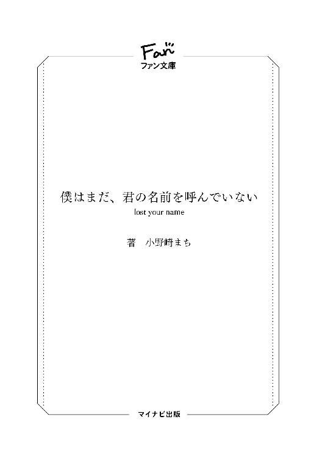

| 僕はまだ、君の名前を呼んでいない ～lost your name～ サムウェア・ノットヒア (マイナビ出版ファン文庫) | |
| 小野崎 まち | |
| 株式会社マイナビ出版 (2017) | |
本作品を電子化するにあたり、一部の感じ及び、記号等が簡略化されて表現されている場合があります。
本書はリフロー形式で制作されています。本文は文字の書体と大きさを変えることが出来ますので、お好みの設定で読書をお楽しみください。

「人生に早送り機能があったらいいのになって、思ったこと、ない？」
そんなことを僕が彼女に訊いたのは、たぶん、僕達が高校に入学して二度目の春を迎えたころだったと思う。僕と彼女の関係を決定的なものにしてしまったあのとても寒い冬を越えて、新たな生活が始まって、ようやく僕らの世界の温度が上昇を始めたころ。
そのとき、僕と彼女は学校帰りの列車の中にいて、今ではもうあまり目にしなくなったボックス席に向かい合って座っていた。車内に、他の乗客の姿はない。開放された窓から吹き込む春の風に髪をなびかせながら、僕達はぼんやりと窓の向こうを眺めていた。
がたんごとん、がたんごとんと同じリズムで繰り返される音と振動。高速で流れてゆく車窓からの景色------人工物よりも自然の緑のほうが多い、地方の街並み。住宅街、かと思えば田んぼ、次いで国道、ガソリンスタンド、そして防砂林、海、地平線。やがてまた住宅街。続いていく景色。流れていく街並み。繰り返される光景。
「......なに、それ」
少し間が空いたあと、外を向いたままの彼女から、ぼんやりとした声が返ってきた。
「昔見た特撮のドラマに、悪の怪人が人々の時間を早送りにしちゃうっていうシーンがあってさ、ちっちゃかったころ、幼心に、『あ、これだ』って思ったんだよね」
僕もまた流れ過ぎ去っていく外の世界を眺めたままで、答える。
「映画のつまらないシーンを飛ばすように、僕の人生も、一二〇倍速ぐらいで進んでいってくれればいいのにって」
進んで、進んで、先へ先へと加速していって。
「未来なんて、あっという間に過去になってしまえばいいのにって」
僕の全てが過去になって、終わってしまえばいいのになって、幼いころの僕はいつも思っていた。
「死にたかった？」
なんでもないように彼女が訊いてきて、
「未来の長さに、耐えられなかったんだ」
なんでもないように、ぼうっとした声で僕は答える。
「一日が終わって、やっとの思いで今日という日を昨日にしたところで、一息吐く暇もなく明日がやってきて、また今日になるんだ。明日が、その明日が、そのさらに明日が、延々とやってきてさ、ある日小さな僕は、それが生きていくということなんだって気づくんだ。どれだけ僕が頑張って今日という日をやり過ごしたところで、絶えず明日はやってきて、僕はいつまで経っても休むことができないんだって、気づくんだ」
未来という膨大で茫漠とした時間が、今を生きる僕の肩の上にはのしかかっていて、どれだけ今を過去にしても、ちっともその重みは減ったように感じなくて、その途轍もない量に、幼い僕は押しつぶされそうになっていた。
「そんなときに出会ったのが、漫画だったんだよね」
公園のベンチの上に読み捨てられていた週刊漫画雑誌。ひとりで近所を徘徊していた僕はそれを見つけて、なんの気なしに読みはじめて------気づけば空は夕暮れのオレンジ色に染まっていた。
「衝撃だったよね。物語の途中から読んだはずなのに、そんなことは少しも気にならなくてさ、ほんの数ページ読んだだけで、ずぶずぶに引き込まれたんだ。今だとあのころは黄金期って言われてるけど、本当に、そのころの僕には手にした雑誌が光り輝いて見えたんだよ」
ドキドキして、ワクワクして、手に汗をかいて、次のページを捲るのももどかしくて、興奮して、熱中した。あっという間に時が過ぎていった。
「それでやっぱり、『これだ』って幼い僕は思ったんだ」
面白い物語に耽溺していれば、『今』なんてあっけないほど終わっていくのだと。苦痛に思うこともなく、むしろ楽しいとさえ感じながら未来は削れていくのだと。そのときだけは、僕は、僕という意識があることで生まれるいろんな苦しみから解放されて自由になれることを、知ったのだ。
「それからはもう、どっぷりだよね。漫画だけに限らず小説、ゲーム、アニメ、映画と物語に首まで浸かってさ。幸いなのかどうか、自由にできるお金には不足しなかったし」
「それでこんなふうになっちゃったわけなんだ」
かすかに笑みを含んだ声に、視線を窓の向こうから彼女へと移す。彼女もまた、こちらを見ていた。その口元には、いたずらっぽい笑みが浮かんでいる。
「こんな、とか言わないでくれる？ ふつーに傷つくからね、僕」
「いいじゃん。あなたがそんなだから、私は今ここにいて、そこにあなたがいるんだよ」
それはとても自然に、するりと彼女の口から流れ出た。
思わず、彼女の顔をまじまじと見てしまう。少しの間、無言の時が続いて、
「------うん。まあ、そうなんだろうね」
「うん、そうなんだよ」
小さく笑って、また彼女は流れる景色に視線を移す。僕も同じく。
会話は途切れて、沈黙が生まれる。
僕らの無言の間を縫って、がたんごとん、がたんごとんと列車は次の駅に向かって走り続ける。
「それで」
やがて、ぽつりと、彼女は小さな声で言う。
「うん？」
「それで、今もそう思ってるの？ 人生を早送りしちゃいたいって」
「......うん、そうだね。まあ、あれだよね」
「なに？」
「やっぱり、漫画とか小説とかそういうのを手放して、僕は生きていくことができないんだなって、つくづく思い知らされるんだ」
「そっか」
「うん。だいたいね、面白すぎる漫画とか小説が悪いんだよ」
「そう、かな？ ......そう、かも」
「きっと、そのはず。そうだったらいいのになって、思うよ」
大きく溜め息を吐いて、ちょうどその瞬間に、列車はごっという音と衝撃とともに、トンネルの中に入り込んだ。
窓の外は暗闇へと変わり、吹き込む風はかび臭くなる。
なにも見えなくなった窓の外を、それでも見続けながら、
「私はね」
彼女は言う。
「私はね、私っていう存在にね、スイッチがあったらいいのになって、よく思ってたよ」
感情のわかりづらい、ぼんやりとした声色だった。
「痛い思いもしないで、苦しい思いもしないで、ぱちんって私の電源をオフにできたらいいのにって、いつも思ってた」
彼女の顔を窺う。
その横顔には、表情がなかった。
「スイッチが切れた私は、真っ暗な水の底へと静かに沈んでいって、柔らかい泥に包まれて、そのまま絶対に覚めない眠りにつくんだ」
そう在れたらどれだけいいだろう------そう思っていたんだ、と彼女が言う。
「今でも、私の眠るときのイメージは、それなの」
僕に顔を向けて、彼女は薄く笑う。口の端が少し上がっただけの微笑み。
「------そう。よく、眠れる？」
「うん。まるでお母さんに抱きしめられているみたいで」
「安心するんだ？」
「うん......。お母さんと、一緒だから、やっぱり、落ち着いて、安心、するんだ。......お母さん、今ごろ、どこにいるのかな」
彼女の背中が、段々と丸まっていき、肩が落ちて、顔が俯いていく。膝の上でぎゅっと握りしめられた小さな手を、僕はそっと自分の両手で包み込む。
「いつか、また、会えるよ。きっと、いつか、笑って再会することができるよ」
「ほんとうに？」
少しだけ顔をあげて、僕を見上げる彼女に、頷き返す。
彼女の母親について、詳しいことなんて知らなかった。けれどそれでも、僕はただ彼女を安心させるためだけに、なんの根拠もない言葉を、吐く。
「うん、きっと」
「......ん、そっか。あなたがそう言うなら、そうなのかな」
弱々しい笑みを浮かべた彼女は、安堵したように大きな息を吐き出した。
僕も、心の中でだけ、ほっと一息。
「ところでさ」
「ん」
「僕のことは、きゅーたんって呼ぶんじゃなかったっけ、ウルブシ？」
茶化すような僕の言葉に、一瞬、目を丸くした彼女は------ウルブシは、やがてはにかんで、うっすらと頬を染めた。
ちょうど、そのタイミングで電車がトンネルを抜ける。
ごっという音とともに、風。
彼女の髪が、再びふわりと舞い上がる。
その艶やかな黒の中に、風に乗って運ばれてきた桜色の花弁が散る。
花の香り。春の、桜の匂い。
黒と薄紅のコントラストの中で、舞う髪をそっと押さえた彼女は、控えめに微笑む。
「まだ、恥ずかしいんだよ......きゅー、たん」
その顔を、僕は、今でも覚えている。
ゆっくりと、意識が浮かび上がっていく。
水底から水上へ。
光ひとつ存在しない暗闇の海底から、光差し込む水面へ。
ふわりふわりと近づいていく。
同時に、ぼんやりとしていた意識が次第に明確になってゆき------、
僕は、目を覚ます。
『------《TABULA RASA》。そこにはその文字が刻印されていた。鈍色の鋼に、機械によって刻まれたかのように滑らかに自然に、浮かび上がるようにその文字はあった。剣、である。いや、それをそう呼んでよいものか。確かに形状としては剣である。鈍色の鋼の刀身に、鍔があり、そして柄がある。どれも簡易に造られており装飾などは一切なされていない、無骨。』
目の前には、真っ白な画面があった。
テーブルの上に置かれた、電源が入りっぱなしのノートパソコン。起動されたままの、文章作成ソフト。その白いページの冒頭数行にだけ文が書かれており、以降は改行マークが延々と最後まで続いている。
どうやら昨日は仕事をしている途中で寝てしまったらしい。
溜め息を大きくひとつ。やれやれと俯せになっていた身体を起こそうとしたところで、背中に妙な重さと温かさを感じる。朝ゆえに筋肉が硬直している首を曲げて振り向くと、何者かのつむじが見えた。
黒い髪の毛。どうやら、その持ち主が僕にもたれ掛かっているようだった。
肩よりもやや長めに伸ばされた髪の毛に隠されて、その顔は見えない。しかし、考えるまでもなかった。我が家における住人は、僕と母親であるあの人以外にはひとりしかいない。そしてあの人がこんなことをするはずはないので、該当人物は残りのひとりでしかあり得なかった。
「ちょっとウルブシ、重いんですけど」
声をかけるも、反応はない。どうやらいまだ寝ているようで、身体を揺すってみても起きる様子はなかった。ただ「ぬぅ」というなんだか死にそうな呻きが聞こえただけだった。
仕方ないので身体をさっと横にずらして立ち上がると、僕の背中により掛かる形で寝ていた彼女------ウルブシは、結構な勢いをつけてテーブルの端に額を打ち付けることとなった。
「ぬぁっ」
一瞬で目が覚めたらしく、額を押さえて床の上でもだえている。
それを見下ろして黙ったままでいると、やがてウルブシはぱたりと身動きを止めて、静かになった。かすかな寝息。また寝てしまったらしい。
仰向けになったウルブシの顔を、覗き込む。
密かな自慢であると以前自分で口にしていた、さらさらとしてつややかな髪は寝癖で見るも無残に荒れており、その肌もまた美白というより不健康そうな青で、潤いを失ったように乾いて見えた。
普段であればツンとした澄まし顔を見せる整った顔立ちは、今は苦悶の形に歪められており、お世辞にも美人とは言えない様を晒している。
その頬をぺちぺちと叩いてやると、形のよい眉の下できつく閉ざされていた瞼が、うっすらと開いた。
「きゅー、たん......？」
僕を見るウルブシの目は、真っ赤に充血していた。あまり寝ていないせいだろうと思う。そういえば昨夜も、コマ割りが決まらないと言って僕の部屋にやってきて、意見を聞いてやっているうちにお気に入り漫画談義に突入して、最終的にいつものごとく酒盛りへと発展したのだった。
ほとんど記憶がないが、パソコンの前に座っていたということは、僕自身はその後で少しは作業しようとしたのだろう。パソコンの画面には、その痕跡らしきものもある。だが、状況を考えれば無駄に終わったと言えるだろう。
プロットづくりをしていたはずなのに、どうして本編を書きはじめているのか。
先走り過ぎである。
「ウルブシ、起きてる？ 寝るならちゃんと自分の部屋に行って寝なよ。って言っても、もう昼なんだけどさ」
「あー......いや、起きる、よ。起きます」
むくりと気怠そうに身体を起こすウルブシ。その、まるで鳥の巣のように荒れ果てた頭に目をやって、次いでウルブシから漂ってくるフローラルには程遠いアルコール臭に、顔をしかめる。
「とりあえずシャワー浴びてきたら？ 全体的にひどいことになってる」
「えー、あー......、そだね。そうする」
ウルブシはぼんやりとした顔でそう答えると、のそのそと立ち上がり背中を丸めて部屋を出ていった。
それを見送りながら、僕は先ほどまで見ていた夢のことを思い出す。
まだ僕達が高校生だったころ。あの冬を越えたばかりの時期で、僕とウルブシの間には、いまだぎこちない空気が残っていた。
あれから、もう七年以上の月日が経つ。
長いと言えば長く、短いと言えば短かった、時間の経過。現在であったときは、死ぬほど長いと感じていたのに、過去になってしまえばあっという間に思える。
あのあと。
高校を卒業した僕達は同じ地元の国立大に進学し、そこでもなんやかやと様々な出来事があったものの、結局のところは留年することもなく無事に四年で卒業した。
卒業した、のだが。
なんというか、僕達はふたりして、就職は、できなかったのだ。あるいは、しなかった、とも言える。もちろん就職活動をしてはいたのだが、結果を言えばそれは実を結ぶことはなく、終わったのだ。
結果、僕とウルブシは、就職という人生の新たなステップを踏み外したままに、学生という身分を失うことになった。
今は、それからさらに一年が経過していた。大学を卒業して二年目。季節は再び春を迎えようとしている。僕達の一年後輩も、もうしばらくすれば新卒社会人として世の荒波に揉まれることになるだろう。
だというのに、僕とウルブシは、いまだに定職に就くことなく、自宅に引きこもっていた。
しかしそれでも、僕もウルブシも完全な無職というわけではなかった。ただ感情や周囲の状況に流されるままに生きてきただけだったが、気づけばいつの間にか僕は------売れないライトノベル作家というものになっていたのだ。
ついでに言っておけば、ウルブシもまた、新進気鋭の漫画家へとジョブチェンジしていた。
「......どうして、こうなったんだろうな」
幼いころも、大人になってからも、未来に対して夢や希望を抱いたことはなかった。将来に対する展望があったわけでもなかった。むしろ、そういったものを考えること自体、避けていた。ただ漠然と、『そのうち』『いつか』『どうにかなるはずだ』『どうにかなればいい』と曖昧な考えしか持とうとしなかったのだ。
きっと、それなりの企業に就職して、それなりの収入を得て、それなりの大人として生きていくのだろうと勝手に思っていた。
だというのに、現実はこれである。
まったく、現実こそが複雑怪奇であるとはよく言ったものだ。
「そもそもが、社会に適合できると思ったのがまちがいだったのか」
呟いて、開いたままだったノートパソコンのカバーを閉じる。自動的に休止モードになるのを確認して、うん、と背伸びをする。肩からバキバキとひどい音が聞こえた。
「大人になれば、自然ともっとうまく生きていけるようになるんだろうって、思ってたんだけどなあ」
しかし実際にはそんなことはなく。
未来は現在を積み重ねた先にあるもので、今の僕がある日どこかで突然上等な生物にランクアップするわけではないのだ。きっと積み重ねるものがなければ、今の僕はどこまでいっても僕でしかないのだろう。しかし、だからといって経験値をどれだけため込んだとしても、必ずしもレベルアップするわけではないというのが、現実のクソゲーなところである。
溜め息をひとつ。気づけばいつの間にかそれが癖になっていた。溜め息を吐くと幸せが逃げていくとよく言うが、逃げていくほどの幸せを今の僕は感じているのかな、となんとなく思う。
別に、不安定すぎる今の生活が嫌なわけではない。僕も、それからきっとウルブシも。
ただそういう人間だから、というしかない。いちいち今の自分は幸せなんだろうかと自問しなければ、自分が幸せかどうかもわからないような人間なのだ。
けれど、まあ、とりあえず。
今のところの僕らはそんな現状を受け入れて、それなりにうまく、日々をやり過ごしている。
高一のあの冬が終わってから、ずっと変わることなく。
そうやって、僕とウルブシと、母親であるあの人の三人は、僕の実家であるこの家で、一緒に暮らしているのだ。
「あ、起きた？ 今ね、お昼ごはんつくってるから」
リビングに降りていくと、炒飯だろうか、キッチンでフライパンを振っていたあの人が僕に気づき、こちらを振り向いた。
僕の母親であるこの人は、いまだ三十を過ぎたばかりである上に童顔で、よく姉にまちがえられる。普通の主婦ならばそれをうれしいと感じるのだろうが、この人はそれが昔から気にくわないようだった。母として見られないことが多いのは自分に母親としての自覚が足りず、母親というものに成りきれていないのだと、以前、ひどく酒に酔ったときにぼやいているのを聞いたことがあった。
そのことに関して、僕から言えることはなにもない。おそらく、僕が反抗期の際に、散々「あなたには母親としての威厳があまり備わっていないのでは」（婉曲的表現）というようなことを言い放って凹ませていたことも原因のひとつだとは思う。
だが、今となってはどうでもいいことだった。
今更、知りたいとも思わないし、この人もわざわざ口にすることはないだろう。
触れるべきではないところには触れず、見なくともいいところからは目を逸らし、そうやって僕達は日々を過ごしているのだから。
「♪〜〜、♪〜〜〜〜」
機嫌よさそうに鼻歌を奏でる、その背中をぼんやりと眺める。
この人が、僕達の生活に口を出すことは基本的にはなかった。僕達の仕事に理解を示し、不規則な生活を続けても、文句を言うこともなく、こうしてご飯をつくってくれたりする。
前にウルブシが「居候の自分がやりますから」と家事の手伝いを申し出たことがあるが、そのときは笑顔で断られていた。亡くなった父の保険金やら早世した自分の両親の遺産で、一般人が持つには充分過ぎる額の貯えがあるこの人は、わざわざ働きに出る必要がない。そのため自由な時間を持て余しており、せめてそうした家事ぐらいは任せてほしいと逆に僕達にお願いするのだ。
主婦としての仕事をしていないと不安なのだと言われてしまっては、それ以上無理強いすることはできず、僕もウルブシも引き下がるしかなかった。
「きゅうたくん、漆ちゃんが出たら、シャワー浴びてきなさい。あなたも臭うからね」
「ああ、うん。わかってるよ」
欠伸を堪えながら答える。なお、『漆』というのはウルブシの本当の名前だ。僕が彼女を本名でなくあだ名で呼んでいるのは、思い出すのも恥ずかしい初対面時の出来事に起因するのだが、今振り返ってみても、あの対応はなかったな、と思う。
あのころの僕は、アホだった。
「あー、さっぱりした」
と、件のウルブシがタオルで髪の毛を乱暴に拭いながら、リビングに入ってきた。上はヘソ丸出しの短いＴシャツで、下はショーツ一枚という薄着。
最初にウチに来たころは、たとえ風呂上がりといえどもっと慎み深い格好をしていたものだが、今ではこのような有様である。まあ、それだけウルブシがこの家に馴染んでいるという証拠なのだろう。きっと、それは悪いことではない。
「あー、涼花さん、私も手伝います」
ご飯を用意しているあの人の姿を見るなり、ウルブシは駆け寄る。
「漆ちゃん、ありがとう。それじゃあ、サラダの盛りつけお願いできる？」
「はいです」
「お皿はいつもの黄色いやつを使ってね」
「はーい」
そんなふうに台所に並び立ち仲良く料理するふたりは、まるで姉妹のように見える。そのことに複雑な気持ちを抱きながら、僕もシャワーを浴びるべくその場をあとにした。
「それで、漆ちゃん、原稿のほうはどうなの？ ちゃんと進んでる？」
「うー、ぼちぼち、ですね。連載開始までに三話分ぐらいストックつくっておかないといけないんですけど、まだ一話もできていなくて」
「よくわからないんだけど、それって、大丈夫なの？」
「......まったく大丈夫じゃないです」
「っていうか、それ僕も初耳なんだけど。かなり絶望的じゃない？」
「うん、まあ。でもまだネームだけだから、なんとかなるような気がしないでもない」
「本当に？ 僕も次回作のプロットづくりで忙しいから手伝ってあげられないよ？」
「たまに意見聞かせてくれれば充分。そもそもネームって誰かに手伝ってもらうもんでもないし」
「あんまり無茶はしちゃだめだからね？ 漆ちゃんは女の子なんだし」
「はい、わかってまーす」
僕とウルブシは、共に新人の作家と漫画家だ。僕のほうは新興のライトノベル新人賞を受賞しそのデビュー作を出版、現在はその次の話をどうするか構想中の身だ。
一方、ウルブシはウェブ上に掲載していた作品が編集者の目に留まり、それが縁でデビューした。創刊されて間もない月刊誌に掲載した読み切り（ウェブ公開していたもののリメイク版）の反応がよかったため、連載という話が持ち上がり、今はその準備中だった。
------正直な話。
あまり認めたくないのだが、僕のデビュー作の世間的な評価は、微妙だった。まったく売れなかったというわけではないし、酷評されているわけでもない。中には高い評価をしてくれる人もいるのだが、全体としては可もなく不可もなくといった感想のほうが多いのだ。
少なくとも、自分で毎日こつこつとエゴサーチした限りでは、そういう評価だった。
ちなみに、その内容は『クラスごと異世界転移の冒険者もの』と言えば想像できるだろうか。おそらくその想像から一歩ぐらいしか離れていない。流行も流行、直球ど真ん中のネタである。今になって冷静に考えれば、そりゃ話題になる余地もないだろうと思う。
そんな僕に対して、ウルブシの掲載された読み切り、およびオリジナルであるウェブ版は各所で話題になるほどの反応があった。
まずはその素人離れした圧倒的な筆致、そして他に類を見ないほど独特な構図に度肝を抜かれる。さらにはストーリー構成も中だるみがほとんどなく、次から次へと加速度的にページを捲る手を早めていき、読者を飽きさせることがない。
なにより、それらが渾然一体となりひとつの漫画作品へと昇華されたとき、読んだ者の心を大きくとらえて放さないパワーを発揮する。単なる面白さに留まらない、読者の心を震わせ、動かし、揺さぶる力である。
創作に携わる者であれば、おそらく誰でも心から欲するであろう要素を、ウルブシの漫画は備えていたのだ。
僕とあいつを比べて、そんな差を自覚してしまうと、どうしたって心が沈んでしまう。
限界というものを、感じてしまうのだ。
------今更の、話ではあったのだけれど。
ご飯を食べ終えると、僕もウルブシも、それぞれ二階にある自室に籠もる。
僕は起床時と同じように、テーブルの前で胡座をかいていた。新人賞の賞金で購入した、結構なお値段がした座椅子に背中を預けて、思索に耽る。
部屋の隅にはパソコン作業用のデスクもあるのだが、そちらはまだ足元が寒いため使っていなかった。もう少し暖かくなったならばそちらに移ろうと、わりとどうでもいいことを考える。
「ぬーん」
隣の部屋では、ウルブシも同じように作業机に向かっているのだろう。彼女は今時の漫画家らしく作業を全てデジタルで行っているため、漫画家の必需品であったトーンやペン、インクなどの画材道具を一切持っていない。ＰＣとペンタブがあればそれだけで漫画が描けるタイプだ。
そのことにあいつは引け目を感じているようだが、それも時代の流れと言えばそう言えるもので------。
「いやいや、また思考が逸れてるって」
自分で自分に突っ込んでしまう。
今はウルブシのことや、他のことはひとまず頭の中から追い出しておく。
それよりも自分の問題、次回作のことだ。編集部から、一週間を目安に新作のプロットをいくつか送ってほしいと言われているのだ。
だが、パッと思いつくものはどれも創作意欲がいまいち刺激されないものばかりで、これを書こう、書きたい、絶対に面白くなるという感覚が湧いてこない。
そもそも、本当に次回作を出版してくれるのだろうかという不安がつきまとって、どうにも集中しきれなかった。ライトノベル業界というのは他と比べてデビューしやすいものの生き残るのが非常に厳しく、一冊だけ出して消えていくという作家もたいして珍しくはないのだ。
というか、それが大半を占めている印象があって、デビュー作の反応が今ひとつであった僕もまたそのひとりでしかないのでは、と考えてしまう。そういった不安は消そうと躍起になればなるほど、かえって心の奥底にへばりついて、なかなか消えてくれなかった。
「だめだな、こりゃ」
それからさらに一時間ほど粘ってみたが、結局は一文字も打ち込むことができないまま、時間だけが無為に過ぎていった。これ以上の作業を断念する。
気分転換のために一服することにして、部屋の窓から外------ベランダへと移動。備え付けの灰皿の前で煙草に火を点けた。
思いきり吸って、吐く。きれいな青の空を背景に、紫煙が風にのって流されていく。暖かな、春の兆しを感じさせる風だった。
しばらくそうやって煙を味わいながらぼんやりしていると、
「だめだー、ぜんっぜん納得いかない」
隣の部屋から、のそのそとウルブシが顔を出した。隣までやってきて僕に並ぶと、自分の煙草に火を点ける。
「下、履きなよ」
相変わらずウルブシはショーツ丸出しのままだった。青空の下、仁王立ちになって煙草をふかすウルブシのお尻には、日本人なら誰でも知っている猫を擬人化したキャラクターの可愛らしい顔。
「ねえ、ていうかどうしてこの歳でそのパンツ？」
思わず質問してしまった。
「これ、昔にお母さんが私達に買ってくれたやつでさ、なんでか穿いてるとすごくリラックスできるんだよね」
こちらに顔を向けず、ぼうっと空を見上げたままで、ウルブシは答える。
「いつも服の整理をするときに捨てようと思うんだけど、どうしても捨てられないの。自分でもなにやってるんだろうって思うんだけどさ、こうやって思い出したように穿いたりなんかして......手放せないんだなあ。忘れられるはず、ないっていうのにね」
「物持ちがいいのは、悪くないことだと思うよ、僕は」
下着の話題については、それ以上触れなかった。ウルブシの家庭に関する話題は基本的にどれもシリアスかつデリケートなものなので、迂闊に口にしていいことではないのだ。
「えーっと......それで、原稿のほうはどんな感じ？」
「思いっきり、行き詰まってる」
話題を逸らしたというよりは戻して僕が訊ねると、ウルブシは顔を顰めてそう答えた。
「きゅーたんは？」
「行き詰まってるねえ。大体さ、本当に出版してくれるのかなって。不安になるんだよね」
「あー、ラノベ業界はねえ、生き残り率が大変なことになってるみたいだもんね」
「そっちはどうなの？ 生き残りっていうか、雑誌、廃刊とかなったりしなさそう？」
「どうだろ。一応余所から大物を何人か引っ張ってきてるから、それなりに購読者数は確保していると思うんだけどね。だから問題は、打ち切りにされないかどうかってとこかな」
ぬーんと大きく背伸びをして、「空、青いなー」とウルブシは間抜けな声を上げる。
「あそこ、今のところ打ち切りの最短記録ってどのぐらい？」
「んーっと......今のところ、たしか、打ち切られたのはなかったと思うよ」
「おー。まあ、創刊したばっかじゃ、そんなにほいほい打ち切ったりもできないのかな」
「だといいんだけどね」
二本吸い終わったところで、ウルブシは部屋の中に戻っていった。僕も、吸っていた煙草をつぶして、灰皿に放り込んでから、部屋に戻った。
なんとなくインスピレーションが湧いてきたような気がする。
パソコンの前に座り、タタタ、とキーボードに指を打ちつける。
①現代日本で主人公が金髪の女騎士に出会い、魔術師同士の戦いに巻き込まれていく。
②現代日本で、高校中退の主人公がある日自称「死神」（一人称僕）と出会い、云々。
③近未来の日本で、ある日謎の生物からの襲撃を受けた人類は人型巨大ロボットで対抗して、人類ＶＳ化け物の戦争が始まる。
インスピレーションじゃなくてインスパイアだった。
余りにも他作品からの影響を受けすぎる自分に絶望し、僕は一気にモニターにある文字列を消去した。
再び白に戻る液晶画面。
「オリジナリティってなにさ？」
答えてくれる人も答えられる人もいるわけはなく、僕は頭をかきむしって本日二度目の一服に向かった。
翌日、担当編集との打ち合わせのため、僕は午前の特急列車に乗って都内に向かっていた。隣にはウルブシの姿。
「私も打ち合わせ」
とのことだった。昨夜遅くまで原稿作業をやっていたらしく、座席に腰を下ろすと鞄から取り出したアイマスクとネックピローを装着して、すぐに寝入ってしまう。ウルブシの荷物を頭上の棚に収めてあげてから、自分も寝るための準備に入る。
昨夜は僕もまた必死になって、ひたすらプロットづくりに励んでいた。そのため、ほとんど寝ていなかった。けれど、その甲斐はあって、なんとかそれなりの水準のものを仕上げることはできたと思う。
①ゲームの中に閉じ込められたプレイヤー達による現実への脱出劇、コメディの膜に包まれていながら実際はどシリアスな近未来ＶＲＭＭＯもの（ファンタジー風味）。
②自己認識を持たぬよう育てられた少年が悪役たるラスボスに拾われて、命じられるまま戦いを続けていくうちに、他者との争いを通して自我を獲得していき、ついには世界の真理へと至る似非伝記。
③レベルもステータスも魔法もある異世界において、伝統ある神事『球遊び』へと命を賭けて挑み、仲間を次々に失いながらも勝利を掴もうとする少年が主人公の、ファンタジーバトル野球もの。
その三つである。
なお、先ほど駅で列車を待っているときにウルブシに目を通してもらったところ、この業界で有名な三人の作家さんを順に挙げられ、その劣化版くさいと評された。ふざけんなとシャツ越しに下着のフロントホックを外してやったら、ぐーで殴られた。おかげで今僕の鼻にはティッシュが詰まっていて、完全にアホの子である。
------自分が反射的に手を出していたこと、僕の血を見たことに、ウルブシがいつになく取り乱してしまい、それを宥めるために多大な労力がかかったことを思えば、アホというよりはどうしようもない愚物と言ったほうがよいのかもしれないが。
年齢を重ねたところでいくらも改善する余地が見えない己の思慮の足りなさに、我ながらうんざりする。とりあえず、鼻血を垂れ流しながら涙目でウルブシを慰める僕が、誰かに通報されなかったことだけでもよしとせねばならないだろう。
「なにを、やっているんだか。自分に才能がないことぐらい、自分がよくわかってたろうに」
小さく漏らした呟きは、思ったよりも大きく聞こえた。慌てて他の席を見回すが、車両内には僕達以外の乗客の姿は見当たらず、ほっと安堵の息を吐く。
座席に背中を預けて力を抜くと、そのまま目を閉じた。
......僕が賞を獲れたのは、単に運がよかっただけにすぎない。
たまたま、嗜好の合う編集者の目に留まった。タイミングがよかった。他に目立つ作品がなかった。
たぶん、その程度のことにすぎないのだろう。
なぜならば、僕が生み出す物語は、どれもどこかで見たこと聞いたことがあるものばかりで、目新しいところ、本当に誰かを感動させるところなど、ひとつもなかったからだ。
なにかが突き抜けているわけでも、及第点の作品をコンスタントに量産できるわけでもない。ただ、いろいろな作品のいろいろな部分をうまく継ぎ接ぎして、無理やりひとつの作品に仕立てあげて満足しているだけの、凡下でしかない。
でも、だったら、どうして。
今も自分は物語を書き続けているのだろうか。
どうして、運よく本を一冊出版することができた時点で見切りをつけて、どこか適当な企業に就職しようとしなかったのか。
どうして、これもよい経験だったと満足して終われなかったのか。
『そもそも君は、なにが書きたくて筆をとったの？』
ふと、この間担当編集から言われた言葉を思い出す。
僕に、書きたいものなんて、あったのだろうか。僕が最初に小説もどきを書きはじめた理由なんて、本当に大したものではなかった。手当たり次第に漫画や小説を読み漁っていくなかで、ふと思ったのだ。前に読んだ、ああいう物語が読みたいのに、なかなかピッタリくる作品が見つからない。どれも微妙にズレていて満足のできる作品がない。だったら、自分で書いてしまおうと。
本当に、たったそれだけの理由で、僕は創作活動を始めたのだ。
作家というものに憧れていたわけではなく、誰かに伝えたいなにかがあったからというわけでもなく、単なる自己満足のために、僕は物語を紡ぎはじめた。
だから、そうやって書き散らされ人知れず蓄積していった作品群は、もともと誰かに評価されることを期待してつくられたものではなかった。けれど、貶され酷評されるよりは、肯定的な反応をもらったほうが気持ちよくなれるのは当然の話で、受賞したことに不満などあるはずもなく、光栄だしうれしいというのは素直な僕の思いだった。
問題は、そこで終われなかったのはなぜなのか、ということだった。
作家であり続けることに強い拘りがあったとか、普通に働くよりはるかに稼げる、自分には才能があると勘違いしてしまったとか、そんなことがあったわけではない。
「結局は......自分にとって楽なほうに、流されていってるだけなのかな」
ぽつりと、意図せず呟きが零れた。
そしてそれが思いのほか、自分でも意識していなかった部分を的確に突いていて、軽い自己嫌悪に陥る。
「普通の大人------なんて、とんだ幻想だったな。ね、ウルブシ」
目を開けて、隣に声をかけてみるも、眠りに落ちているウルブシから反応が返ってくるわけもない。
「......ぐっすりと寝入っちゃって。どんな夢を見ているんだか」
ウルブシの、高校時代から変わらない艶を帯びた黒髪をそっと撫でてから、また僕は瞼を下ろしていく。
いつだったか、ウルブシが口にしていた言葉が、脳裏に蘇る。
『ときどき、お母さんのお腹のなかにいる夢を見る。たのしいことも、うれしいことも、くるしいことも、つらいことも知らない私は、ただ暗闇と心臓の音に抱かれてひとり微睡んでいるの。とても、とても幸せなゆめ。そのまま、この世界から消えてなくなりたくなるほど』
『ときどき、お母さんのお腹のなかにいる夢を見る。でもこの世界に生み落とされた私は、かなしみと、おそろしさと、いかりのなかで、声が枯れ、血を吐くまで泣きわめいているの。目が覚めたときは、いつも、この世界から消えてなくなりたくなる』
------ああ、ならば、せめて。
「夢なんか、見ないで眠ることができればいいのにね......ウルブシ」
幸せな夢も、悪い夢も、どうせ目覚めれば最悪の気分になるだけなのだから。
僕達のどこをさがしても、都合よく自分をオフにできるスイッチなんて、ありはしないのだ。
数時間列車に揺られたのち、上野駅で降りて、僕とウルブシは別れた。
互いの出版社は立地的にそれほど離れていないため、本来であればその必要はないのだが、僕はＪＲ、ウルブシは地下鉄を使うからだ。
基本的に順応性が高いウルブシは何回か東京に来ただけであの複雑な地下鉄網を把握してしまったのだが、石橋を叩いて叩いて叩きまくった挙句叩き割ってしまい結局別の橋を使って渡るほどに小心者である僕は、以前に迷って以来、あんなわけのわからない代物の世話にはならないとかたく心に誓っている。
よって、同じような場所に向かうために、僕とウルブシは別々の手段を用いるのだ。
相変わらず広い構内を歩き回って、僕は山の手線の緑の看板を探す。
ところで毎回思うのだが、「山手線内回り・池袋方面」とか「山手線外回り・品川方面」などと示されても、山手線内の駅名をほぼ知らない僕にしてみれば、まったく案内になっていない。僕世界の中では、山手線というのは輪状になっていて、上野より上に行くか下にいくかという認識をしているので、下のほうとか上のほうとか説明してくれないとわからない。
すでに十回以上は上京しているのに、どっち回りに乗ればいいのか毎回忘れてしまう僕の記憶力に問題があるのかもしれないが、まあ、忘れてしまうものは仕方がないと思う。だから僕は毎度毎度、うろ覚えな記憶と勘を頼りにどちらかのホームに一度降りてみて、そこの簡易路線図をいちいち確認する。
今のところまちがえたのは二度しかない。今日も無事、目的のホームでまちがいなかったようだった。自分の、大学の受験戦争を終えて以来まともに稼働したことのない記憶力とか勘とかを褒めてやりたくなる。
待つことしばし、列車がホームに到着する。
東京で列車を使う度に感心するのが、このストレスのないスムーズな運行だ。田舎だとこうはいかない。一時間に二本とか、多くでも三本か四本ぐらいで下手をすると一本しか来ないときもあるのだ。そんな地方で育った僕は、中学生のころに修学旅行に行くにあたって、初めて東京の列車は数分おきにやってくるというのを知り、「誇張し過ぎだろ」とか思っていたりした。便利過ぎじゃんとか思ったりした。
実際は全然誇張なんかじゃなかったわけなのだが。
「......ひと、おおすぎでしょう」
地方とは比ぶるべくもない人口密度に辟易しながらも、途中別の路線に乗り換えて数駅、なんとかお世話になっている出版社の最寄り駅のホームに降り立った。ここから歩いて十五分強ぐらいで出版社に着く。他に歩いて五分ぐらいのところにも駅があり、最短ルートで向かうにはそちらを使うのが一般的なのだが、地下鉄なので僕は絶対に利用しないことにしている。地下鉄に乗るぐらいならむしろ歩くというのが僕のスタンスである。
「......ちょっと人類の数って増えすぎじゃない？」
ひとりぼやきながら、長閑な陽気のなかをてくてくと歩いていく。
大通りから外れて細い路地をゆく途中、高校とか女子大とかがあって、たぶんその体育館だと思うのだけれど、ビルとか他の建物に埋没するように建っていて、初めて見たときは意外に思った。僕の地元では大抵、体育館というのはフェンスや壁で囲まれた学校の敷地内に存在するのが普通だったので、そんなふうに外界とつながった体育館というのは、物珍しかった。
それからさらに十分ほど歩いたところでようやく出版社に到着する。中に入って受付けで担当さんを呼び出してもらうと、ほとんど待つこともなく姿を現した。三十歳ぐらいの、頭をスポーツ刈りにしたやたらとゴツイ体つきの男性だ。白いポロシャツが内側の筋肉の盛り上がりで、はちきれんばかりにパツンパツンになっている。
「あー、どうも遠いところからようこそおいで下さいました。今日は道に迷ったりしなかった？」
「八爪さん、いつまでそのネタを引きずるつもりなんですか。あんなの最初のときだけじゃないですか」
いやあ、お約束かと思ってねと快活に笑いながらバンバンと背中を叩いてくる、僕の担当編集------八爪さん。おそらく本人としては軽いボディタッチのつもりなのだろうが、実際には咳き込むぐらいの勢いと力強さがあって、いつも僕はおふっと声を漏らしてしまう。
「お昼は済ませた？」
「いえ、まだです」
「だったら先にそっち済ませちゃいましょうか」
というわけで、僕と八爪さんは地下一階にある社員食堂へ向かうことになった。
------僕と八爪さんには、奇妙な縁がある。
僕がここの編集部から、応募していた小説が新人賞の最終選考に残ったという知らせをもらったのは、去年の初夏------大学を卒業して、無職のまま新たな春が来て、それもほぼ終わろうとしていたころのことだった。
自己満足のために小説を書いていた僕は、時折ウルブシに求められて読ませていたぐらいで、それまでとくに他者の評価を得ようと行動したことはなかった。もちろん、新人賞などに応募したこともこれより以前にはなかった。
しかし受賞より遡ること数ヶ月前、大学四年の冬。まだ在学中だった当時の僕は、就職先も決まらず、卒論も早々と終了し、卒業を間近に控えて妙に暇になってしまっていた。だからだろう、暇を持て余していた僕は、卒業の記念に一度ぐらいはなにかの賞に応募してみようかとふと思い立ち、本当に軽い気持ちでそれを実行したのだ。
実際、結果にはまったく期待していなかったこともあり、応募したこと自体、僕はすっかり忘れてしまっていた。そのため編集部から連絡が来たときはまさに青天の霹靂という状態で、その少し前にあった出来事もあって、ただただ驚くばかりだった。
というのも、そのひと月前に、僕はこの編集部へとまったく別の用件で訪れていたからだ。
当時、就職先が決まらないままに大学を卒業した僕とウルブシは、いわゆるフリーターという立場にあった。しかも卒業したてのころは、真っ当な人生というレールから外れてしまったという心もとなさ、後ろめたさが強く、その現実を忘れるために半ば自棄になってがむしゃらに遊び回っていた。
しかし、そういった無為な時間がひと月も続くと、僕達は段々と冷静さを取り戻していき、さすがにこのままだとまずいのではと思うようになった。ではどうするかとふたりで相談したところ、とりあえずウルブシは近所のコンビニのアルバイトへ、僕はネット上で見つけたとあるライトノベル編集部の人材募集へ応募してみる、ということになった。
しばらくして、書類選考を通過した僕は採用面接を受けるために上京することになるのだが、なにを隠そう、この編集部こそが、のちに僕が受賞する結果となる新人賞の主催だったのだ。しかも採用面接を担当したふたりのうちひとりが、現在の担当編集である八爪さんであったというのだから、まさに奇遇である。
もちろん、そのときはお互いに先のことなど予想できるはずもなく、普通に面接を受けて、普通に編集部をあとにして、普通に落とされることになったのだが。
しかしそこで縁が途切れることなく、ひと月後、採用試験とは無関係に応募小説の選考の件で連絡が来て、さらにそれが佳作に入選したという結果になるのだから、人生、なにがどうなるかわからないとつくづく思う。
その後、受賞のコメントやプロフィール下さいとか、原稿データ下さいとかいろいろ言われたり、担当さんが付きましたよろしくお願いしますなどとやったりしているうちにあっという間に受賞式の日がやってきて、いまだ狐につままれたような心持ちのまま、僕は再び上京することになった。
一度面接のときに行っているため道順は大丈夫だろうと高を括って出版社へ向かったのだが、実のところ、僕の記憶はまったく当てにならなかった。つまり、見事に迷ってしまう結果となったのだ。
にっちもさっちもいかなくなった僕は、顔を青くしながら担当さんへ連絡し、電話越しにナビゲートしてもらうことでようやく目的地へと辿り着くのだが、当然、予定時刻は大幅にオーバーしていた。
これはマズい、もしかしたら受賞取り消しなんてこともありえるのだろうか。
そんなふうに、戦々恐々としながら担当編集と初めて顔を合わせた僕は、ひと目見て「ん？」と思った。
見覚えが、あったのだ。しかも、ごく最近。
それは向こうも同じだったらしく、あれ？っとなって、互いに数秒固まる。
『いやはは、ど、どうも......担当の八爪です』
『え、ええと、どうも、沖澄です。この度はお手数かけまして本当に申し訳ありません』
そこで、また数秒間が空く。
『あのー、もしかして、以前、採用面接にいらした方......ですか？』
『え？ あ、ああと、その......はい、そうです』
と、そんな感じで初めは非常に気まずくギクシャクしていたものの、八爪さんはもともと細かいことは気にしない豪快な性格であったため、すぐに今のような気安い態度に変化した。
というのが、僕と八爪さん、ひいてはお世話になっている編集部とのちょっとした因縁話である。三十分も遅刻したはずの僕が、実は受賞者の中では一番乗りだったというオチを含めて、今では笑い話のひとつとなっている。
「あー、やっぱりあそこの豚生姜焼きは最高だな」
会議室。部屋の中には作家とその担当編集のふたりだけで、目の前には印刷された紙束があるのに、八爪さんはさっきの食事のことばかり言及する。
「うちの社員食堂ってさ、他のメニューは正直うーんっていう微妙な味なんだけど、なぜかあれだけは抜群にうまいんだよね。なんでだと思う、沖澄くん」
「そんなの知りませんよ。きっとここの社長さんが豚好きでそれに特化した料理人を雇っているんじゃないですか？ 似たような体型してますし、愛着あるのかもしれませんね、豚に。ははっ」
そこまで口に出してしまってから、ハッとなり慌てて口元を押さえる。まずい、うっかり目の前の人のボスを貶めるような発言をしてしまった。決して、授賞式のときに「君の作品は非常に面白かった。ここだけの話だがね、今年は他の作品はあまりパッとしなかったのだが、君の受賞作は今回どころかここ数年の受賞作品の中でも文句なしのトップだよ。私自身、あそこまで熱中して小説を読んだのはずいぶんと久しぶりのことだった。君にはまちがいなく才能がある。それもこの業界でトップレベルに至れるほどの。君の今後が実に楽しみだよ」と僕を大賞を獲った人とまちがえ、熱心に話しかけてきたことを根にもっているわけではない。
「............」
目を泳がせる僕を、しばらくの間真顔かつ無言で見つめていた八爪さんは、
「ぶはっ」
急に腹を抱えて笑い出した。
「言うねえ、沖澄くん。おとなしそうな顔してずいぶんと毒を吐く。なに、そっちが素なの？」
「いや、ええと、そういうわけではなくてですね」
「授賞式でのことは許してあげてちょうだいな。あの人、たまにああいうふうにやらかすんだよね。だから僕ら社員もいつか致命的なことを仕出かすんじゃないかと冷や冷やしているんだけど、今のところは幸い笑い話で済んでる。けどたぶん、五年後にはすげ変わってるんだろうなあ」
遠い目をする八爪さんに、僕はなにも答えることはできない。というか、そういう内情を僕に言うのは心底やめてほしい。僕が発端とはいえ反応に困る。先ほどのは少々気が緩んでしまっていただけで、普段の僕はそれほど親しくもない相手に毒を吐いたりはしないのだ。
ここで「そうですね、そして社員食堂のメニューに並ぶわけですね。ははあ、ということはなるほど、八爪さん、それがあの美味さの秘密なんですよ。『特別な豚』を使っているからこそあの味が出せるということなんですね。ははは、この秘密に気づいてしまった僕達って明日の朝日は拝めないかもしれませんね」とにこやかには返せない。
「そ、それより早く打ち合わせしましょうよ」
だから、僕は話を逸らすことにした。というよりむしろそれが本来の筋だった。
「まあまあ、それより一服したくならない？」
しかしそれもこの一言であっけなく流される。胸ポケットから取り出した煙草の箱を揺らす八爪さんに、先ほどからうずうずしていた僕は首を横に振ることはできなかった。
というわけで、またもや打ち合わせを後回しにして、僕らは編集部の片隅にある喫煙室に向かった。八爪さんは大体がいつもこのような感じのため、僕もついついのせられてしまう。しかしそういったマイぺースなところが、昔から他者への警戒心が強く、人見知りが激しい僕にとっては、有り難いといえば有り難かった。
「あー......やっぱり食後の一服が一番うまいよね」
白い煙を本当においしそうに吐き出しながら、八爪さんは言った。
「まー、そうですね。あと朝の一本目とかもかなりいい感じですけどね」
「お、それも捨てがたいね。ただ誰かに聞いたんだけど、胃が空っぽの状態で吸うと、身体によくないらしいよ。まあ、元からよくはないんだけど」
「そうなんですか？ 初耳です」
「関係ないけどね。うまけりゃそれで問題なんかないし」
わりとダメな発言だが、心の中で同意しておく。後先考えたくないというのもあるが、その他にも、身体に悪いことをしていると心のどこかでホッとする自分がいて、そういうことを自覚するたび、『ああ、自分は本当にどうしようもない』と再認識する。
「八爪さん、たしかご結婚されてお子さんいらっしゃいましたよね。奥さんからなにか言われたり、禁煙考えたりとかしないんですか？」
「......まあ、いずれね。来年ぐらいになったら禁煙外来にでも通うよ」
「その言葉、たしか去年も聞いた気がしますけど。八爪さんの時空って捻れてません？」
「おおっと、たしかに捻れているみたいだな、君の言葉が聞こえないぞ？」
聞こえてるじゃねえか、とは口にしないでおく。嫌煙家が幅を利かせる昨今、喫煙者の肩身は狭くなるばかりなのだ。味方内で争ったところで彼らに利するだけである。
「ところで沖澄くんさ、この前よその出版社の、戸渡っていうやつと飲んだんだけどさ、あ、戸渡は大学のときの後輩で、今は創刊間もないコミック雑誌の担当やってるんだけど」
話を変えてきた八爪さんは、至極最近も耳にしたばかりの雑誌名を告げる。
「はあ、それなら知ってますけど」
「君、あそこの漆原甲斐と知り合いってホント？」
なんとなく予想はしていたが、やはり八爪さんの口からその名を聞いて、少しは驚いた。
「あいつなら、まあ、確かに知り合いですけど」
「へー、本当だったんだ。いや、別に他意はないんだけど、つくづく君とは縁があるんだなって思ってね」
「八爪さんは、その戸渡さんという方とは親しいんですか？」
「月に一度は必ず飲みにいくね。大学時代に同じヨット部でさ、趣味も合ったし。今、漆原さんを担当しているみたいで、それで君の話を聞いたらしいよ」
へえーと相槌を打ちながら、縁とか云々より、件の人物がそういうプライベートを誰かに話したということを、まず意外に思った。昔とはちがい今は一見すると人当たりがいいように見えるのだが、実のところ、その内面は出会った当初からほとんど変化していないからだ。僕以上に警戒心が強く、野生動物並みに懐きにくい気質の持ち主だというのに。
「というか今気づいたんだけど、沖澄くんって戸渡に似てるよね。大学で初めて会ったころのあいつと、時々ポロりする沖澄くんの素ってわりと近い感じだよ。毒を撒き散らすところとか」
唐突に、八爪さんがそんなことを言ってきて、僕は戸惑う。
「いや、戸渡さんとか僕知らないですし、さりげなく人を化学兵器みたいに言うのやめてくださいよ。うっかりネット上にどこかの編集者の個人情報とか撒き散らしちゃうかもしれませんからね」
「おおこわいこわい。そういうところ、そっくりだよ。取り繕えている分、沖澄くんのほうがまだマイルドだけどね」
僕の言葉に動じた様子もなく、八爪さんは実に楽しそうに笑う。笑いながら、なんだか見透かしたようなことを口にする。それなのに不快な気持ちにはならなかった。これが、人徳というものなのだろうか。
八爪さんのスポーツマンらしい爽やかな笑い顔に、嫌味なところは少しもなかった。
「......なんだか八爪さん、ずいぶんと踏み込んできますね。そういうのって、問題ないんです？」
「え？ どうして？」
「いや、なんといいますか......作家とその担当さんって僕の中だとストイックっていうか、仕事上の関係として割り切って付き合っているようなイメージがあって」
「ああ、そういうこと。うーん、そのあたりはやっぱり個々人によるとしか言えないよね。編集者といえども人間だから、それぞれの考え方や作家さんへのスタンスとかもちがってくるし」
「ですか」
「うん。売れればいい、数字が上がれば他はどうでもいいと完全にビジネスライクな付き合いしかしないやつもいれば、あまり才能に恵まれていなくとも、その人間性に惹かれてなんとか成功させてあげたいと注力するやつもいる。それこそ身の回りのことにまで気を配ったりね」
考えてみれば当たり前の話だった。どんな職種でも同じことで、十人十色。十人の編集者がいれば、十通りのやり方があるということなのだろう。
「あとはまあ、性格とか相性とかもあるよね。この作家とは深く付き合っているけど、こっちとは必要以上の交流は一切しないとか。作家さんもね、本当に多種多様なタイプがいるから、そのすべてに同じ対応はできないよ。どうしたって編集者の好みとかも入ってくるし」
ぶはーっと煙を吐く八爪さん。
なんだか、ずいぶんとぶっちゃけられたような気がする。
「ええと、じゃあ、今の話をまとめると、わりとグイグイこちらに踏み込んでくる八爪さんは、僕のことを好きで好きで仕方がないという結論でいいですか？」
「飛躍しすぎだよ、沖澄くん。視界に入ると無意識に目で追ってしまって、この落ち着かない気持ちはなんなのだろうって自問するぐらいのレベルかな、今のところは」
真顔で問うたところ、真顔で答えが返ってきた。
「気持ち悪っ。鳥肌立っちゃったじゃないですか。どうしてくれるんです？ これは責任をとって次回の社内会議で僕の次回作を土下座してでも通してもらわなければ」
「残念ながらこの世界に存在していないものを語ることはできないんだよ、沖澄くん。語りえぬものは沈黙するしかないのだ」
八爪さんが、得意気にそう言って、煙を吐き出す。僕もまたぶおんぶおん唸る換気口を見上げながら、煙を排出する。
しばらくの間、沈黙が続いて。
「ドヤ顔のところ非常に申し訳ないんですけど、たぶん、それ微妙に使い方まちがってますからね」
「一度このフレーズを使ってみたかったんだ」
満足気に笑った八爪さんは、短くなった煙草をスタンド灰皿に放り込む。受け皿の底に張られた水に落ち、ジュッと小さく消火音が鳴った。
「さて、それでは、いまだこの世界に存在しないものを形にするべく、そろそろ真面目にお仕事始めますか」
「ですね。ようやくという感じですけども」
僕もまた咥えていた煙草を消火して、喫煙室を出ていく八爪さんの後に続く。
「そういえば沖澄くん、件の彼とは高校からの付き合いみたいだけど、片方が小説家で片方が漫画家とか、どこかの漫画みたいだね。ふたりで一緒に作品をつくったりとかしたことないの？」
ちら、と振り向いて言ってくる八爪さんに、僕は「............」としばらく黙考したのち、首を横に振った。
「ないですね。作風とか作品に対する姿勢とかがちがいすぎて、考えたこともありませんでした」
「まあ、彼の作風ってまったくライトじゃないからね」
「ダーク極まりないですから。......ところで八爪さん、勘違いしているみたいだから言っておきますけど」
「うん、なんだい？」
「漆原甲斐は女ですよ」
本名、海原漆。漢字を逆さにして、海を甲斐に変えただけ。もう五年近く僕の実家で共同生活をしている。
八爪さんはちょっとだけビックリしたようで、けれどすぐに「そうか」と呟くと、じろじろと僕を変なふうに見てきた。
「なんです？」
「いや、君、奥手そうに見えてやることはやってるんだなって思って」
「は？」
「だって沖澄くん、君、彼女と同棲してるんだろう？」
------僕達の生活環境を知った人は大抵、僕らの仲をそういうものだと考えるのだが、実際のところ僕達はとくにそういった関係ではなかった。かといって単なる友人というわけでもなく、友人よりは親友に近いけれども、親友と言うのはなんだか憚られる。
ならばよくフィクションで使われる、友人以上恋人未満というアレなのかといえば、僕に言わせてもらえば僕らの関係性はその程度の軽いものではありえなく、むしろ恋人を突き抜けた先にあり、普通であればそれは夫婦なのだろうが、やっぱりそれにも違和感があって、その狭間にあるというか、なんというか、そんな感じである。
自分で説明していても、よくわからなくなる。おそらくそれは僕が僕の感情を正確に理解していないからなのだろう。あの冬から何年も経って、僕もウルブシも大人に括られる年齢になったが、それでもいまだに整理しきれていないのだ。
僕にとって、ウルブシという人間はなんなのか。
そしてまた、ウルブシという人間にとって、僕とは。
あるいは、僕はウルブシへと如何なる感情を向けているのか、その逆は。
そんなことすら、僕達はまだはっきりとさせていないのだ。
曖昧なままで、ただ僕達に打ち込まれた楔だけを確固たるものとして縋り付いて、理由として、この歳まで生きてきた。それが正しいとか正しくないとか、そんなことは、考えていられなかった。
当たり前の顔をして、当たり前に生きるためには、そうするしかなかったのだ。
たとえ全てを過去にしたところで、未来に向かってゆけない僕達は、いつかその過去に追いつかれてしまうのだろうとわかっていても。
そうすることしか、できなかったのだ。
僕が海原漆に出会ったのは、高校の入学式の当日、クラスメイトのひとりとしてだった。
育った環境ゆえか、或いは生来の気質なのか、人見知りが激しく誰かと打ち解けることが苦手だった僕は、入学時、内心でこの上ない不安を抱えていた。
知り合いはひとりもいない。当たり前のことだった。自分の中学からの進学者が皆無だからこそ、僕はこの学校へ進学したのだから。
心機一転。気分一新。環境の再構築。
過去を捨て去って、新たに一から始めるために僕はこの高校を選んだ。
つまるところは、アレ。いわゆる、高校デビューというやつである。
大いなる不安と緊張で満ちていた僕は、自分のクラスの自分の席に着いただけで、すでにいっぱいいっぱいであった。しかし見栄っ張りであった僕はそれを表に出すまいと必死に冷静なふりをして、なんでもないような顔をつくって頬杖をついていた。
入学式前の、浮ついてソワソワした空気が漂う教室。緊張で震えている腕から伝わる振動で視界がぶれるのを鬱陶しく思いながら、僕はいかにしてこの孤島状態------ぽつんと周囲に取り残されている状況から脱するべきかを考えていた。
ただ黙って貝のように閉じこもっているだけではなにも変わらないことを、僕はこれまでの経験で学んでいた。
よって、まずはひとり。たったひとりでもいいから友達をつくらねばならないと、春休み中から決めていた。決意は、この時点ではもはや強迫観念にまで昇華しており、その念に突き動かされた僕は、思い切って後ろの席の子に話しかけることにした。きれいな黒髪が印象的な、やや冷たい感じがするものの、とても整った顔立ちをした女の子だった。
このときの僕は、誓ってもいいのだけれど、可愛い女子とお近づきになろうとかそういう下心とはまったく無縁だった。ただただ痛切にこの孤島状況をどうにかせねば、友達をつくらなければという一心だった。
それがどうして後席の彼女だったのかといえば、どんな偶然なのか、僕とその子以外の周囲は全て同じ中学出身で占められていたからだ。仲良しの輪に囲まれてしまった僕達は、窓際の席で完全に浮いていた。まさに孤島状態である。
だから、僕は振り返った。そして、唯一の味方は君だけだ、だから君の味方も僕だけなんだよ、そうだろうという押しつけがましい思い（願いともいう）を込めて、その子に、
「君、どこ中出身なの？」
と声をかけたのだ。
けれど、どうしたことだろう。
先ほどまでの僕と同じように頬杖をついていた彼女は、なにも答えなかった。感情の判別できないまったくの無表情、無反応で、窓の外を見つめ続けている。
「ん、えっと、君、どこの中学出身なの？」
聞こえなかったのかな、と思い、軽く咳払いしたあともう一度繰り返した。すると顔はそのままに、彼女の視線だけが窓の外から僕に向けられた。今度こそまちがいなく彼女に声が届いたことを確信する。とりあえず、できるだけ好印象を与えようとにこっと笑ってみる。
「............」
しかし、である。まちがいなく僕の声は彼女に届き、彼女の目は僕を捉えたはずだというのに、またしても彼女は一切の反応を返すことなく、窓の外に視線を戻したのだ。
時が止まったような気がした。頭が真っ白になった。笑みをつくった頬が、凍りついたように戻らなくなる。
これは、つまり、その、アレだった。いわゆるところの、アレである。
声が聞こえていなかったのではない。僕は、彼女に無視されていたのだ。
初対面のクラスメイトに話しかけて、見事なほど完全に無視される------僕の想定の範囲外の出来事だった。可能性としても考えていなかった。
事情があってコミュニケーション能力に問題を抱えていた僕が、このような事態に対応できるはずもなく、完全に停止してしまう。なけなしの勇気を絞り尽くしていたせいで、再度話しかける決断もできず、馬鹿みたいに、その子に笑いかけた状態のまま、ずっとその横顔を見続けていた。
そんな端から見たら異常な状態が、しばらく続いた。僕の体感としては十分どころか三十分、なんなら一時間ぐらいは経過したように思う。
アホみたいな顔で自分を見続ける僕に対して、どういう心境の変化があったのか、
「日守中」
僕にとっては長い、長い沈黙の後に、ようやく彼女はそう小さく答えてくれた。それは心底どうでもいいと思っているような、というより今思い出せば吐き捨てるような口調だったのだけれども、このときの僕に対しては福音に等しい効果を発揮した。
永遠に続くかと思われた停滞が打ち破られたことに舞い上がった僕は「そうなんだ！ そりゃよかったよ！ あ、ところで僕、沖澄久太っていうんだけどよろしくね！」と文脈のおかしい言葉を口走り、さらに喜びのあまりうっかり彼女の手を握ってしまったのだ。
さすがにそれには驚いたようで、彼女は目を丸くして僕を見た。
「よろしく！」
勢いのままに僕が満面の笑顔でもう一度繰り返すと、彼女はなんだか複雑そうな表情をつくってから、
「海原」
とだけ告げ、その後に冷静な声で「手、離して」と続けた。
そのときになって自分の行いを認識した僕は、慌てて彼女の手を離し、ごめんと謝った。けれど彼女はまた聞こえていないように知らんぷりをして、やはり想定外の事態に僕はどうしたらいいかわからなくなってしまう。次の行動に迷った僕は、たまたま彼女の胸の名札が目に入り、そこに書いてあった名前を意味もなく読み上げた。
「う、ウルブシっていうんだね、君の名前。海原ウルブシ、だね」
そんな僕の発言を聞いた彼女は、またもやあの感情の読めない顔をすると、なんとなく冷たいようにも聞こえる声で、こう言った。
「ウルブシじゃなくてウルシだから」
「？」
このときの僕は、おそらくとても間抜けな顔をしていたと思う。
今思い出しても、恥ずかしい。
「え、この字って『ウルブシ』でしょ？」
「ウルシ」
「またまたあ」
「............」
「え、本当に？」
慌てた僕は、すぐさま自分の携帯でインターネットの検索窓に『ウルブシ』と入力してみる。だが、漢字変換はできなかった。何度やっても、できなかった。
「............」
まさかと思いつつ、次に『うるし』と入れて変換------できた。できてしまった。
マジかよ、という気分だった。僕は十数年生きてきて、どういうわけかずっと『漆』の読み方を『ウルブシ』であると誤って覚えていたのだ。
ここで素直に自分のまちがいを認めて謝ってしまえばそれで済んだ話だったのだが、やはり無駄に見栄っ張りだった僕は、この誤りをなんとか誤魔化そうとした。
結果、僕の口から出たのが、
「いや、そんなのわかってたけどね。君を試してみたっていうか、そんな感じのアレね、アレ。まあ、なんていうのかな......そう！ あだ名、あだ名だよ。ウルシとかまんま過ぎるから、ウルブシ。いやあ、いいと思うよ、この呼び名。オリジナリティがね、ある。僕はこれから君のことをそう呼ぶことにするよ」
という、どう考えても血迷ったとしか思えない言葉だった。
だから、次に彼女から返ってきた言葉も、当然と言えば当然だったのかもしれない。
凍えそうなほど冷たい目つきで僕を一瞥した彼女は、小さな声で、こう言ったのだ。
「......うっざ」
------これが、僕と海原漆という少女の、なんとも締まらない出会いだった。
「荻野はさ、院を卒業したらどうするわけ？ なにかツテとかコネとか、目標とかあるの？」
仰向けに寝転んで文庫本の漫画を読んでいたウルブシは、パタンと本を閉じるなり、唐突にそんなことを言った。
僕と向かいあって日本酒を嗜んでいた不健康そうな男は、それを聞くと、若干赤らみはじめた顔を上向かせた。そして、「んー」だの「あー」だの要領を得ない言葉を口にする。
この、骸骨みたいに痩せた男は、荻野という。
荻野は大学の同期であり、僕とウルブシの共通の親しい友人でもあった。背が高いくせに中学生女子ぐらいの体重しかないこの男は、食べても食べても体重が増えないという女性から嫉妬で殺されかねない体質で、本当に皮一枚という感じの身体つきをしている。
以前、そのあまりにも痩せぎすな姿に、なにか法に反した薬物でも使用しているのではないかと問い詰めたことがある。だがそれは、荻野が実家から取り寄せた写真アルバムによって、まちがいであることを思い知らされた。
様々な年代の荻野一族は、皆揃ってひょろひょろの姿をしていたのだ。一族が勢揃いしている場面の写真なぞ見ると、妖怪や亡者といった単語が思い浮かんでしまう。
そんな荻野の、大学から徒歩で五分のところにあるアパートに、この日僕とウルブシはやってきていた。
とくになにかがあったわけではなく、在学中から続く毎月恒例となっている三人だけの酒盛りである。
かつては、ここにもうひとりが加わった四人で酒を飲み交わすのが、僕達の日常だった。
未だに昨日のことのように思える、大学での四年間の日々。
きっと卒業しても同じような腐れ縁が続くのだと、誰もが思っていたはずだった。
「......とりあえず、最終的には教授を目指そうとか思っている」
ウルブシからの問いに、荻野はしばらく時間が経ったあとで、そう答えた。
「とりあえずって、なにそれ。教授、なるのめちゃくちゃ大変なんでしょ。下手したら作家になるより大変じゃない？」
文庫本をその辺に放り投げたウルブシは、勢いをつけて身体を起こす。
「経済的にも大変だって聞いたことあるよ」
そう続けた彼女はあたりを見回すと、土産に持ってきた麦焼酎の瓶（それなりにお高い）を見つけ、手元に引き寄せた。乱雑に開封して、その中身を勢いよくグラスに注いでいく。僕が空になった自分のグラスをそちらに滑らせると、意図を解して同じように注いでくれる。半分より少し上ぐらいまで満たされたグラスを受け取った僕は、アイスペールから大きめのロックアイスをふたつ投入して、軽くグラスを揺らした。
一口、含む。瞬間、ふわっと麦の香りが鼻先までとおり抜けて、なんともいえない幸せな気分になる。ナッツを一粒噛り、また一口。ほふう、と無意識に息が漏れ出た。
「まあ、教授からもやめとけって言われるんだけどさ」
声に、視線を荻野へ向ける。
「最低でも、修士課程で二年、博士課程で三年だろ。で、無事博士号を取ったら助教なり非常勤なりどっかに潜り込んで、何年も研究を続けてようやっと准教授になれて------まあ、上手くいってそれだからさ、実際はもっと茨の道になるだろうって」
「おいおい荻野くんよ、それ、三十路に突入してない？」
「そこらへん、ちょっと悩みどころだよな」
僕の言葉にそう返しつつも、荻野に深刻そうな様子はなかった。どこか力が抜けたような表情のまま、ぼーっと天井を眺めている。
実際、こいつにとっては大した問題ではないのだろう。荻野の祖父母はそれなりに羽振りがいい農家らしく、いざとなればその家業を継ぐという選択もあるのだと以前に聞いたことがあった。
それでも一時は東京で職を見つけようと躍起になっていたこともあったが、結局は今のような状況に落ち着いていた。自分の未来をどうでもいいと思っているわけではないだろう。ただ必要以上に将来に対して気負うことをやめただけなのだと思う。
「それより、そっちはどうなんだ？ 小説と漫画のほうはさ」
荻野から言われて、僕とウルブシは顔を見合わせる。
ふたり同時に苦笑して、
「ま、ぼちぼち」
という答えを返した。
僕のほうで言えば、一応、次回作の構想は固まりつつあった。と言っても、前回用意したプロットが採用されたわけではない。むしろそれらは全滅した。打ち合わせが始まるなり八爪さんの手によってきれいに一蹴されてしまったのだ。
そして始まったのは、ふたりだけで行われるブレインストーミング。とにかくちょっとでも面白そうだと思ったネタを挙げてみるように言われ、それらを紙に書き出し、八爪さんとあーでもないこーでもないと相談しながら、いろいろな要素を組み合わせ、重ねて、大雑把な枠組みをつくりあげたのだ。
途中、八爪さんの暴言と僕の暴言がぶつかり合い、物理的な事象が生じそうになったこともあったが、それは余談だろう。ともあれ、そうやってできあがったのは、『周囲から重度の中二病患者だと思われている男主人公が実際に異能持ちでおまけに発狂した人格持ちの多重人格者で、夜の街の危険地帯で「女帝」として君臨して暴れまわる』話である。
いろいろ詰め込みすぎではないかと思うが、自分が知り合いからこういう話だよと紹介されたらちょっと読んでみたくなる内容ではある。そこはかとなく創作意欲も刺激される。
打ち合わせの最後、やたらとテンションが上がっていた僕らは「沖澄くん、君、これはイケるんじゃないか？」「ええ、八爪さん。これはイケますよ」「アニメ化は第二人格の発狂具合がどの程度かに掛かっていると思う」「言葉を喋る程度の知能は残しておきましょう」とＩＱの低い会話を交わしたりしたが、もちろん一時の熱が冷めればそんな自信はどこぞに消え失せている。
イケなくもない、いやイケたらいいなあ、イケる可能性もゼロではないという程度に落ちついており、つまりは平常運転である。
ウルブシのほうも、今のところとくに大きな問題もなく作業を進めている。デジタル原稿で、かつ筆も速い彼女は、一度コマ割りや構図が決まりさえすれば驚くほど短時間で仕上げてしまう。月一連載であればアシスタントも必要ないほどだ。
「なるほど、ぼちぼちですか。印税生活への道のりはまだまだというわけですな」
僕達の返答を聞いた荻野は茶化すように笑い、
「左様でございますよ」
僕もまた同じように芝居掛かった仕草で頷いた。ウルブシが笑う。
「じゃ、飲もうよ」
「飲もう飲もう」
そんな感じで、僕ら三人はコタツを囲み、ぐいぐいとペースを上げて飲みはじめた。
話題は二転三転して、手塚治虫の最高傑作はなにかを話していたと思ったら、そもそもあらゆるカルチャーにおいてそのテーマほどナンセンスなものはないという話になり、またそこから飛躍して人間の価値観において絶対的な客観は採用すべきかどうかという議論になり、さらに気づけば、荻野の夢枕に共通の友人たる篠崎という男が立ち「あんまり俺を馬鹿馬鹿いうな」と説教されたという話になっていて、飛躍に飛躍を重ねて今度は地球外知的生命体が存在するかどうかをフェルミのパラドクスとそれに対するいくつかの立証、反論モデルを例に挙げて熱く語り合い、最終的にはどうでもよくなった僕らは火星人と金星人はどちらが強いのかということで言い争いになり、僕が火星人、荻野が金星人という立場になって大立ち回りを演じたりして、そのあたりで記憶が途切れている。
翌朝、僕はウンウンと唸る誰かの苦しげな声で目が覚めた。
声の主はウルブシであり、原因は僕がウルブシのお腹を枕にしていたことだと悟って起き上がる。違和感。妙に視界が狭まっているような気がして、首を傾げる。顔の左半分に異様な熱さを感じてもいた。よっこらせと立ち上がった僕は、よたよたとバスルームまで歩いていき、水垢に汚れた鏡を覗き込んでみる。
僕の左頬は、目元の形が変わるぐらいに大きく腫れ上がっていた。
「............」
リビングに戻って荻野を見てみれば、やつの顔も同じくボッコリと腫れている。かすかに残る昨夜の記憶の中に荻野と殴りあったような光景がないでもなかった。
大きく、溜め息を吐く。ウルブシが先に酔いつぶれていて助かった。もしそんな場面を目にしたなら、またあいつは取り乱すことになっていただろう。いくら酒に酔っていたとはいえ、そこまで気が回らなかった己の愚かさに、辟易する。
僕がそんなふうにひとり反省している間も、荻野は暢気な顔を晒しながらぐうぐうと眠っていた。それに無性に腹が立った僕は、冷蔵庫に向かってその扉の中からタバスコを取り出すと、中身をやつの頬にたっぷりと塗りこんでやった。
荻野の赤く染まった顔を見て溜飲が下がった僕は、うめくウルブシを起こして、そそくさと荻野宅をあとにした。
あとで荻野から『てめえいつか絶対殺す』というＬＩＮＥが送られてきたけれども、『ぺっ』という言葉だけを返して、それ以降は既読スルーしておいた。
なべて世は事もなし。この世界に神は不在だけれど。
＊
僕達がまだ学生だったころ、酒盛りするメンバーは僕とウルブシ、荻野以外にもうひとり存在していた。
同じ学部、同じ学科で、同じ哲学を専攻していた篠崎という男だ。篠崎は、北海道出身のこれといって変わったところのない、いわゆる普通の人間だった。
学生ながらギャンブル中毒になって身を持ち崩しかけたり、ある日突然自分を探すために旅に出て単位が足りなくなって留年したり、中年の女社長の若いツバメをしていたりと変わり者が多かった母校の哲学専攻では、普通過ぎて逆に物珍しく思われていた。
強いて篠崎の特徴を挙げるならば、やたらと人前では格好付けたがるくせに、いつもうまくいかず、結果として不格好な姿ばかり周囲に晒してしまっていたところだろうか。
篠崎の大学時代のエピソードに、たとえばこんなものがある。
夏休み明けに久しぶりに顔を合わせたところ、篠崎の腕の太さが、左右で明らかに異なっていたことがあった。右腕だけが異様に太くなっていたのだ。不思議に思った僕達が訊ねると、篠崎は照れたように頭を掻いてこんなふうに答えた。
『いやあ、休みの間、毎日三回ぐらい頑張ってたら、勝手に鍛えられちゃってさ』
なんとも間の抜けた話だが、こういったおかしな失敗をするときの篠崎には妙な愛嬌があって、みっともない姿を晒しても、周囲に疎んじられるということがほとんどなかった。むしろ、どちらかと言えば人好きのする性質の男だったように思う。
その篠崎を加えた僕達四人が、今でも続く定期開催の酒盛りの、本来のメンバーだった。
大学での四年間、僕達はなにかと集まっては下らない話に花を咲かせ、下らない行為に熱意を燃やした。
わざわざ真夜中の大学構内に集合して朝日が昇るまで全力で鬼ごっこをしたり、二十四時間耐久カラオケを試験の前日にやって四人見事に単位を落としたり、三日間一睡もせずにカタンというボードゲームをプレイし続けたり------本当に、今思えばどうしてあれほど熱中できたのかというような、子供じみた、非生産的なことばかりしていた。
そのようにたくさんの交流を重ねた中で、僕が篠崎という人間を考えるとき、いつも思い出す場面がある。
同じ専攻を選択した学生同士の、学年に拘らない交流を目的とした共用スペース------専攻研究会室でのことだ。講義と講義の空き時間をつぶすためにそこを訪れた僕は、たまたま篠崎とふたりきりになっていた。
そのとき僕達は、小さなローテーブルを挟み、向かい合う形でソファに座っていた。とくに、会話はなかったように思う。篠崎は次の講義の教科書に目を通しており、僕は僕で、ツイッターのタイムラインを携帯で確認していたところだった。
ざっと流し読みする中で、大学の知り合いのツイートが目に入り、くすりとする。うちの大学のちょっとした名物学生である、珍しい苗字の子に関する呟きだった。
それを聞きとがめたわけではないだろうが、篠崎が同じタイミングでぱたんと教科書を閉じた。そして少し間を空けたあとで「あのさ、沖澄」と声を掛けてくる。「んー？」と携帯から顔を上げてみれば、篠崎はなにやら難しい顔つきで手元の本を見つめていた。
「愛って、なんだと思う？」
あまりにも唐突な発言に、僕は思わず吹き出していた。
「いきなり、どうした。新たな恋でも見つけたの？ もう前の子のこと吹っ切れたわけ？」
「ちょ、それは言わないでくれる？ まだ傷心中なんだから」
このとき、篠崎は付き合っていた女の子と別れたばかりだった。他の大学に通う同い年の子で、人生初の恋人だったらしい。付き合いたてのころは気持ち悪いぐらいに浮かれていたのを覚えている。
だが結局、その子とは一月もしないうちに別れてしまった。
理由は性的嗜好の不一致。というより、篠崎という男の器を越えていた相手だったと言うべきか。
付き合って一ヶ月、相手の部屋でそういう雰囲気になり、篠崎がいざ行為に及ぼうとしたときのことだ。彼女から大きなバッグを差し出されて、こう言われたらしい。
------ねえ、どれを使おうか？
チャックを開けた中には、それはそれはたくさんの道具が詰められていたそうだ。篠崎が知っている物もあれば、見たことも聞いたこともなく、どう使うのかも想像できない物まであったらしい。
しかしそのどれにも共通していたのは、新品ではなく明らかに使い込まれたあとがあるということ。パートナーがいなければ使いようがないものも含めて、だ。
------とりあえず、はい。縛り方は、わかるよね？
はにかんだ笑みとともに、当たり前のような顔で荒縄を手渡された篠崎は、その場で土下座して別れを切り出すと一目散に部屋から逃げ出した。
それを最後に、相手の子とは連絡を取っていないそうだ。風の噂によると、一回り以上も年上の元恋人とよりを戻したらしいが、篠崎も詳細は知らないとのことだった。
そういった経緯があって、篠崎は独り身に戻ったのだった。
このとき篠崎が「愛とはなにか？」などという問いを臆面もなく投げかけてきたのは、そんな経験をしたばかりというせいもあったのだろう。
「逆に訊くけどさ、篠崎は愛とはなんだって思うの？」
「え、いや、どうなんだろうな。ちょうど今、心理学や生物学の講義でそういう部分を取り扱ってるんだけどさ、繁殖するための戦略のひとつとか、結局は自己の利益に帰結する利己主義から生じた生理的な機能でしかないとか、余計にわからなくなるんだよな」
そう言って、先ほどまで読んでいた行動生物学の教科書を持ち上げてみせる。
「あの子のこともさ、こうやって冷静になって振り返ってみると、本当に好きだったのかなって。いやね、もちろん、俺が抱いてたのは性欲皆無の清い愛だったんです、みたいな妄言を吐くつもりはないし、ていうかむしろ、ほぼほぼ肉欲しか頭になかったわけだけど、それこそまさに繁殖目的だったわけなんですけど、それでもたくさんの中から『君に決めた！』っていう選択があって、そういう関係になったわけじゃん？」
「わけじゃん、とか言われてもね」
「なったわけなんですよ」
「なるほど」
とりあえず頷いておく。
「で、だから、百パー身体目的だったというわけではなかったんですよ。一応はね、そういうのとは別の、なんていうの？ もっと純な、こう、キラキラきゅんきゅんした気持ちもあったのですよ」
「あったのですか」
「たぶん」
「......なるほど？」
まあ、とりあえず納得したふりをしておく。
「だからさ、もしかしたらアレも、あの子なりの愛情表現だったのかなあとか、そういう方法しか知らなかったのかもとか、今更になって考えちゃってさ」
神妙な顔つきで、篠崎は続ける。
「本当にあの子のことが好きだったっていうなら、自分の感情とか都合なんか二の次にして、ああいう部分も含めて全部受けとめてあげるのが、俺の役目っていうか、すべきことだったんじゃないかなって。それが他の動物とはちがう人間の愛っていうやつなのかもとか、夜寝る前に考え込んじゃったりするのよ」
そこまで言った篠崎は、窓の外に視線をやって、憂鬱そうに溜め息を吐く。
僕は、すぐには言葉を返さなかった。しばらく考え込む素振りで天井を見上げて、たっぷりと間を空けてから、視線を篠崎に戻して、「......とりあえず」と僕は口を開いた。
「素面で愛について語っちゃうとか、篠崎くん、恥ずかしくないの？」
「待って。ちょ、ちょ、待って待って」
片手で顔を隠した篠崎は、言葉を遮るようにこちらにもう一方の手の平を向ける。
「え、うそ、この流れでそういうこと言っちゃうの？ ここはノってくれるところじゃないの？ なんか俺がひとりだけ自分に酔って語っちゃってるふうになってないコレ？」
「まあ、まさにそうなんだけどさ。あとこの際だから、ついでに言わせてもらうと」
「あ、やめてやめて！ お前の毒舌って本当に心に突き刺さるから俺のことを思うならそこでやめておいて！」
「言わせてもらうとさ、その前の彼女のアレね、別に愛情表現とかそういうのじゃなかったと思うよ。たぶん、篠崎は当て馬っていうか、自分の気持ちを改めて確認するための手段としていいように使われたんじゃない？ きっとよりを戻したっていう前の男が初めての男で、一から丁寧に、たっぷりと仕込まれたんだろうね。普通の行為っていうのを知らずにここまで生きてきて、でもあるとき周囲の話を聞いたりして、ふと自覚するんだ。自分のこれは、きっと普通じゃないんだって。普通の関係じゃないと。だから一度距離をとって、改めて自分達の関係や気持ちを見直してみようとしたところで、タイミングよく、いかにも平々凡々とした男が現れるんだ。まあ、これが篠崎、お前なんだけど。で、彼女は思ったんだろうね。どこからどう見たところで普通でしかないこの男と試しに付き合って、前の男と比較してみれば自分が本当に求めているものがわかるんじゃないかって」
両手で顔を覆って俯いてしまった篠崎に、なおも僕は続ける。
「でもまあ、結局は彼女にとっての行為っていうのは、やっぱりああいうことで、それが一般的じゃないってわかっても、散々仕込まれた身体と心はそういうのを求めてしまうんだろうね。お前っていう普通の男を前にしたことでそれをはっきりと悟った彼女は、まったく一般的ではない前の男のもとに戻って、きっと彼女なりの真実の愛とかいうものを手に入れたんだ。めでたし、めでたしってね」
そこまで言い切ったところで、僕はようやく満足して口を閉じる。篠崎は顔を覆ったまま、完全に身動きを止めていた。
沈黙が、流れる。
「まあ、全部僕の勝手な想像なんだけど、どう？ 結構いい線いってるような気がしない？」
「死にたい」
僕の問いかけには答えず、俯いたまま篠崎はそんな言葉を漏らした。
「お前ってなんなの？ 鬼なの？ 悪魔なの？ それが人間の所業なの？」
「いやあ、だって」
僕が頭を掻きながら軽く笑うと、篠崎はがばりと顔を上げて「だってじゃないでしょ！」と強くテーブルを叩いた。
「ちょっと青春めいた気分に浸って『愛ってなんなん？』って訊いただけなのに、どうして俺はこんなにひどい仕打ちを受けてるの？」
「篠崎が、突然愛とかほざきはじめるからさあ」
「なんでだよ！ あのね、俺はね、その道の先達たる沖澄くんにね、そのあたりどう思っているのかなって、軽い気持ちで言っただけなの。わかる？」
その道。そう言われて、返す言葉に詰まる。
「お前って海原と高校からの付き合いで、自分の母親公認のもと実家で同棲してるんだろ？ どんだけだよ。もうそれ勇者じゃん。俺らとレベルがちがいすぎるって話だよ」
「いや、まあ、うん」
周囲の人間から、僕とウルブシがそう思われているだろうことは、知っていた。僕だって他人から状況だけを聞けば、そう捉えるだろう。けれど、実際にこうして他人に面と向かって告げられるのは初めてで、どう返したらよいものか戸惑ってしまう。
「僕とあいつは、なんていうか、そういうのとはちょっとちがうっていうか」
「あ、えっと、もしかしてもう別れたとか？」
「いや、今も一緒に住んでるけどさ」
「じゃあ、いろいろ、その、こう、間接的にしろ直接的にしろ、交流があるわけなんでしょう？ その過程で生じるものは、はたして脳内物質が引き起こす単なる副作用でしかないのか、それとも愛と呼べるものなのかとか、実際どうなんって聞きたかったわけで」
そう言われても、やはり返答に困ってしまう。
僕とウルブシの間に、そういった交流は、存在しないからだ。かつても、今も。僕達の間柄は世間一般でいわれる、そういうものとは異なっていた。
僕の言いよどむ様子からなにかを感じ取ったのか、篠崎の顔が困惑したものに変わる。
「え、あれ、もしかして......お前ら、そういうの、ないの？」
「うん」
「あれだけ近い距離感を周囲に見せつけておいて？」
「とくに見せつけてはいないけれども」
「目と目で通じあったり、熟年夫婦並みの阿吽の呼吸を披露しておいて？」
「それも知らないけれども」
「それで、まだ、そういうコミュニケーションをとったことがない、と」
「まだっていうか、この先もあるかどうかわからない」
篠崎の僕を見る目が、困惑したものから奇妙なものを見るそれへと変化する。
「実はふたりとも同性愛者で普段のはカムフラージュっていうオチはないよな？」
「ないよ」
篠崎の、その恐る恐るといった様子がおかしくて、苦笑する。
こういう反応は予想していた。僕達の関係を第三者に理解されるとは思っていなかったし、してもらおうというつもりもなかった。
「......まあ、僕とあいつの関係って、ちょっとばかり複雑なんだよ。昔に、いろいろあったもんだからさ」
僕がそう言うと、篠崎はばつが悪そうに目を逸らして、頭を掻いた。
「あー、その、もしかして俺、余計なこと訊いちゃった？」
「いや、そんなことはないよ。気にしないで」
そう答えたものの、篠崎は居心地悪そうに視線をさまよわせ、「あー」だの「悪い」だの、もごもご口の中だけで呟く。
そのあまりに当たり前というか、素直な反応がおかしくて、笑ってしまう。これまで僕やウルブシのような拗らせた人間とはあまり関わってこなかったのだろう。篠崎は僕達に対する適切な距離感というものをはかりかねて、時にこうして踏み込みすぎることがあった。
その度に、戸惑ったり挙動不審になったり、罪悪感に駆られているようだったりと、その反応がいちいち素直でわかりやすく、こういうところが篠崎という男の憎めない部分だった。
「まあ、そういうわけだからね、篠崎の参考になるような意見を僕は持っていないんだ」
「お、おう。そうか」
ぎこちなく頷く篠崎に、また僕は笑う。
「それにしても、『愛とはなにか』なんて問いを、僕に訊ねるなんてね」
本当におかしくて、笑ってしまう。
「え、お前と海原のことは別としても、そんなにおかしな発言だった？」
「おかしいというか、なんというか」
僕は笑ったまま、篠崎に言ってやる。
「『愛情』って単語はさ、僕が世界で一番嫌いな言葉なんだ。愛してる、なんて恥ずかしげもなく口にする人間は、ひとり残らず死んでしまえばいいのにって思うよ」
凍りついたように固まってしまった篠崎がおかしくて、また、僕は笑った。
篠崎という人間は、僕達の間にあって、おおむねこのような扱いを受けていた。いじるよりはいじられる側で、よくも悪くも癖のない性格をしており、ごく普通の平均的な大学生であるというのが僕の印象だった。
僕達は特別な出会いをしたわけではなかったけれども、癖の強い性格である僕とウルブシ、荻野の三人と篠崎の組み合わせというのは意外とおさまりがよかった。妙に馬が合ったこともあって、入学して半年も経つと僕達は自然とつるむようになっていた。
きっと、そんな関係が卒業したあとも続くのだと僕達はなんの根拠もなく思っていた。
その関係が崩れたのは、大学四年の秋のことだった。いまだ終わらない就職活動や卒業論文の追い込みに、同学年の誰もが苦労せざるを得なくなる時期だった。
当時、夏採用で結果が出ず、もはや選り好みしている余裕もなくなった僕は目ぼしい企業へと手当たり次第エントリーシートを送りつけていた。そしてそれと並行して、陰陽師や安倍晴明をテーマとした卒論作成のために図書館の地下書庫にこもり、ただひたすらに就活と卒論だけが全ての毎日を生きていた。
基本的に不器用で、ひとつのことにしか集中できない僕にとって、同じぐらい重要な物事を同時並行的にこなしていくというのは、正直に言って苦行だった。
だが社会に出ればそんなことが日常茶飯事であることは、わかっていた。誰に言われなくとも、理解していた。だからそれで音を上げるのは単なる学生の甘えでしかなく、頑張りが足りないのだと僕は思った。
もっと。
もっと、もっと、頑張らなければならない。
辛いのは周囲の皆も一緒なのだから。それでも誰もが歯を食いしばって頑張っているのだから。ここで躓けば、これからの僕の人生の全てが狂ってしまうような気がして、手を抜くことなんてできるはずもなかった。
そのころの僕らは虚ろな目つき、虚ろな声で会話を交わすことが常で、この時期ばかりは恒例の酒盛りも中止せざるを得ないほどだった。
だというのに、狙っていた企業どころか妥協に妥協を重ねた志望先からすらも内定をもらうことができないでいた。全滅である。さらには論文の進捗具合も予定より大幅に遅れてしまっており、当時の僕は精神的にかなり追い詰められていた。
そんなときだった。ついこの間まで元気そうにしていた篠崎が、自殺したということを知らされたのは。
篠崎もまたなかなか内定がもらえず、かなり心が参っていたようだった。その日も、とある企業の面接で失敗してしまい、ひどく落ち込んでいたらしい。荻野宛てのＬＩＮＥに強い自己否定のメッセージを残した篠崎は、その数分後、列車待ちしていた駅のホームから、線路内に飛び込んだ。
そうして篠崎という人間は、ホームを通過する列車によって、バラバラの物体になった。
その報せを聞いたとき、僕は、それまで張り詰めていたものが、ぶちりと切れる音を耳にした。
数日後、僕とウルブシ、荻野の三人は、夜行列車に乗って篠崎の故郷である北海道に向かった。僕らはその中で、一睡もせずに、ただ延々延々と、篠崎がどれほど馬鹿で阿保で愚かなやつかということを話し続けていた。
学生のくせに二度も空き巣に入られて、金目のものがないからといって買ったばかりのゲーム機とそのソフトを根こそぎもっていかれて、おまけに二回目は持っていた服を下着から靴下までひとつ残らず盗まれて、もはや空き巣というより単なる嫌がらせとしか思えない仕打ちを受けたり、絶賛するアニメを周りに布教するためＢＤ全巻セットを購入したら食費が底をついて、数日間野草で飢えをしのいだり------そんな篠崎の笑い話を、僕達はずっと話し続けて、無理矢理にでも笑おうとした。重くのしかかってくるものを笑い飛ばそうとした。
そうしていないと、見えないなにかに押しつぶされてしまいそうだった。これまでなんとか遠ざけようとしていたものが、いつの間にか僕らのすぐ頭上にまで迫っていたことに気づかされて、それから目を逸らそうと必死だったのだ。
『まあ......大学の、お友達なの』
『わざわざ、こんなに遠いところまで......ありがとう』
篠崎の両親は、穏やかで優しげな雰囲気をまとった人達だった。純朴な人柄が外見にまで滲み出ていて、ああ、あいつはこの人達に育てられたのかと妙に納得できてしまう、ごく普通の、どこにでもいそうなご夫婦だった。
しかし、だからこそ僕とウルブシにとっては、おそらくは荻野にとっても、初めて身近に接する普通の父親と母親だった。
当たり前のように夫を愛して、当たり前のように妻を愛して、当たり前のように我が子を愛する。ひとり息子の自殺という状況にあってさえ、駆けつけた僕らに、憔悴してはいるものの笑いかける優しさを失わずにいられる、人として当たり前の強さを持った、そんな人達だったのだ。
ふたりは、他人のいる前では泣かないのだろうと僕は思った。きっとふたりだけのときに、静かに、さめざめと泣き合うのだろう。そう、思った。思って、僕は、無性に腹が立った。
この眼の前の現実に納得がいかなかった。受け入れがたかった。
こんな人達に育てられたごく普通の感性をもった篠崎が、あっけなく自らの命を絶ってしまって、僕達のような人間がそれを見送っている。
そんなことはまちがっている、と思ったのだ。
篠崎のような普通の人間こそが、幸せに生きるべきなのに。
どうして、僕のような人間が、見送る側に立っているのだろう。悔しくて、苛立って、悲しくて、けれどもう全ては終わってしまっていた。僕にできることなどなにもなく、ただ歯を食いしばることしかできなかったのだ。
僕達は篠崎の遺影に手を合わすと、すぐにその場を後にして、逃げるように帰りの列車に飛び乗った。それ以上、篠崎のご両親の前にいることに耐えられなかった。少なくとも、僕はそうだった。
往路とは真逆に、帰りの列車の中で僕らは誰ひとりとして、一言も口をきかなかった。地元に戻って別れるときになってもなお、涙を見せることも、言葉を交わすこともなかった。
それから三日間、僕は自分の部屋から一歩も出ずに引きこもった。それはウルブシも荻野も同じだった。その間に考えていたことはそれぞれでちがうのだろうが、その後の行動は似通っていた。
すでに内定が出ていたはずの荻野は急遽、院に進学することを決め、僕とウルブシは就職活動を停止した。ウルブシがどういうつもりだったのかはわからないが、僕は、急に目の前の物事がどうでもよくなってしまったのだ。あれほど就職しなければと張り詰めていた気持ちが、失敗すれば取り返しがつかないことになってしまうという強迫観念が、どこかに消えてしまっていた。
それでも一応の礼儀として、三次まで進んでいた大手出版社の個人面接だけは最後に受けることにした。
「あなたは我が社に貢献できるどのような能力があるのですか？」
当日、お決まりの質問をされた僕は、こう答えた。
「そのようなものは、ありません。私には他人に誇れるところなど、ひとつもありません。ただ人より少しだけ本を多く読んでいるかもしれないというだけの、どこにでもいる平凡な学生です」
少しだけ、担当者の顔が引き攣ったような気がした。
「けれど、採用して頂ければ、誰よりも頑張るつもりです。同期の誰よりも必死に努力して、有用な人材になってみせます」
失笑された。僕も心で失笑していた。こんなセオリーを無視した言葉を口にして、採用されるわけがない。けれど、もうこの会社に就職するつもりはなかったから、最後だけは正直に言っておきたかった。
「君は、もうどこかから内定をもらっているのかな？」
三人いた面接官のうちもっとも年かさの男性が、去り際に失笑を隠さず訊いてきた。このあたりはさすが人事担当というところか、僕のような若造の考えを読むことなど、造作もないようだった。
「いえ。ただ、もう就職する気がなくなってしまいましたので」
「ほう、どうしてだい？」
「友達が、死んだんです。就職活動がうまくいかなくて、自殺したんです」
「............」
「僕なんかよりもずっとまともに生きていけるはずだったのに。普通の幸せを手に入れて、当たり前のように生きていけるはずだったのに」
「............」
「あいつは、馬鹿だ。阿呆だ。あんなにまともな両親に愛されて育ったのに、その人達を残して、勝手に死んでしまうなんて」
考えるより前にそんな言葉が口をついて出た。
「そんなの、ずるい。勝手すぎる。あんまりだよ」
怒りが、あった。僕の心の奥底には、篠崎への、或いはもっと別のなにかへの怒りと悲しみがあった。
死に逃げようとした人への。死ぬことで現実から逃げきってしまった人への。
もしかしたら、それは羨望でもあったかもしれない。
「どうして」
もう一度呟いて、僕は自分が泣いていることに気づいた。篠崎が死んで以来、初めて流した涙だった。不思議だった。どうして僕はウルブシや荻野の前でも、ひとりのときにも泣かず、こんな完全に他人でしかない、それも採用試験の面接官の前で泣いているのだろう。
まったくの謎だった。わけがわからなかった。
「............」
僕に声を掛けた面接官は、明らかに頭がおかしいとしか思えない僕を、黙って、じっと見つめていた。なにを思っていたのかはわからない。ただ、その人の目を見ているうちに、急に僕は冷静になった。正気に返ると、途端に己の行いが恥ずかしくなる。慌てて目元を拭った僕は、一言謝罪をすると逃げ出すように面接室をあとにした。
それから一週間して、なぜか最終面接に来いという通知が来た。驚くというより呆れてしまった。あんな醜態を晒した人間を再び面接しようとするなんて、アホとしか思えない。
僕は結局、最終面接には行かず、連絡さえもしなかった。
不義理かなとも思ったが、あのときの面接官と再び接触してしまう可能性を考えると、それがたとえ電話越しであっても許容できそうになかったからだ。
そういう経緯があって、僕とウルブシは就職しないまま卒業することになったのだ。ちなみにその代わりというわけではないが、卒論は暇になった時間を存分に使ってやったので、教授に「院に来ないか」と誘われるほどの出来に仕上がった。もちろん、丁重にお断りしたが。
篠崎の死という出来事があって、僕達の歩む道はその向きを変えた。
それがほんのわずかな差でしかなかったのか、或いは大きな変化だったのか、今になっても僕はわからない。
ただ、もし篠崎のことがなかったのならば、僕達は今ごろこの社会のたしかな歯車のひとつとして、日々をひたすらに生きていたのかもしれない。
それがいいことなのか悪いことなのかは、やっぱり僕には判断がつかないのだけれど。
原稿に、行き詰まっていた。
手早く夕食を済ませたあと、自室に籠もりずっと液晶画面と向き合っていたのだが、作業はちっとも進んでいなかった。
前回の打ち合わせから一週間が経過し、すでにプロットは組み上がっている。八爪さんからも執筆のゴーサインが出ていた。だが、プロローグを書き上げて、本編に手をつけたところで筆が止まってしまっていた。
四時間かけて、文庫本換算でたったの一ページ程度。物語の進行、プロットに問題があったわけではない。描写の仕方で詰まっていた。
『教室にやってきた主人公は、クラスメイトに挨拶をして席についた』
端的に表現すればその一文で済むところなのだが、これを主人公の特徴である、自意識過剰で道化めいた仕草を交えつつ描写しなければならない。たとえば『挨拶する』にしても、その特徴を表すのに『皮肉げに口の端を吊り上げて』と描写すべきか、『鼻を鳴らして、流し目で』としたほうがよいのか。はたまた、余計な描写は省くべきか。
調子がいいときは、考え込む必要すらなく自然とすらすら言葉が出てくるのだが、一度詰まると、なかなか納得する描写が浮かんでこない。そのため、書いては消し、書いては消しの繰り返しで、少しも進まなくなるのだ。
この一文が決まれば、あとは一気に書き進められそうという感覚があるだけに、余計にストレスが溜まる。
一度気分を切り替えるために一服しよう、と思ったところで、手元のマグカップの中身が空になっていることに気づく。軽く舌打ちをしてから、カップを手に階下に向かう。本日のコーヒーはすでに三杯目だった。次はウィスキーにでもしようかとぼんやり考えながら階段を降りていくと、キッチンのほうから明かりが漏れていることに気づく。
時刻は深夜二時。ウルブシが同じように燃料補給に来ているのかと思ったが、ちがった。
「......まだ、起きてたんだ」
ダイニングテーブルに座っていたのは、沖澄涼花。僕の母親であるところの人だった。光量を落としてあるのか、ダイニングは普段より暗い。その中でひとり、彼女は琥珀色の液体を湛えたグラスを傾けていた。
「きゅうたくん......？」
僕が入ってきたことに気づいた彼女は、頬杖をついたままでこちらを見やる。小さく首を傾げるその仕草は気怠げで、頬はうっすらと赤みを帯びていた。視線の焦点もいまいち曖昧で、見る限り、それなりに酔っているようだった。
「お仕事の、ちょうしはどう？」
少し舌足らずで、甘さが混じった声だった。年齢より幼く見られることを嫌って、普段は隠している素の喋り方。アルコールのせいで、気が緩んでいるのだろう。
「まあ、ぼちぼち」
「ふうん。そっかあ、ぼちぼちかあ」
なにが面白いのか緩んだ笑みを浮かべるこの人は、童顔であることも相まって、たしかに実年齢よりもずっと若く見える。とは言っても、その実年齢とて僕と大きくちがうわけではない。たしか、十も離れていなかったと思う。
「これ、もらってもいい？」
テーブルの上にあったウィスキーの瓶を指して言うと「どうぞー」と気の抜けた声が返ってきた。手に持っていたカップをシンクに置いて、代わりに食器棚からグラスをひとつ取り出す。瓶のそばにあったアイスペールから氷をいくつかもらって放り込むと、耳に心地よい、ガラスとぶつかり合う硬質の軽い音が響いた。
そこに瓶の中身を注いでマドラーで軽く混ぜると、先ほどとはまた異なる音をグラスは奏でる。グラスを持って軽く一口含んでみると、いつも飲んでいる安物とは香りに明らかなちがいがあることに気づく。ひとつの単語では表せない、複雑な香り。深さ、と言ってもいい。鼻から抜けていく華やかなそれは、花開くかのようにふわりと広がったあと、すぐには消えてなくならず、じんわりと鼻の奥に滞留する。
思わず、溜め息のような声が口から漏れた。
そんな僕を、彼女はなにも言わず、じっと見上げていた。その口元は、相変わらず緩んだままだった。
「じゃあ、部屋に戻るから。これ、ありがとう」
僕がグラスを持ち上げてそう告げると、一瞬の間があって「......うん」と彼女は答えた。
「おやすみ、ね」
なにかを言いたげな目と、声だった。けれど僕はそれに気づかないふりをして、その場をあとにした。
自分の部屋に戻ると煙草とライターをポケットに突っ込み、グラスを持ったままベランダに出た。
もうほとんど春とはいえ、この時間の外気はいまだ冷え冷えとしている。その寒さに、思わず僕は首を竦めた。軽く鼻を啜ってからベランダの手すりにグラスを置いて、煙草を取り出す。ボックスから一本抜き取ると、口に咥えて火を点けた。
思い切り吸い込み、吐き出す。
天へと昇っていく煙を追って、顔を上げる。
星のない夜空だった。
真っ暗の、闇。
ふと思い出されるのは、先ほどの、あの人の僕を見る眼と掛けられた声。じわり、と胸の中に言いようのない不快感が広がった。
『------どうか、お願いだから』
同時に、関連付けられたように、過去の記憶が呼び起こされる。
あの目と、声と、頬に添えられた小さな手の平の感触。
きつく目を閉じて、それを振り払おうとする。けれどどれだけ年月が経っても、そうすることはできないのだ。
「きゅーたん？」
後ろから掛かった声に、振り返る。
隣室の窓から、ウルブシが顔をのぞかせていた。僕と目が合うと、彼女はにへらっと締まりのない笑みを浮かべる。一度部屋に引っ込むと、薄手のカーディガンを羽織って、ついでに唇に煙草を咥えた状態で外に出てきた。いそいそとサンダルを履いてやってくる姿を見ていると、なんだか飼い犬が飼い主を見つけて、尻尾を振りながら駆け寄ってくる光景を連想してしまう。
「私もちょっと休憩しようっと」
肩が触れるほどそばに来ると、ウルブシは「ん」と咥えた煙草を突き出してくる。意図を察してライターを近づけようとしたところ、その手を押さえて止められる。疑問に思って首を傾げると、今度は自分の煙草の先端をこちらの先へと近づけて、じれたように「ん！」と催促してきた。
なるほど。ようやくその意図を察して、僕は自分の煙草をウルブシのそれと触れさせた。
夜の暗がりに、火の赤が瞬いた。
僕の有した熱は、彼女へと伝播し、新たな火を生み起こす。
「............」
やがて、先端は離れる。夜の空へと煙を吐き出したウルブシは、子供っぽい、悪戯めいた笑みをこぼした。
「なに、なんだかご機嫌じゃない？」
僕が声を掛けると、ウルブシは「そうかな？」と小首を傾げた。けれど、その顔はやはり気分がよさそうに微笑んでいる。
「今日は、そういう日なのかもね」
「ふうん」
とりあえず納得しておく。こういうとき、あまり深追いすると途端に機嫌が悪くなったりするからだ。できるだけ余計なことはしないでおくのが、良好な状態を長く維持するための秘訣だ。ウルブシと一緒に暮らすようになってから学んだことのひとつである。
ふたり並んで、空を見上げて、しばらくの間無言で煙草をふかす。
「きゅーたんは、昔のこと思い出してた？」
不意にそんなことを言われて、心臓が跳ねた。隣に目をやる。
微笑んで、ウルブシがこちらを見ていた。
「どうして、わかったの？」
「きゅーたんのことだもん、見ればわかるよ」
理由ともいえない理由。僕としては同意しかねる意見だった。顔を見るだけでその人の全てがわかるのであれば、この世の中、苦労はしない。そんな能力があれば、もっとうまく、器用に生きていくことだってできるだろう。
「なんてね、嘘だよ」
くすりと笑って、ウルブシは僕から顔を背けた。
「本当はね、そういう顔を目にする機会が頻繁にあって、見慣れてるから。よく、鏡の向こうから覗き込んでくるんだ」
どこか空虚さを感じさせる声だった。それになんと返せばいいのかわからなくて、結局、僕は沈黙を選んだ。
誤魔化すように煙草を咥えて、煙を吸い込む。
「いつか」
光のない空を見上げて、ウルブシは言う。
「いつか時が経てば、大人になれば、ぜんぶが過去になるんだと思ってた」
その瞳は、夜空になにかを探し求めているようにも、或いは、決して消えない幻影を追っているようにも、見えた。
「でも、そんなことはなくて......それって、私が大人になれていないだけなのかな？ それとも、まだ過去になるには時間が足りないのかな？ じゃあ、それはどれだけの時間があれば、過去にできるんだろう」
その答えを、僕は持っていなかった。
「そもそも、それは許されることなのかなって、思うんだ。なにもかもを過去にして、忘れてしまうなんて、今を生きる私達がしていいことなのかなって」
本当に忘れることができるのなら。本当に過去にすることができるのなら。
そうすればいい。そうしてしかるべきだと、僕は思う。人間というのは、きっとそうやって前へ進んでいく生き物なのだろうから。
けれど同時に、こうも思う。
過去にされる側が、それを許すかどうかは、まったく別の問題なのだと。
世の中には、当事者からすれば、決して許せぬ物事も、ある。
「もしも、この世界に、幸せになるための資格というものがあるのだとしたら......それは、どこにあるんだろう。私達はそれを、いつか、どこかで手にできると思っているけれど、『いつか』っていつで、『どこか』ってどこにあるんだろうね」
夜空を見上げる僕らの前には、どれだけ目を凝らしても、星明かりひとつ見えない闇だけが広がっていた。
＊
あの人。沖澄涼花は、僕の血のつながった母親ではない。
亡き父が再婚してできたふたり目の母親だった。実の母親は（ついでにいえば父も）正直なところを言えば、ろくな人間ではなかったと思う。
僕は、いわゆるネグレクト------育児放棄されて育った子供だったからだ。
両親の仲は物心つく前には完全に冷め切っていた。父は完全な仕事人間でほとんど家に帰ってくることがなかったし、実の母も他に男をつくり家にはあまり寄り付かなかった。
他に頼れる親戚も、いなかった。父方の祖父母は僕が幼いころに他界していたし、母方の祖父母も、存命はしていたが母と折り合いが悪くほぼ絶縁状態だったからだ。
僕が死なずに済んだのは、ひとえに父親の雇った家政婦のおかげだろう。けれど、彼女らも面倒な騒ぎに巻き込まれるのを忌避してか、必要最低限の世話しかせず、とくに状況を変えようとはしなかった。
結果、僕は他者から無償の愛情というものを受ける機会がないままに成長した。
その割には比較的まともに育ったと、自分のことながら思う。ただ、そんな劣悪な生育環境が僕という人格にまったく影響を与えなかったというわけもなく、いろいろと問題もあった。
たとえば、コミュニケーション能力の極端な欠如である。他人と打ち解けるということが、僕はできなかったのだ。自分以外の存在とどう接したらよいかがわからず、友達と呼べる関係の人間などひとりもつくることができなかった。だから、家だけでなく小学校でも、いつだって僕はひとりだった。
ただ、これは対人能力の低さだけが原因ではなく、僕の振る舞いにも大きな問題があった。当時、僕は周囲に対して非常に攻撃的だったのだ。なにかある度に相手を口汚い言葉で罵り、ときには暴力を振るった。
その理由を一言で表せば、羨望である。『ちゃんとしたおかあさん、ちゃんとしたおとうさん』がいる周囲の皆のことが、羨ましかったのだ。自分だけが、ちがっていた。それが悔しくて、羨ましくて、怒り------というより癇癪に転化した。
しかしそれは逆効果で、僕の置かれた状況を改善するどころかより悪化させた。母は僕が原因で学校から呼び出されることが多くなると、次第に僕を疎ましく思うようになっていったからだ。
それまでは、母にそういう意識はなかったようだった。単に僕という子供の存在に一切の興味がなく、その視界に入っていなかっただけで、殊更に遠ざけたり傷つけようというつもりはなかったのだ。
それが、悪い意味で母の目に留まるようになった。
彼女は、僕を怒鳴りつけるようになった。ときには手をあげることもあった。
まだ十歳にもなっていなかったころのことだ。顧みるに、あのころが一番苦しい時期だったように思う。けれど、そんな日々が長く続くことはなかった。
なぜなら、僕は出会ったからだ。自分の、その満たされない心を慰めるものに。
------漫画。小説。アニメ。たくさんの、架空の物語。
あるかもしれない世界。あったかもしれない世界。あってほしい世界。
友情。愛。勝利。救い。幸せ。
僕が心の底で求めていた全てが、そこにはあった。
数多の物語の中に生きるキャラクターへ自分を投影して、僕は、満たされないものを満たそうとした。たとえ仮初めだろうと、かまわなかった。満たされたつもりになれるというだけで、幼い僕にとってはなによりも価値があったからだ。
物語は、苦痛でしかなかった『今』という時間を押し流して、気づかぬうちに僕を『未来』へと運んでいってくれた。
当然、熱中した。夢中になった。他のことが目に入らなくなるぐらいに。
結果的にそれで僕の素行は落ち着くことになる。学校から呼び出されることもほとんどなくなり、母は再び僕から興味を失った。
そうやって、僕の生活は表面上の平穏を取り戻した。
相変わらず友達などひとりもおらず、会話する相手もいなかったが、当時の僕にとってそんなことはどうでもいいことだった。ままならない現実を忘れて、ただ物語に浸ることができれば、それで満足だったのだ。
しかしそんな日々は、僕が中学生になったばかりのころに一変する。
ついに、というよりは今更になって、というべきか、母が浮気相手の子供を身ごもったのだ。僕にしてみれば知ったことではなく、興味もなかったが、父にとってはそうではなかったのだろう。
そのころ、父は会社役員となり、社会においてそれなりの地位というものを手にしていた。己の妻が浮気して、挙句相手の男に孕まされたというのは非常に外聞が悪い。これまでまったく家庭を顧みることのなかった父も、このときばかりはさすがになにかしら対処せざるを得なかった。
父は事を表に出さぬまま収拾するにちがいないと、当時の僕は思っていた。堕胎させ、相手の男に手切れ金を与えて自主的に消えてもらう------そんなところだろうと。
だが、父は迷う素振りもなく、至極当然といった顔で離婚という対応を選択した。
母だった人もそれをあっさりと受け入れ、なんの未練もない様子で、荷物をまとめて家を出ていった。
『あー......、えっと、それじゃあね？ まあ、元気でやりなさいよ』
最後に、思い出したかのように僕へそう告げて、彼女は僕の世界からいなくなった。
そのとき、僕がどんな感情を母だった人に抱いたのか、不思議と覚えてはいない。
どうでもいい出来事だったせいで記憶から薄れてしまったのか。それとも思い出したくなかったから、自分の中から消し去ってしまったのか。
どちらにしろ、思い出そうという気持ちにならないことだけは、たしかである。
驚くべきことに、父はそれから半年も経たないうちに、再婚した。それも相手は、自分の半分ほどの年齢で、いまだ二十歳を越えたばかりの非常に若い女性だった。
世間体という言葉を、どこかに放り投げてしまったとしか思えない所行だった。実際、それまで順調に出世していたはずの父は、この時期を境にして会社の中枢から遠ざけられるようになった。この件だけが原因ではないのだろうが、遠因となったのはまちがいない。
なのに、父は少しも後悔していないようだった。
『久太。この人がな、お前の新しいお母さんだ』
生まれて初めて目にするにこやかな笑みを湛えて、父はその人を紹介した。
現在も、僕の母という立場にある人。涼花という名の、母親と呼ぶには若すぎる女の人だった。
完全な仕事人間だったはずの父は、再婚して激変した。
毎日定時に帰宅し、休日は家で過ごすようになり、なにより、僕と会話するようになった。それまでの僕にとって父という存在は、いつも顰め面で、たまに家に帰ってきたかと思うと、路傍の石を見るような目で僕を一瞥してから去っていく------そんなコミュニケーションの取りようがない相手だった。
だから父に対して、よくわからないが自分が生きていくためのお金を払ってくれている人、という程度の認識しか僕は持っていなかった。それが、見たこともない柔らかな表情で、聞いたことがない穏やかな声で話しかけてくるのだ。最初は、父が狂ってしまったのかと思った。だが、どうも正気であるらしいと理解したあとも、父に対しての印象は『気持ち悪いなあ』というものだった。僕にとって父という生き物は、もう、そういう存在でしかなかったのだ。
三人での新たな生活を始める上で、まず父は、僕へと謝罪した。
------これまで放っておいてすまない。仕事にばかりかまけていてすまない。愛してやらずにすまない。
そして次に、こう言った。
------おれは、まちがっていた。それをこの人が気づかせてくれたんだ。誰かを愛するという気持ちを、おれに思い出させてくれた。どうか、もう一度だけおれにチャンスをくれないか。
僕は、とりあえず頷いておいた。
父に対しての関心など失って久しかったから、実のところはどうでもよかった。ただそうしておいたほうが波風立たず、平穏な日常を送れると思ったから、そうしただけだった。
けれど。
------おれの大切な存在であるこの人を、どうかお前にも大切に思ってほしい。愛する家族として、仲良くしてほしい。
最後に告げられたその言葉にだけは、どうしてか素直に頷くことができなかった。
『えっと、あの、きゅうた、くん？ これから、よろしくお願いしますね』
新しい母であるというその人は、頬を桜色に染めて、はにかんだ笑みを僕に向けた。とても幸せそうに目を細めて、どこまでいっても他人でしかないはずの僕へと、それを向けるのだ。
僕の彼女への第一印象は、気に食わないやつ、というものだった。
あの人が一緒に暮らすようになって、僕にとって自宅は居心地の悪い場所に変わってしまった。
以前は、僕がひとり自由気ままに過ごすことができる城のような場所だった。だというのに、父が再婚してからは専業主婦となったあの人がいつも家にいるのだ。学校から帰ればわざわざ玄関先まで声を掛けにやってきて、夕飯にはなにを食べたいか、なにが好きなのかを訊ねてきて、父が帰宅すると僕もお呼ばれして、毎日同じ時間に三人で食卓を囲む。
父は出された食事をおいしい、おいしいと言って口に運び、それを聞いてあの人は照れたように笑って、父も笑って、ふたり楽しそうに笑い合って、それを見ている僕に気づく。
すると父は気まずげに視線を逸らし、あの人はへらへらと笑って僕にも感想を訊いてくるのだ。僕はなにも答えず、ただ手早く食事を済ませると、食器をシンクに運んで部屋に引きこもる。
それでもあの人は、なにかと僕のことをかまおうとしてきた。どれだけ邪険な態度をとっても、ちっともめげた様子を見せず、いつもにこにこと幸せそうに微笑んで僕に接してくるのだ。
『あのね、私は、今、本当に幸せなの』
あるとき、僕が無視しているのにもかまわず、そんなふうに語りかけてきたことがあった。たしか、朝食の席だったと思う。父は先に食事を済ませ出社しており、僕だけがテーブルについていた。
あの人は僕の向かいに座り、無言で食事を口に詰め込んでいく僕を、機嫌よさそうに眺めていた。
『ずっと、家族っていうものにね、憧れていたんだ。それは、私がどれだけ望んでも手に入らなかったものだから。だから、こうしてあの人とあなたと家族になれて、本当にね、心の底から、うれしいの。幸せなの』
------その相手に、こんなふうにクソ生意気な態度をとられても？ 所詮は血のつながりもない、他人の子でしかないのに？ 僕は、誰のことも家族だなんて思っていない。
食事の手を止めて、そう、僕は言い返したように思う。
なのにあの人は、言葉が返ってきただけでもうれしいのだというように笑って、
『夫婦だってね、もとはただの他人なんだよ？ だったら、私とあなただって本当の家族になれるはずだよ』
そんなことを言うのだ。
『ううん、なれる、じゃないの。なりたいの。私はね、あなたのおかあさんに、なってあげたいんだ』
僕の、なにかを見透かすような瞳に、胸がざわめいた。理由もわからず頭に血がのぼって、僕は反射的に怒鳴り返していた。何様のつもりだ、とか、余計なお世話だ、とか、たいして歳が離れているわけでもないのに、赤の他人が母親ぶるな、とかそんなことを言ったような気がする。
それでも、あの人は微笑んでいたのだった。
この件があってから、僕のあの人への態度は以前にも増してキツイものになった。ちょうど反抗期が重なったせいもあるのだろう。基本的にあの人からの言葉は無視して、しつこいときは口汚く罵り、物に八つ当たりすることも多くなった。
このころになると、さすがに父も黙ってはいなかった。それまでは負い目もあってか、僕が邪険な態度をとっても口を挟んでくることはなかったが、一度あの人に手を上げそうになってからは特に厳しい態度をとるようになったのだ。
もはや僕にとって、家の中は居心地の悪い空間となっていた。父やあの人と顔を合わせることも嫌になっていた僕は、次第に帰宅する時間が遅くなり、やがては深夜まで外で過ごすようになった。
といっても、中学生になってなお僕には友人と呼べる存在がいなかったため、夜の街を連れ立って歩くような相手も、特別な行き先というものもなかった。だから、大抵はあてもなくひとり繁華街をうろつくか、年齢確認がゆるいネットカフェなどで漫然と時間をつぶすことがほとんどだった。
喧嘩の仕方を覚えたのも、このころだ。
どうも僕は、初対面の相手から大人しそうで気弱なタイプだと思われることが多い。ゆえに、素行がよろしくない人種にしてみると絶好の獲物に見えるらしかった。
当時、そういった輩に絡まれるのは日常茶飯事だった。最初は大した額でもない金を惜しんで怪我をするのも馬鹿らしかったので、癪だったが言われるがまま素直に財布を差し出していた。だがそれも二度三度と続くと、徐々に苛立ちのほうが勝るようになっていく。
やがてそれが限界に達したとき、僕は唯々諾々と従うことをやめて、暴力によって状況の解決を図った。僕の見た目から反撃されるとは予想していなかったのか、割合あっさりと事は済んだ。相手がふたりだけだったというのも功を奏したのだろう。
それ以降、同じような状況になると、僕は力で解決するようになった。何度か経験を積むうちに僕が学んだのは、喧嘩というものはタイミングと勢い、あとは運の要素が大きいということだ。
そして当然のことではあるが、人数もだ。数が多いというのは、それだけで強い。ちょっと喧嘩が達者だとか、体格がいいとかいう要素なんて、数人で囲んで滅多打ちにしてしまえば誤差の範囲でしかない。
ということはつまり、いつもひとりである僕は常に劣勢を強いられていたわけで、初めてのときのように完勝することは少なく、返り討ちにあって袋叩きにされることのほうが多かった。
そこでまたひとつ学んだ僕は、絡まれたら一番自分に近い相手を殴り倒してから、さっさとその場を逃げ出すという方法を選択するようになった。
あの人は、そうやって夜遅くに、ときには怪我をして帰ってくる僕をいつも必ず出迎えた。どれだけ遅くなろうと、父が早く床に就こうとも、ひとりで眠ることなく僕を待っていた。
相も変わらずその顔には柔らかな微笑みが浮かんでいたが、それも僕が怪我をして帰ったときばかりは曇り、沈んだものへと変わった。何度断ろうとしつこくすがってくるため、渋々受け入れた手当てをしているとき、あの人はいつも悲しげだった。今にも泣き出してしまいそうに見えた。
しかしそれでも僕の素行が改まることはなく、なにも変わらぬまま日々は続いていった。
それが決定的に変化したのは、僕が大怪我をして病院に救急搬送された一件がきっかけだった。
いつものように夜の街をふらついていた僕は、これまたいつものように数人の輩に絡まれていた。
相手は年上の、おそらく高校生ぐらいの歳だろう五人組だった。
すぐさま逃げ出そうとしたが隙が見当たらなく、囲まれて誘導されるがまま路地裏に連れていかれる。こうなっては仕方がなかった。とりあえず身近なひとりを殴って、あとは流れに任せるしかないと、僕が一歩足を踏み出したときだった。
「------------」
その左足に、これまで経験したことがないほどの激痛が走った。一瞬で許容値を飛び越えた痛み。燃えるような熱さ。無意識に悲鳴が口から零れ落ちて、膝から力が抜ける。体勢を崩して地面に倒れ込んだ僕が見たのは、己の太腿に垂直に突き刺さった折りたたみ式のナイフだった。
溢れた液体が紺のジーンズに染み込み、じわじわと生地をより濃い色へと変えていく。
僕は、刺されたのだ。
「ッ......！」
混乱と痛みに意識が支配されるなか、辛うじてそのことを理解した途端、全身からどっと冷や汗が流れ落ちた。
「あれあれェ、おまえ、今逃げようとしたっしょ？」
頭上からニヤついた声が聞こえて、顔を上げる。視界に入ったのは、五人組のリーダー格であろう辮髪の男。いやらしく口元を歪めて、覗きこむように僕を見下ろしていた。
「ダメだよォ、思わずぶっ刺しちゃったじゃない。これ、俺は悪くないからね？ おとなしく従おうとしなかったおまえが悪いってことでオーケー？」
たった今人を刺したというのに、その顔に動揺の類は一切なく、むしろ僕を見る目は不気味なぐらいに冷静だった。こちらの反応のひとつひとつを観察するような、無機質な瞳。
心臓が、どくりと跳ねた。
恐ろしい、と思った。いともたやすく刃物で人を刺しておきながらこんな反応をするなど、僕の理解を完全に超えている。目の前の存在が、自分と同じ人間だとはとても思えなかった。
なにか言葉を返そうとしても、心が萎縮してしまって、声が出てこない。
「あれれ、聞いてるー？ おい、聞いてますかァー？」
それでも一時の混乱が落ち着くと、いくらかは状況を確認する余裕が戻ってくる。強烈な痛みを訴えてくる足からは必死に意識を逸らし、相手を刺激しないよう、できるだけさりげなくあたりを窺う。
目の前には、僕を刺した挙句、地面に転がったこちらの肩を足で小突いてくる男がひとり。他の四人は僕とこいつから距離を取って、囲むように立っていた。
彼らの表情に浮かんでいるのは、困惑と男に対する怯え。どうも、男の行動は彼らにとっても予想外だったらしい。
「あ、あの、カズヤさん、それ、マズくないっすか？」
その中のひとりが、恐るおそるといった様子で声を掛けると、男は「んー？」と間延びした声をあげて、そちらを振り向いた。
「なァにがよ？ これっくらいの細っこいナイフ、ちょっと刺さったぐらいで人は死にゃあしねえっつーの。......タブンね？」
男はポケットから別の折りたたみナイフを取り出すと、刃を露出させ、見せびらかすように顔の前で振ってみせる。そして、なにが面白いのかひとりで笑いだした。
誰も、なにも言えなかった。明らかに、男は常軌を逸していた。
「んじゃまあ、俺の手を煩わせた迷惑料として、お財布を拝借いたしますよっと」
ひとしきり笑って満足したのか、かがみ込んだ男は僕のポケットに手を伸ばしまさぐりはじめる。
「まあ、なんだ、運が悪かったというか、ちょっとばかし凶暴な犬に噛まれたとでも思って、今回のことは忘れてちょ」
そう言いながら財布を抜き取った男は、中を確認しようとしたところで、自分を見上げる僕の視線に気づいた。
「------なによ、その目」
今にも鼻歌を奏でそうだった男の表情が、一瞬で、抜け落ちたように消える。
「............」
僕は、段々、腹が立ってきていた。痛みを緩和させるために脳内物質でも分泌されているのか、自分がどんどん興奮状態に変わりつつあるのがわかった。どうして自分がこんな目に遭わなければいけないのか。どうしてこんな仕打ちを受けなければいけないのか。その感情が、顔に出てしまっていたのだろう。
「気に食わないって、そーゆー顔してんねェ。ま、わからないでもないけどさー」
表情がないままにそう言った男は、しかし次の瞬間には、いいことを思いついたというようにニヤリと笑った。
「よし、ではこうしようじゃないか。納得がいかないってんならさ、おまえ、俺のことぶっ刺してもいいよ？」
軽い、口調だった。そんなことはまったくもって大したことではないというように。
「......は？」
唐突な発言に戸惑うこちらを無視して、男は手に持っていたナイフを僕の手に握らせる。そして、いまだ地面を這いつくばっていた僕の上体を強引に起こすと、手首を掴んで、ナイフの切っ先を自分に向けさせた。
「好きなところ、刺していいんだぜ？ それでお相子だ。なんだっけ、目には目をとか、歯には歯をとかいうんだっけ、こーゆーの。俺も刺して、おまえも刺して、そんでお互い様ってことよ」
呆然と、男の顔を見る。その目を見る。
本気で言っていた。少なくとも、僕にはそう見えた。怯えも恐れもなく、好きにすればいいと男は思っているようだった。
ナイフを握る手が、震える。
「あれ？ ヤんないわけ？ 珍しくこの俺がここまで譲歩してやってるってのに？」
できるわけが、なかった。子供の喧嘩で、拳を振るうのとはわけがちがう。生きている人間に、その命を奪いかねない刃物を突き立てることなど、まともな神経をしていたら、できるはずがないのだ。
「......んだよ。ヤんねーのかよ。つっまんねェやつだな」
いつまで経っても行動に移さない僕を見て、男は急激に関心を失くしたようだった。僕に向かって唾を吐き捨てると気怠げに立ち上がり、空になった財布だけをこちらに放り投げてくる。
男が遠ざかったことで、わずかにホッとして気を緩めたときだった。
「死んどけ」
目の前に靴の裏が現れた。かと思えば、その一瞬後には顔面に凄まじい衝撃が走って、後ろに吹き飛ばされた。地面を転がる。鼻を中心として焼けるような熱さが広がり、うめきながら手で押さえるとぬるりとした感触。それは顎を伝って、地面に零れ落ちていく。
「っだオラァ！ がっかりさせんじゃねえっつーのコラ！ ざッけんなよ！」
起き上がる間もなく、腹を蹴られた。息が止まり、肉体の反射で身体が丸まり、そこにさらに追い打ちがかかる。その一撃一撃が、これまでに受けたことがないほど、重い。加減など、そこには一切なかった。相手が死んでしまってもいいという思いが直に伝わってくるような、制御の外れた暴力。
初めて、命の危険を感じた。ナイフで刺されたときでさえ存在していなかった、殺意とでも呼ぶべきものがそこにはあった。
「か、カズヤさん、それ以上はマズいっすよ！ マジで死んじゃいますって！」
「っせェんだよボケがァ！ だったら代わりにてめェが死ぬかコラァ!?」
声がぐるぐると回っていた。頭をかばって、目を瞑り、身体を丸めて、ただ嵐が過ぎ去るのを待つ。絶え間なく襲いくる衝撃に、意識が、断裂していく。
「やり返す度胸もないんならはじめっから反抗してくるんじゃねェよ！ クソが！ ボケが！ 調子にのってんなァ！」
「いやいや、ほんとマジで、ちょっとカズヤさ------」
「なにしてんの、テメエら」
新しい、声が生まれた。
嵐が、ぴたりと止まる。
「あァ？ んだよコラ。誰だてめェ？」
「んなのどうでもいいだろうが。刃物使って、挙句にリンチだあ？ ずいぶんと楽しそうなことやってるじゃねえかよ」
空気が、変わるのを感じた。
恐るおそる目を開けて、あたりの様子を窺う。
「なんか文句でもあんのかよ、おう？」
「調子にのってんのはテメエだろって話だよ」
場の意識は、路地裏の入り口へと向けられていた。夜の闇に輝くネオンを背景にして、そこに立つ人影が、ひとつ。
顔は影になってよく見えなかった。ただ全体のシルエットは針金のようにひょろりとしていた。
「そんなくっだらねえことやってる暇があるんならよ、俺と遊んでくれよ。ちょうどこっちも暇してたとこなんだ」
「......へえ」
楽しげな声を漏らすと、男はポケットに両手を突っ込んで、人影に近づいていく。
「じゃあ、お言葉どおり------」
ふたりの距離がゼロになろうとしたところで、
「お相手になってくれよォ！」
男の右手がポケットから勢いよく飛び出した。
薄闇の中で、冷たい輝きがきらりと光を放つ。刃の煌めき。咄嗟に、僕は危ないと声を掛けようとした。
けれど。
「それで、どうした？」
ナイフは、人影の眼前で止まっていた。人影は、男の突き出された手首を掴み、刺さる寸前でそれを止めたのだ。下手をすれば、そのまま眼球を抉られていたかもしれないというのに、その顔に動揺は一切見られない。目の前のナイフには視線を向けることもせずに、男を見たまま、鼻で笑う。
「......！」
その態度に、男の全身から怒気が立ち昇った。
「上等だコラァ！ 今すぐそのツラ------」
怒鳴り声を上げ、掴まれた腕を力づくで引き抜こうとするが、そのタイミングで人影が手首を捻った。バランスを崩して、男の身体が簡単に地面を転がる。その拍子に男の手からナイフが零れ落ちるが、地面につくよりも前に人影が余裕を持ってキャッチした。
そして、
「ツラがどうしたって？ え？」
人影は、倒れたままの男の顔を、その足の爪先で思い切り蹴り上げた。男の上半身が浮かび上がり、後ろに転がる。
「ッぐ......く、クッソがァ！」
男はうめき声を漏らして立ち上がるが、その足元はふらふらとして覚束ない。鼻と口は血にまみれ、その顔も屈辱に歪められ赤く染まっている。しかし人影を睨みつける男の眼光に、衰えた様子はまったく見られなかった。
そんな男に、人影は手にもったナイフの切っ先を向ける。
「んだよ、おい。俺と遊んでくれるんだろ？ ほら、来いよ。やられたらやり返すんだろ？」
人影が挑発するようにクイクイとナイフを動かせば、男は怒声を上げて殴り掛かっていく。だが、人影はその大振りの拳を半身になって危なげなくかわすと、手に持ったナイフを、踏み出された男の足に、思い切り振り下ろした。
刃が、男の身体に、埋まる。
押し殺した悲鳴が上がった。
「お、悪いな。あんまりにも隙だらけだから、うっかりぶっ刺しちまったぜ。でもまあ、大丈夫だろ？ その程度じゃ、人は死なねえらしいからな」
ニヤリと笑って簡単に言う人影に、男もまた、引き攣った笑みを返す。
「いいぜェ、おまえ......！ ずいぶんと楽しくなってきたじゃねェか」
ふたりは笑ったまま、血を流しながら、互いに殴りかかった。傷つけ合った。暴力の、際限ない行使。
その場に居合わせたふたり以外の誰もが、それを見ていることしかできなかった。
理解を、超えていたのだ。
簡単に人を刺して、刺されて、それで気にした様子もなく笑って、なおも他者を傷つけようとする。
そんな精神性は、僕の理解の外にあるものだった。理解できないし、理解したくもない。嫌悪感しか抱けない光景を前にして、どうして、自分はこんな場所にいるのだろうと思う。
どうしてこんな目に遭っているのだろう。
そんなふうに思うのは、今日、何度目になるのか。
まるで異次元にでも迷いこんでしまったかのような錯覚。非現実感。
僕は、どこでまちがってしまったのだろう。
逃げて、逃げて、その先で、これほどに後悔しているなんて。
「......？」
ああ、そうか。なるほど。
今になって思い至る。僕は、逃げていたのだ。あの場所から。あの家から。
そして------。
帰りたい、と思った。
血を流しすぎたのか、薄れゆく意識の中で、僕の脳裏に浮かんだのは「おかえりなさい」と優しく微笑むあの人の姿。
僕は、帰りたい、と思ったのだ。
意識を取り戻したとき、僕は病院のベッドの上で、すでに夜は明けていた。
個室の真っ白な部屋の中に、窓の向こうから暖かで眩しい光が差し込んでいる。
意識がはっきりしないままにぼんやりと天井を見上げていると、すぐそばに自分以外の気配があることに気づく。同時に、右の手に誰かの温もりを感じた。
そちら------ベッド脇へと視線を向ければ、パイプ椅子に座った相手と、目が合った。
涼花さんだった。
目を赤く腫らしたあの人は、なにかを堪えるように唇を強く噛みしめて、僕を見下ろしていた。その両手は、まるで縋りつくように僕の右手を握りしめている。
「............」
なにを言えばよいのか、わからなかった。だから、ただ黙ってその顔を見上げていると、不意にあの人の眦から、一筋、涙が流れた。それが頬を伝って顎先まで達するよりも前に、さらに次の涙が零れる。
僕が戸惑っているうちに、溢れた涙が、ぽろぽろと次々に零れ落ちていく。
あの人が泣く姿を、僕はこのとき、初めて目にした。
「きゅうたくん、あのね、私が嫌いならね、もう、あの家から、出ていくから」
あの人は、くしゃくしゃに顔を歪めて、しゃくりあげながら、言う。
「あなたの近くから、あの人のもとから、消えるから」
そのか細い腕のどこにこれだけの力があるのか。そう思うほど強く僕の手を握りしめて。
「もう、家族になりたいだなんて、家族がほしいだなんて、二度と思わないから。だから」
あの人は、僕を見て、僕のことだけを見て、空想の中以外で、僕が生まれて初めて出会う感情を瞳に込めて、言うのだ。
「どうか、どうか、自分を傷つけるようなことだけは、もう、しないでください」
------そのときに僕が受けた衝撃を、どう言葉にしたら伝わるだろう。
きっと、どれだけ言葉を尽くしたところで、その十分の一も伝わらないにちがいない。
頭が真っ白になって、喋る言葉の一切を失って、僕は、呆然とその目を見つめ返すことしか、できなかった。
「どう、して......？」
無意識に零れ出た僕の言葉を聞くと、あの人は悲しみに顔を歪めながらも精一杯の微笑みを浮かべた。そして、それを口にしたのだ。
「あなたが、大切だから。あなたを、愛してるから」
涙が、零れた。
僕の奥底からあふれ出たそれは、止めようもなく、次から次へと流れて、頬を濡らしていく。
声を、上げて、僕は泣いた。
かなしいのか、うれしいのか、自分でもわからない感情があふれて、まるで赤子のように、僕は泣くことしかできなかった。
そんな僕を、あの人は恐るおそる、次いで強くしっかりと、抱きしめてくれた。
生まれて初めての温もりを感じながら、僕は呟くように小さな声で、言った。
「------おかあ、さん」
それが、僕があの人と初めて家族になった日のことである。
この日を境に僕の素行は徐々に落ち着いていき、家族との関係も以前とは比較にならないほど改善した。
しかし、これまで他人とまったく関わってこなかったことの弊害は、この後も尾を引いて、すぐに解消されることはなかった。僕がまともに人と接することができるようになったのは、結局、高校に進学してからのことである。
ちなみに、僕が病院に担ぎ込まれたのは、喧嘩を目撃した通行人に通報されたからなのだが、この一件が表沙汰になることはなかった。
幸いにして、僕を含めて後遺症が残るような怪我を負った者がいなかったことに加え、関係者の身内に高い社会的地位の人間がいて、圧力が掛かったかららしい。
実際、僕のところにも弁護士を通して示談の話が持ち込まれた。父もあの人も、もし僕が突っぱねるならば法廷で最後まで戦うと言ってくれたものの、もう関わりたくもなかった僕はそれを受け入れることにした。こちらも、普段からの素行の悪さや夜の街を出歩いていたという負い目があるので、なかったことになるのであれば都合がいいといえばよかったのだ。
なお、結果的に僕を助けることになったあの乱入者に関してだが、結局名前を知ることもなく、これ以降顔を合わせることもなく、他の関係者同様それっきりの関係に終わった------かに思えたのだが、この乱入者に限っては、何年も経ったあとに再会することになる。
そう、現在も関係が続く大学の同期生、荻野その人である。
もっとも大学入学後に再会したとき、やつは僕のことをまったく覚えていなかったのだが。それどころかこの件自体を忘れていて、僕はなんとも微妙な気分になった。のちに聞いたことだが、この程度のことは当時の荻野にとって日常茶飯事だったらしい。
どれだけロックな人生を歩んでいるのだという話である。
酒の席でそのあたりの昔話をしたところ、荻野はあの不気味な面を盛大に歪ませて大笑いしたあと、ほんの少しだけ恥ずかしそうにして、「あのころは俺もバカだった」と更生した不良少年の如き台詞を宣った。
しかし思い返すに、あのときの荻野はバカというよりはクレイジーに分類される人種で、正直、ああいう人間はそう遠くないうちに壮絶な死に方をするだろうと僕は勝手に思いこんでいた。なので、のちに生きて再会したときは、すっかり落ち着いてしまった様子に、拍子抜けするやらほっとするやら複雑な気分になった。
まあ、僕も詳しくは知らないが、荻野は荻野で家族関係で苦労することが多かったらしい。それでいろいろあった結果ああなって、さらにいろいろあって両親との縁が切れて、自由の身になって、最終的に今のように落ち着いたのだそうだ。
親と絶縁状態になるというのは、一般的に言ってよいことではないだろう。けれど、それで荻野が、自分を押しつぶそうとするなにかから解放されたのであれば、歓迎すべきことなのだと思う。
他の誰かがそれを非難したとしても、僕ぐらいはそれを言祝ごう。
なにせ、荻野と僕は、今、友人なのだから。
午後二時半。晴天、快晴。
普通の社会人であれば、昼食を済ませて、ちょうど眠気が襲ってくる時間帯。僕も起床して最初の食事------朝食をとってから、再び自室に引き籠もっていた。
そろそろ足元の冷たさが気にならなくなってきたこともあり、パソコン作業する場は、ローテーブルの前からデスクへと移している。それに伴い、座っているのも座椅子から足つきのチェアへと変わっていた。こちらも座椅子と同じで、新人賞の賞金で購入したものだ。ふたつ購入して、ひとつはウルブシへとプレゼントしてある。
座椅子よりは座り心地がいいそれに腰掛けた僕は、パソコンの画面にネットブラウザを立ち上げ、とあるページを開いていた。暇つぶしのために、適当にネットサーフィンしているわけではない。ウルブシが趣味でウェブ上に連載している、例の作品を読んでいたのだ。
仕事で月刊誌に連載することになった今でも、ウルブシはオリジナル版としてこちらの投稿を続けていた。物語はいよいよ佳境を迎えつつあり、散りばめられた伏線が、広大無辺の世界観が、キャラクターの想いが、ひとつに収束しようとしていた。
ウルブシから直接聞いたことだが、もう少しで完結する予定のため、こちらはこちらで意地でも最後まで描ききってしまうつもりでいるらしい。
しばらくして今回の更新分を読み終えた僕は、感心と呆れが半々の割合で込められた溜め息を吐いた。
「相変わらず、面白いんだよな。面白いんだけど......精神的にキッツいんだよなあ」
なんせ、救いがない。
いや、正確に言うなら救いはところどころにチラつくのだが、あとになってみるとそれがまったく救いではなかったり、それどころか反転して絶望そのものであったり、或いは、世界の全てが救われても主人公だけが救われず、報われず、消えていったりするのだ。主人公はずっと同じ人物なのだが、精神崩壊して自我を失う場面が何度もあると言えば、その境遇がどれだけひどいものか伝わるだろうか。
簡単にその内容を説明すると、現代の地球に生きる不幸な生い立ちの少年が不幸にも命を落とし、なんの説明もなく異世界に転生し、勇者になったり魔王になったり聖女になったりモルモットになったり娼婦になったり、世界を救ったり滅ぼしたり裏切ったり裏切られたりしながら、何度も転生し何度も死んで、ときに発狂しながら、永遠に近い、長き時を過ごしていく------そんな感じである。
基本的に、完全なハッピーエンドで終わる世界がほとんど存在しない。おまけにウルブシの描く作品には、それを読んだ人間へなにかしら強く働きかける力、情念が満ちている。
そりゃ読んだ人間が精神的にキてしまうのも無理はない。
「はたして、これを才能と呼ぶべきなのか。それとも育った環境がもたらした副産物と見るべきなのか......」
あいつが漫画を描くようになったのは、いつからだったろうか。
大学生になったときには、もう描きはじめていたように思う。もともとウルブシは、高校生のときに僕の影響で漫画やアニメに興味を持つようになった。次第に熱中していった彼女は、絵を描くのがうまかったということもあり、そのうち教科書や授業のノートにキャラクターの落書きをするようになり、いつしかそれが漫画になっていた。
初めてウルブシの漫画を読んだとき、大きな衝撃を受けたのを覚えている。今ほど画力もなく、素人が描いたことが丸わかりの、拙い部分ばかりの作品だったけれども、人の心に訴える力だけは、当初から並外れていた。
僕は漫画を描こうと思って挫折して、小説を書きはじめた類の人間だったから、そんな彼女に思うところもあった。
さらに言えば、当時の僕は、すでに数作のオリジナル小説を書き上げており、物書きとしてただ作品を完結させるだけでは物足りなさを感じはじめていた。だから、分野が異なるとはいえ模倣や追従、小手先の技術では生み出せないものを表現する彼女は、なおさら僕の感情を刺激する存在だった。
僕のつくり出すものと、どうしても比べてしまう。
なんの深みも重みもなく、ただ娯楽としての面白さしかない僕の物語。それさえもたしかではなく、次の日には記憶から抜け落ちているような、あとになにも残らないもの。世に満ちあふれている十把一絡げでしかないもの。
それが、僕の生み出す物語だった。一応は作家として末席を汚す身となった現在でも、僕はその自己意識の泥沼から、抜け出せていない。
「いつまでたっても、僕っていう人間はさあ、ほんと」
両手を首の後ろにまわして、背もたれに寄り掛かる。きしりと椅子から微かな音が聞こえた。
椅子を回転させ、窓を見やる。空気を入れかえるために半分ほど開けていた隙間から風が入り込んで、ホワイトのレースカーテンが揺らめく。
「あの、きゅーたん......」
はたはたと布が翻るさまをぼんやりと見ていた僕は、背後から掛かった声に、首だけで振り向いた。
半開きになったドアの隙間から、ウルブシが顔を覗かせていた。「なに？」と言葉を返そうとした僕は、彼女の表情が目に入るなり、弾かれたように椅子から立ち上がっていた。
「調子、悪いの？」
近づきながら、声を掛ける。ウルブシの顔色は青白かった。なにかを堪えるように強く口を結んで俯いた彼女は、床の一点を見るともなしに見ている。
入り口まで辿り着いてドアを内側に開け放つと、その全身が露わになった。シャツにショートパンツ。手には、アニメ映画のものと思しきＢＤのパッケージを持っている。
「あの......部屋で、アニメ、一緒に......」
ウルブシはこちらとは視線を合わせようとせず、俯いたまま、ぼそぼそと喋った。そして言葉を終えると、パッケージを持つ右手にぎゅっと力を込める。一方で左手は、落ち着きなく閉じたり開いたりを繰り返していた。
いつもの快活なウルブシの姿は、そこにはなかった。まるで迷子になった幼子のように、ひどく頼りなさそうな様子で、立ち尽くしている。
見慣れた姿だった。
身体ではなく心の調子が悪いとき、いつもウルブシはこんなふうに弱った姿をみせる。だから僕は、ただ「うん」とだけ答えて、空いているほうの手をとった。なにかを求めているようにも見えたそれを、そっと、できるだけやさしく握りしめる。
「僕の部屋にする？」
こくり、と頷くのを確認して、握った手を軽くひっぱり部屋の中に招き入れた。後手でドアを閉める。出入り口より右手側、起きているときはソファ代わりにしている壁際のベッドまで連れていくと、その端に座らせた。そしてウルブシが持っていたパッケージを受け取って、もう一方のつないだ手を放す。
「あ......」
弱々しい声を上げたウルブシへ安心させるように笑いかけてから、テーブルを挟んだ向かいにあるテレビ台へ移動。パッケージから取り出したディスクをプレイヤーにセットして、ついでにカーテンを閉めて日光を遮る。
ベッドまで戻ると、その上にのぼって奥の壁に背を預けて胡座をかいた。しょんぼりしているウルブシへ向けて隣をぽんぽんと叩いてやれば、彼女もいそいそと移動してきて、そこに座った。
テレビの電源を入れてリモコンを操作すると、しばらくして、本編前の宣伝映像が流れはじめた。なんとなく飛ばす気になれずそのまま眺めていると、投げ出していた右手に、恐るおそる触れてくる感触があった。触れては離れ、触れては離れを繰り返すそれを、こちらから握りしめてやる。
「............」
しばし、間があって。
人のたしかな重みが、こちらの肩にもたれ掛かってきた。自分以外の、誰かの体温。感触。シャワーを浴びてきたのか、清潔な石鹸の香り。その中に混じり、蜜のような芳しさがあった。
自分とはまるでちがう質感。
存在そのものが、柔らかくて、甘やかだった。
それは男のものではなく、真逆の------。
「......ッ」
一瞬、自身の身体が強張るのを、感じた。考えようとしていたことが頭の中でバラけて消えていく。
頭を軽く振る。
ウルブシの存在を強く意識する。かぎ慣れた、安心する匂い。何度も触れ合った馴染みのある指先。時折、まるで自分の延長であるかのように錯覚する相手。
僕のすぐそばにあるのは、僕にとっての日常で、安らぎの源だ。
ウルブシという、僕の、大切な存在。
身体に残留していた緊張が、溶けていくのを感じる。それは向こうも同じだったらしい。身体越しに伝わってくる、はじめは早く脈打っていた鼓動。それが次第に落ち着いていき、やがてゆっくりと静かなものへ変わる。
横目で、ちらりと隣の様子を窺う。いつものように僕の枕をクッション代わりにした彼女は、立てた両膝の間でそれを押しつぶすように抱きしめていた。毎度のことではあるけれども、そうしているのを見ると、臭いと思われてしまわないかと心配になる。幸い、今のところはそういった反応を見せたことは一度もなかったが。
一応は定期的にカバーを交換しているので問題ないのか、それともこういうときのウルブシはそんなものを気にしている余裕もないのか------そんなことを考えながら、僕は視線を前に戻す。
テレビ画面では、すでに映画本編が始まっていた。見覚えのある音と映像が、次々に流れていく。
もう、幾度となく繰り返して観たアニメだった。僕も大好きな作品だったけれども、ウルブシは僕以上に、この物語に傾倒していた。
もともとはテレビアニメとして放映され大ヒットした、魔法と魔女をめぐる少女達の物語。その正式な続編である劇場版作品が、これだった。
ことあるごとに、ウルブシはこの物語を観返していた。とくにこういったときなどは、劇場版総集編と合わせて半日近く観賞することもある。
そうやって、押し寄せてきた波が過ぎ去るまでの時間を、彼女は耐えようとするのだ。
ウルブシは、たまに、こんなふうに不安定な姿を見せることがある。
今のように季節が移り変わる時期、或いはその直後にこうなることが多かった。
季節が変化する世界の気配。
春の暖かな風が運んでくる草花の匂いとか、夏の湿り気を帯びた空気や土の香り。秋の景色が色を失っていく様や、冬の澄みきった空気感と静けさ。
そういったものを感じると、ウルブシは心の安定を崩しやすくなる。
昔から、季節の変わり目は体の調子を崩しやすいといわれているのだから、肉体の側から受ける影響もあるだろう。けれどそれとは別に、心理的な面でも負担があるのだろうと思う。
僕自身にも覚えがあった。
季節の変化というのは、時の経過を示すはっきりとした目印である。それは僕達に、普段は意識していない、もしくはつとめて目を逸らそうとしている『時間』というものを突きつけてくる。たとえば、未来とか過去とかそういった類のものを。
未来は恐ろしく、過去は苦しくて、だから逃げるように現在にしがみつくしかない。けれどただ足踏みしているだけの自分にも耐えられず、明日でも昨日でも今日でもないかへ逃げようとして、その度に、そんな都合のいいものはどこにもないということに気づかされる。
そして世界というものは、そんな停滞した自分など置いて、さっさと先に進んでいってしまう。そうやって皆が歩いていく速さについていけない自分を見つけたとき、感じるのは耐えられないほどの惨めさだった。
「......置いていかれて、立ち止まって、後ろを振り返って」
画面を見つめながら呟くウルブシの声が、耳に入った。
「捨て去ったはずのものに追いつかれたとき、どうなってしまうんだろう」
テレビの中では、物語が最高潮に達しようとしていた。キャラクターのひとりが、似たような台詞を口にするところだった。
僕は、なにも答えることはできなかった。
僕もまた、現在にしがみつくことしかできない人間だったから。
僕達は、似た者同士だったから。
自問自答したところで、求めるものが見つかるはずもなかったのだ。
「それでもいつか、きっと」
だから僕は、彼女の手を強く握りしめて、
「終わってしまったことをきちんと過去にして、たしかなものを手に入れて、明日へと進むことができるようになるよ」
彼女へ言い聞かせるように、自分へと言い聞かせるように、そう、告げた。
「その資格が、私にはあるのかな......」
小さなその呟きは、僕の耳には、きっと届かなかった。
＊
高校に入学したばかりの僕にとって、海原漆という女の子はたったひとりの友人だった。
向こうがどう思っているか、周囲にどう見られているかは別として、少なくとも僕自身はそう考えていた。ついでに言えば、友人と呼べる存在がそれまでひとりもいたことがなかった僕にしてみれば、人生初の友達でもあった。
中学時代、例の一件があってからは素行を改め、周囲との関係を改善しようと日々努めていた僕であったが、実のところまったくうまくいっていなかった。長年の生活で染み付いた排他的な思考と、他人とのコミュニケーションを疎かにしてきた弊害で、当時の僕には対人能力というものが致命的に欠如していたからだ。
それでもあの人の献身的な介護（もはやそう表したほうがいいレベルだった）で、徐々にではあるが改善しつつあった。しかし問題は、僕の内面にだけあったわけではない。自業自得、因果応報。過去の行いの結果として、中学校での僕にはよからぬ風評がつきまとっていたのだ。だから、僕は早い段階で中学における人間関係には見切りをつけていた。
つまり心機一転、新たな環境において再出発、高校デビューに望みを託したのである。
その第一歩、記念すべき第一号が彼女だった。鉄面皮の如き無表情で、いつも路傍の石ころを見るような目を向けてくる、基本的に僕の言葉を無視して冷淡な態度しか返してくれない、海原漆という女の子である。
と言っても、僕だけが特別彼女にそういった扱いを受けていたわけではない。彼女は、誰にでもそういった態度で接していた。であるから、当然の帰結として、彼女は入学して一月も経たないうちにクラスで浮いた存在になっていた。そして、彼女だけが唯一の友人だった僕もまた、同様に。
このころの僕は、ひとり友人をつくるだけで精一杯で、他にそういった存在をつくる余裕がなかった。それを別としても、周囲を拒絶する空気を全身で放ちまくる彼女のことが、以前の自分と重なって見えて、なんとなく放っておくことができなかったというのもある。
けれどなにより、ツンとすましていつも窓の外を見ている彼女の横顔が、僕は好きだったのだ。作り物めいてとてもきれいで、ひとつの絵のようで、いつまでも眺めていたいと思うほどに。
だから僕は、彼女の顔を見つめる口実を欲して、積極的に話しかけ関わろうとした。決して、彼女と特別な関係になりたいとか、彼女自身をどうこうしたいとか、下心や不純な動機があったわけではない。いやまあ、お友達として仲良くなりたいとは思っていたけれど、それは邪な気持ちではない、はずである。
とまあ、そういったもろもろの理由があって、入学当時の僕は他の同級生など眼中にないといわんばかりにスルーして、ついでに相手の都合もスルーして、彼女との距離をぐいぐい縮めようとしていた。
例に挙げると、次のような感じである。
『ウルブシはさ、いつも外を向いてなにを見ているの？』
『............』
『もしかして、常人には見えない、見えてはいけないものが見えちゃうとか？』
『............』
『これ、内緒の話なんだけど、実は僕、そういうの見えちゃったりする人なんだよね。あ、ほら、君の後ろにも、なにか見えるよ。これは、なんだろう......馬、かな』
『......』
『なんつって！ よく見たらそれ三の丸さんだった。馬面だよね、あの子』
『消えてくれる？』
『ねえ、なんか高校になったらいきなり授業難しくなってない？』
『............』
『高校になったら留年とかもあるし、ちゃんと進級できるのか不安だよ。......でもね、それよりもっと心配していることがあるんだ。なにかわかるかい？』
『............』
『二年生になってクラス替えをして、ウルブシと別れてしまうことさ。ふふっ』
『消えろ』
『ウルブシのお弁当って、いつも美味しそうだよね。もしかして自分でつくってるの？』
『............』
『僕はね、これ、お母さんにつくってもらってるんだよ。あ、お母さんって言っても実のじゃなくて、いわゆる継母ってやつなんだけどね』
『......』
『もともとのは、育児放棄した挙句に他所の男の子供を身ごもって出ていっちゃってさ、なにこの境遇、サスペンス二時間ドラマかよって感じで、マジウケると思わない？』
『......思うわけ、ないでしょ』
『え、そう？ 今になってみると、わりと笑える話なんだけど......って、あれ!? もしかして今、消えろ以外の言葉を喋った？』
『..................』
こんな感じが、出会って当初の僕達のやりとりだった。僕が一方的に話しかけて、大抵は無視されて、でも時折辛辣な単語だけが返ってきて、ごくごく稀にそれ以外のことを喋る。会話とも呼べないやりとりの連続だった。
こうまで対話拒絶の空気感を出されても、なおめげずにコミュニケーションを取ろうとしたのは、当時の僕がいまだ人慣れしておらず、空気を読む力というか経験が圧倒的に不足していたからだ。今では、とてもこうはいかないだろう。もしも現在の僕が同じ状況に置かれたら、とっくに見切りをつけて別の友人をさがしはじめている。
それは、考えたくもないifである。
もしそうしていたのなら、僕とウルブシは今のような関係になっていなかっただろうからだ。このときの彼女には、僕の未熟さに起因する後先考えない強引さが必要だったのだ。おそらく当時の彼女からすれば、迷惑な話だったろうけれども。
その一方的な交流が変化を見せるようになったのは、これまた僕の一方的な、とある行為が原因だった。
『ウルブシウルブシ！ この本、知ってる？ 小説なんだけどさ、めっちゃ面白いんだよ』
当時僕が夢中になっていた本を、無理矢理、彼女に貸し与えたのだ。ちなみに、シリーズもののライトノベルで、現代が舞台の、特殊能力を有した人々と死神による群像劇だった。
その時点での既刊は、十巻。そのままでは持ち運びに不便だろうと気をつかって、わざわざ街に出向き、専用のバッグを新しく買ってまで彼女に貸し出した。押し付けたと表現するほうが正しいのかもしれないが。気をつかうべきところはそこじゃない、と今ならわかるのだが、当時の僕に気配りなどという言葉を求めても無駄であった。
彼女はとくに文句を言うこともなく、その文庫本がぎっしりと詰め込まれたバッグを受け取った。その場で突っ返したりしなかったのは、おそらく、これまでの経験から「いらない」「遠慮しないで！」「いらない」といった無駄に疲れるやり取りが発生することを見越したのだろう。
放課後になると、彼女は律儀にそのバッグを手にして、帰っていった。
本当に興味がないのであれば教室のロッカーにでも突っ込んでそのままにしていただろうから、多少は惹かれるものがあったのだろう。暇つぶしにはちょうどいいと考えたのかもしれない。
或いは、もしかすると僕が薦めたものだから読んでみるつもりになったのでは------というのはさすがに自意識過剰かもしれない。当時の彼女が僕にそこまで興味を持っていたとは思えないからだ。
いずれにしろ、そうやって彼女が僕の貸した本を持ち帰った日から、僕達の関係はそれまでとは少し変わったものになった。
彼女が、僕の予想以上の反応を返してきたからだ。
翌日のことである。
いつもより遅い時間に登校してきた彼女は、僕の姿を見つけると、赤く充血した眼を眠たげに瞬かせながら『......あれ、面白いね』と声を掛けてきたのだ。
彼女と知り合ってから初の快挙だった。向こうから声を掛けられたのは、それが初めての出来事だったのだ。
至極当然のことだが、僕は喜び勇んだ。テンション爆上げである。浮かれきった僕は、やはり慮る心を忘れて、自分のおすすめの小説やら漫画やらを次から次へ、連日、大量に彼女へと押し付けた。
『これも面白いよ！ 異世界の魔術師を主人公にしたシリーズもの。第一部全十巻ね！』
『............』
『あとこれね。メジャーな名作だから知ってるかな？ 少女漫画なんだけど、演技をテーマとしている------』
『............』
『それと当然外せないのは、名作中の名作、国民的漫画であるこれね。名前は知ってるよね？ これが週刊誌に連載されていた時期の作品は、どれも最高で------』
『きもい』
『え、ぼ、ぼく、きもちわるくないよ？』
『うざい』
『なんでそんなこと言うの？』
暴走したせいもあって一時は前以上に辛い態度をとられることもあったが、それでも本をきっかけとして、次第に僕と彼女は言葉をかわすようになっていった。といっても、主に貸した本の感想をぽつりぽつり言い合う程度で、プライベートなことや日常的な会話をすることはほとんどなかったけれども。
『おはよう！』
『......うん』
通学のバスや列車のダイヤの関係で、僕達はいつも早い時間帯に登校していた。そのため、僕達の一日の会話は、他に誰もいない静かな朝の教室で、挨拶をかわすことから始まった。
ホームルームの時間まで前日に貸した本について主に僕が話し、ときどき彼女から言葉が返ってくる。次いでお昼休みになると、陽の当たる教室の片隅でふたり向かい合って、やはり本の話題を中心に、食事をとりながら途切れ途切れに会話する。
放課後になると、どちらも部活動には参加していなかったから、連れ立って学校をあとにした。実際にはさっさと帰ろうとする彼女のあとを、僕が慌てて追いかけていく形だったけれど、それでも彼女は僕が隣を歩くことを拒まなかった。
時には彼女を強引にコンビニに誘って道草を食ったりしながら、僕達は駅までの道のりをゆっくりと歩いた。付かず離れず、友達と言うには遠すぎて、けれど知り合いよりは近い距離を保ったまま歩く僕達は、他の人からはどのような関係に思われていたのだろう。
駅に着いてしまうと、毎度、僕はひどくがっかりした気持ちになった。使用する路線の方向が逆で、彼女と一緒にいられるのはそこまでだったからだ。
列車が到着するのは、いつも彼女のほうが先だった。僕達の別れは、彼女の後ろ姿が車両の中に吸い込まれていくのを、ホームに立ったままの僕が見送るというのが常だった。彼女がいなくなってひとりになると、とても寂しい気持ちになっていたのを、今でも思い出せる。
振り返ってみると、それはそれで平穏な日々であったと思う。
学校内でまともな会話をするのはお互いだけだったから、僕達は周囲から変人扱いされ、完全に浮いてしまってはいた。しかしそれでも、当時の僕達は他人の視線を気にするという意識がなかったから、それを問題にしていなかったのだ。
そんな少しだけ変化のあった生活は、夏が終わり、季節が秋へと移り変わるころまで続いた。
ちなみに、高校生になって初めての夏休みは、幼少より変わらず、漫画や小説、アニメなどの物語に耽溺しているうちに、あっという間に過ぎ去ってしまった。中学の、あの一件があってからはそこに家事のお手伝いという項目も加わっていたりしたのだが、それはまあ、余談である。
夏休みの間は、ほとんど彼女と顔を合わせることはなかった。僕もさすがに休日に遊びに誘うほどの図太さはなかったし、なにより当時のウルブシは珍しいことに携帯電話の類を持っていなかったので、連絡する手段もなかったのだ。
ただ、僕が中学のころから利用していた県の図書館で、何度か偶然に遭遇することはあった。僕の影響で、彼女もまた最近になって利用しはじめたらしかった。
そんな夏休みが終わり再び学校での授業が始まると、また僕は彼女につきまといはじめた。そんな僕に対する彼女の反応も同じで、ある種、僕と彼女の関係はそういうものとして落ち着いてしまっていた。
彼女は当初ほど鬱陶しそうな様子を見せることはなくなっていたし、僕も、共通の話題があって、そこそこ反応してくれるだけで十分に満足していたからだ。
夏休み前となにも変わらない日々。
それが続いていくのだろう------そう考えていたのは、僕達だけだった。
九月も終わりに差し掛かろうとしていたある日のことだ。
一日の授業が終わった放課後、日直だった僕はいつもより遅くまで学校に残っていた。帰る間際になって、担任教諭より余計な雑用を頼まれてしまっていたからだ。
当然、ウルブシの姿はすでにない。いつも僕が勝手につきまとっているだけなのだから、僕が追いかけなければ、彼女がひとりで先に帰ってしまうのは当たり前のことだった。
そのことにほんの少しの寂しさを覚えながら、ようやく雑用を終えた僕は、すでに誰もいなくなっていた教室をあとにした。
彼女も、少しは寂しいと感じてくれていたりするのだろうか。
そんなことを考えていた僕は、昇降口までやってきたところで足を止めた。自分のクラスの下駄箱付近に、数人の女子が集まっているのが見えたからだ。
どれも、見覚えのある顔だった。クラスメイトである。
なにかを取り囲むように立っている彼女達は、小声で会話をかわしながら、時折くすくすと押し殺した笑いを漏らした。なんとなく不穏な空気を感じ取った僕は、できるだけ関わり合うのを避けて、その場を通り過ぎようとした。
しかし、そのうちのひとりが僕に気づくなりぎょっとするのが視界に入って、おやと思う。興味が惹かれた僕は通り過ぎるとき、さりげなく彼女らの中心を覗き込んで------それを見た。
「あっ、こ、これは、その」
焦った声を上げたのは、クラスメイトである三の丸さんだった。ひどく慌てた様子の彼女の手には、ボロボロに切り裂かれた誰かの上履きがあった。咄嗟に後ろに隠そうとするが、僕の目は、それに書かれていた名前を、しっかりと捉えていた。
『海原』------彼女の、苗字だった。
「ち、ちがっ、ちがくて！」
三の丸さんは必死に否定しようとしていたが、状況は明らかだった。明らかすぎて、僕は、思わず笑ってしまった。
それを見て、彼女達はどうしてだか、顔を青ざめさせた。
人の顔から血の気が引く瞬間というものを、僕はそのとき初めて見た。
「あのね沖澄くん！ これは」
「この場でその面が変形するまで僕に殴られるのと、今すぐ学校前のスポーツ用品店で新しいシューズを買ってくるのと、どっちがいい？」
彼女の言葉を遮って、僕は言った。
「え、」
「ああ、ごめん！ いくらなんでもそれの代償が顔面複雑骨折っていうのもアレだよね？ 一応君も女の子だもんね？ じゃあこうしよう、手に持ったそれと同じように、今君が履いている上履きをズタズタにするんだ。ナイフみたいなの、持っているんでしょう？ もしかしたらその際に足のほうまで傷つけちゃうかもしれないけど、なあに大丈夫！ ちょっとぐらいナイフが足に刺さっても人は簡単に死なないって、僕、実体験で知ってるんだ」
「え、いや、あの」
下駄箱を、渾身の力で殴りつけた。
大きな音がして、彼女達はびくりと身を竦ませた。
「制限時間は十分だから。もし君が敢えて傷つきたいっていうなら、それでもいいんだけどね。とくにそういう趣味がないっていうなら、早くしたほうがいいんじゃないかな？」
僕がにっこりと笑いかけると、彼女は小さな悲鳴を上げてその場から走り去っていった。
「............」
三の丸さんの背中を見送ってから、僕は、大きく溜め息を吐いた。
彼女が逃げていったのは、校内だった。スポーツ用品店がある外ではない。まあ、突然のことに混乱していたのだろうし、そもそも口だけの脅しで彼女が素直に言うことを聞くとは、僕も思っていなかった。
「ええと、一応言っておくけど、今のは冗談だからね？」
三の丸さんに置いていかれ、氷像のように固まっていた子達に、念のため伝えておく。
「今回は見なかったことにしておくから、今後は、こういうの、やめてくれるとうれしいな。あんまりひどいと、ほら、今みたいにうっかり僕も冷静さを欠いてしまうかもしれないしさ。そういうのって、お互い困るでしょう？」
僕が重ねて告げると、彼女達はまるで脅迫されたかのように、こくこくと頷く。
その様子に、苦笑してしまう。すでに素行を改めた僕である。よっぽどのことがなければ、誰かを傷つけようとは思わないというのに、すっかり怯えられてしまった。
「じゃあ、それ、三の丸さんにも伝えておいて」
僕は最後にそれだけを告げると、ボロボロになった上履きを持って、下駄箱を後にした。
向かう先は、学校前のスポーツ用品店である。
「同じサイズの、あるといいんだけど」
その日、僕の財布に残っていた、たった一枚のお札が姿を消した。
代わりにどこぞの誰かの下駄箱の中身が、妙に真新しいものと置き換わることになった。それには必死に筆跡を似せた字で『海原』と書かれていたらしいが、僕のあずかり知らぬことである。
結果から言うと、それ以降、ウルブシが周囲から余計なちょっかいを受けることはなくなった。
少なくとも僕が知っている範囲では、という注釈がつくのだけれども。
なお、僕に関していうならば、その数日後ぐらいから僕がレイプ魔であるという根も葉もない噂が流れるようになった。さらにはどこから伝わってきたのか、中学のころの素行の悪さも、実際とはねじ曲がった形で噂されるようになってしまった。
それによると、僕は気に入ったやつはすぐに（性的に）襲い、気に食わないやつもすぐに（刃物で）襲う、一級の危険人物であるらしかった。事実無根である。むしろ襲われる側だったというのに。
まあ、それも一年のときだけで二年に進級するころはすっかり忘れ去られていたし、卒業するころに至っては逆に温厚誠実、人畜無害の沖澄くんと呼ばれるほどイイ人な人物像をつくりあげていた。一部、ヘタレチキン、と言ってくる女の子もいたが。
まあ、そのあたりはともかくとして。
この上履きの件だが、実はこれだけでは終わらなかった。
翌日のことである。誰よりも早く登校して、きちんとウルブシのおニューの上履きがあることを確認した僕は、少し遅れてやってきた彼女へいつものようになに食わぬ顔で挨拶しようとした。
ところが、第一声に「人を脅すのは、よくない」と彼女から告げられてしまったのだ。
思いきり、本人にバレていた。どうも、あの現場を目撃されていたらしい。
予想外のことに二の句が継げずにいると、続けて「私は、暴力的なことが大っ嫌いなの」と言われ、ついうっかり僕は「で、でも結局殴らなかったし、セーフじゃない？」と反論してしまった。
そのときの彼女の、路傍の石どころか薄汚いゴミを見るような目を、僕は今でも覚えている。というか、夢に見ることがある。僕は、彼女の特大の地雷を踏み抜いてしまったのだ。
それからの数日間、彼女は僕を徹底的に無視した。入学当時を彷彿とさせるスルーっぷりを見せつけた上で、僕の姿が視界に入ると目だけでなく顔ごと逸らし、近づこうとすれば離れて常に一定の距離をとり、初対面時よりひどい対応をされ続けた。
僕は、三日で音を上げた。
すでに自分の学校生活において、海原漆という女の子はなくてはならない存在になっていたから、その仕打ちに耐えられなかったのだ。
四日目の昼、女子トイレから出てきた彼女の前に飛び出した僕は、他にも大勢の生徒がいる中で「申し訳ございませんでした！ もう二度と暴力的行為は働きません！」と土下座をかました。
そもそも、刃傷沙汰になったあの件以来、素行を改めた僕は喧嘩の類は一切していなかった。非暴力主義者へ転換していたのだ。けれど、どうしてもあのときだけは、すぐに冷静になることができなかった。あの行為を、見逃すことができなかった。
僕にとって、彼女はそれだけ重要な存在になっていたからだ。それを傷つけようとするものを、許すことなどできるはずもなかったのだ。
そういった旨の言葉を五分ぐらいかけてつらつらと述べ、最後に「だってウルブシは僕の大切な人だから！」と叫んで締めくくったところ、彼女の顔は見たこともないほど真っ赤になっていた。涙目でぷるぷると震える彼女は「ばっかじゃないの!? 変なことするな！」と怒鳴ると、そのまま走り去ってしまった。
海原漆という少女が、これほど大きな感情を露わにしたのは、たぶん、このときが初めてだった。
「............」
床に正座したままひとり取り残された僕は、周囲がヒソヒソと「あの子も沖澄の被害にあったのか」と囁く中、変なことというのは、土下座したことなのかそれとも用を足したばかりの彼女に接触したことなのかにひどく頭を悩ませていた。我がことながら、まったくもって、アホである。
結局その後、またしばらくの間無視される羽目になったのだけれど、すっかり悄気返って抜け殻のようになってしまった僕を憐れんでか、十日目にようやく彼女からお許しのサインが出された。
「新しい本、図書館に借りにいくから。......沖澄くん、選んで」
顔を逸らしたまま、少しだけ唇を尖らせて、彼女はそう声を掛けてきた。
僕がなんと答えたのかは、言うまでもないだろう。
------そんなことがあって、僕と彼女は以前のような関係に戻ったのだった。
いや、正確に言うならば、その距離感はより近いものになっていた。本の話題だけではなく他愛のない世間話やプライベートな話もするようになったし、相変わらず笑みを見せることはなかったけれど、彼女が感情を表に出すこともぐっと増えた。
おそらく、それは友人と呼んでもまったくおかしくない関係だったと思う。
......ところで、これは余談なのだが、ウルブシはこのときの上履きを、きれいにきれいに使って、三年間ずっと履き続けた。
まあ、本当に、どうでもいい話なのだけれど。
あの下駄箱の件があった日、先に帰ったはずの彼女がどうしてあの時間まで居残っていたのかとか、一部始終を目撃していたということはあのとき彼女は昇降口付近にいたわけで、それはまるで誰かを待っていたみたいだなとか、そんな話と同じように。
それから秋が終わり、冬を迎え、年を越してしばらく経ったころ。
僕の父が死んだ。
脳梗塞だった。なんの予兆もなく、呆気なく父はその命を失った。発作が起こったのは仕事中のことで、運悪くそのとき周囲には人がおらず発見が遅れたのだそうだ。
僕がそれを知らされたのは授業中のことだった。担任教師の車に送られ、僕が病院に駆けつけたときには、すでに父は息を引き取っていた。
薄暗い霊安室で僕が父の遺体と対面したとき、その妻であるあの人は、白い布を掛けられた父の身体に覆いかぶさって慟哭していた。これまで生きてきて、一度も耳にしたことがないほどに悲痛な叫びだった。
それを泣き声と呼ぶことはできなかった。まるで人間であることを捨て去ってしまったような、獣の如き声だったのだ。人はこれほど強烈な感情を発することができるのかと薄ら寒くなるほどで、僕は気圧されて、なにか言葉を掛けることも、そばに近づくことさえもできなかった。
関節が白くなるほどシーツを強く握りしめ、俯いて肩を震わせるあの人を、ただ見ているしかできなかったのだ。
その筆舌に尽くし難い嘆きは、通夜や葬式の最中も、それが終わった後もなお続いた。あの人の憔悴ぶりは、喪主でありながらその務めをろくに果たしていなかったにもかかわらず、皆、心の底から同情の言葉を掛けていくほどのものだった。
だから、結局それらの葬儀を取り仕切ったのは、久方ぶりに顔を合わせることになった親族------父方の伯父だった。
僕もあの人も、彼に会うのは初めてのことだった。父とはもとから微妙な関係だったらしい上に、祖父母が亡くなってからはすっかり付き合いが途絶えてしまっていたからだ。伯父の話によれば、僕とは幼いころに何度か顔を合わせたことがあるらしいが、僕はまったく覚えていなかった。
そのように縁の薄い関係だったというのに、伯父は気にした様子もなく、あれこれと親身になって世話を焼いてくれた。口は悪いものの、器の大きな人だった。その後もなにかとお世話になったこともあり、今でも伯父には頭が上がらない。
父の死から一月経ったあとも、あの人の悲しみは少しも薄れていなかった。
僕はそんな彼女を支えようとした。一番荒れていた時期に僕を受け止め、家族としての情を教えてくれたのはあの人だったから、その恩を今こそ返すときだと思ったのだ。
僕自身は、父の死についてそれほどショックを受けていなかった。
薄情といえば、そうなのだろう。けれど、いくら再婚を機に態度を改めたとしても、それまでの過去がなかったことになるわけではない。殊更に嫌悪していたつもりはないし、生前はそこそこ良好な関係を再構築していたが、それでもすでに父という存在は僕の中で重要なものではなくなっていたのだ。
だから僕に関していえば、残念に思うことはあっても悲しみに暮れるということはなかった。その分、あの人の変わりように胸を痛めることが多かった。
『ごめんね......こんなお母さんで、ごめんね』
あの人は、よくそう言って僕に謝ってきた。その度に、僕は気にしないでと笑って返すのが常だった。
あの人------涼花さんにとって、父の存在はそれほどに大きなものだった。
幼いころに両親を事故で失くした彼女は、十八になるまで、十年以上の期間を施設で過ごしたという。そこであの人がどういった経験をしたのか詳しいことはわからない。けれど、いつも寂しい思いをしていたのだと聞いた。いつも満たされない、飢えた気持ちを抱いていたと。
だから彼女は、家族というものに強い憧れを抱くようになった。
家族が生きていたころの記憶は彼女の中にほとんど残っていなかったけれども、満たされていた、幸せだったという想いだけは、心の奥底にこびりつくように残っていたからだ。
家族を失ったがゆえに生まれた飢えであるのなら、また家族を手に入れることができればそれは満たされるにちがいないと、彼女は考えたのだ。
その相手として選ばれたのが倍近くも歳の離れた父だったというのは、もしかしたら、彼女が父性というものを求めていたからかもしれなかった。
愛する人と出会って、結婚して、苗字が変わり、妻というたしかな立場を、そして僕を通して母という役割も手に入れた彼女は、そうなってようやく満たされたのだという。
自分が幸せになれる居場所をやっと見つけたのだ------と。
悲しみを忘れるためか、溺れるほどに酒を飲むようになったあの人は、泥酔すると普段は押し隠している内心をそうやって吐露した。僕は掛ける言葉も見つからず、だからといって放っておくこともできなかったから、ただそのそばで黙って耳を傾けていた。やがてあの人が酔いつぶれると、その意外なほどに小さく軽い身体を抱き上げて、ベッドまで運ぶまでが僕の役目だった。
そのときも、ちょうど、いつものようにあの人をベッドに寝かせたところだった。
「............」
そのまま去ろうとした僕は、後ろから腕を引っ張られて、動きを止めた。
視線を向ければ、あの人が僕の服の袖口を掴んでいた。顔の下半分を布団で覆い隠して、物言いたげにこちらをじっと見上げている。
「母さん、どうしたの？ お水ほしい？」
なるべくやさしい声をつくって訊ねるが、首を横に振って否定される。ではどうしたのだろうかと首を傾げていると、しばらくの間視線をさまよわせた末に「あの......寝るまで、そばにいてほしいの」と言ってきた。
一瞬、虚をつかれて、僕はきょとんと素の表情を晒してしまう。
それを見たあの人の瞳に、後悔の色が浮かぶのがわかった。しまった、と思う。だから僕は、彼女が続けてなにかを口にするよりも早く「うん」と頷きを返していた。腕を伸ばして近くにあったスツールを引き寄せると、それに座る。そして、袖口を摘んでいた指を外して、両手で握った。
まるで、立場を逆にして、いつかの場面を再現したかのようだった。
思わず、くすりと笑ってしまう。
「これで、いい？」
目を丸くしていたあの人は、僕がそう言うと泣きそうな表情になってから、小さく頷いた。空いたほうの手で布団を引き上げて、すっぽりその中に隠れてしまう。
まるで小さな子どものような、幼い仕草だった。しかしそう考えてから、それも当たり前なのかもしれないと思う。大人であるとはいっても、目の前のこの人は、いまだ二十の半ばを越えたあたりなのだ。世間ではまだ若者に分類される年齢だった。
「きゅうたくんは......いなく、ならないよね」
しばらく時間が経った後で、布団越しに、くぐもった声が聞こえた。それこそ、夜に怯える子供のような声だと、僕は思った。
だから、僕はその手をぎゅっと押し包んで、言ったのだ。
「大丈夫。母さんを、ひとりにはしないから」
思えば、それが悪かったのかもしれない。 全ての、まちがいだったのかもしれない。
今となっては、もうなにが正解だったのかはわからないけれど、それがきっかけであったことだけは、たしかだった。
その日から、あの人は徐々に父の死から立ち直っていった。
ふさぎ込むことが減って、酒に逃げることが少なくなって、時折笑った顔を見せるようになった。
------でも、それと引き換えにして、少しずつ僕に依存するようにもなっていった。
依存。はたして、あれをそう言ってよいものか。
距離感が、明らかに以前よりも小さくなった。手を握ったり、腕に触れたり、身体的接触が増えた。リビングのソファでテレビを見ているときは、必ず横に座り、肩を寄せてくる。ふと気づけば、じっと無言でこちらを見つめていることが多くなった。
その目が、なによりも嫌だった。
なにを考えているかわからない、色のない瞳。なのに、そこに秘められた熱量が大きいことだけは伝わってくるのだ。これまでに、そんな目で見られたことは一度もなかった。落ち着かなかったし、正直、不気味であるとさえ感じていた。
あの人の行動は、ゆっくりと、しかし確実に変質していった。
僕の知らない表情を浮かべることが増え、僕の知らない声を出すことが増え、僕の知らない仕草を見せることが多くなった。
日々が過ぎていくうちに、僕のあの人に対する印象が以前のものと乖離していく。
まるで知らない人に変わっていく姿を、見せつけられているようだった。
極めつけは、一緒のベッドで寝ようと誘ってきたことだった。
そのときの顔は、完全に、僕が知っているあの人の------お母さんのものではなかった。
僕が知らない、どこかの誰かだった。
たぶんそれは、父だけが知っているべきものだったのだ。
そこが、僕にとっての限界だった。
僕は家を出て、伯父のところに身を寄せることにした。あのままそばに居続けるのはよくないという予感があったのだ。幸い、父の実家でもある伯父の家は、学校へ通える範囲にあったから、なおさら都合がよかった。
伯父は快く僕を迎え入れてくれた。やはり、口は悪かったけれど。
そして、いなくなった僕の代わりに、伯父の奥さんが泊まり込みであの人の面倒をみてくれることになった。伯母が初めて僕の家に顔を出したとき、あの人は半狂乱に近い状態だったという。僕がなにも告げずに家を出てきてしまったのが、マズかったらしい。
伯母はそんなあの人を宥めすかし、ときには叱りつけ、最終的にはなんとか納得させた。後で聞いたことだけれども、伯母もあの人と似たようなところがあったからこそ、うまく説得できたらしい。
そういった経緯があって、事態はひとまず落ち着きを見せた。
いまだなにも解決しておらず、問題を先送りにしただけだったが、それでも僕はしばらくぶりに一息つくことができた。いくらかでも重い荷物を下ろした気分になれていたのだ。
しかし、それもわずかな間だけのことだった。
家庭のゴタゴタで休みがちだった高校へ、数日ぶりに登校した僕と入れ替わるように、今度はウルブシが授業を欠席するようになったのだ。
担任教師からは体調不良のためという説明があり、ちょうどインフルエンザが流行する時期でもあったから、僕もまあ、そういうこともあるかと一度は納得した。週明けには登校できるという話だったから、それほど心配もしていなかった。
けれど、ウルブシが休みはじめて三日目の夕方、僕はその体調が悪いはずの彼女と、外で偶然出くわすことになる。
その日、僕は小説の新刊を購入するため、寒空の下、駅前の通りをさまよっていた。というのも、滞在していた伯父夫婦宅の最寄り駅が普段僕の立ち寄らないところで、地理に慣れていなかったからだ。
そんな僕がウルブシとばったり会ったのは、目的の書店を通り過ぎてしまい、商店街のあまり賑わっていない一角に足を踏み入れたときのことである。
「え、沖澄、くん......？」
「あれっ、ウルブシ？」
その手に大きな買い物袋を下げた彼女は、病気を患って体調が悪いというようには見えなかった。いつもと変わらないように、思えた。
------その右頬を覆う、白い湿布を除けば。
「ふうん、そっか、ウルブシってここの駅使ってたんだ」
「うん......沖澄くんの最寄り駅とは真逆だから、こんなところで会って、びっくりした」
ウルブシに連れられて、近くの児童公園にやってきていた。
風はなかったものの、相変わらず外の空気は肌を切り裂きそうなほど冷たかった。どこか暖かい場所で落ち着いて話さないかと提案したのだが、彼女には断られてしまった。見たとおり買い物の後で、早く帰らなければならないのだという。
ベンチに隣り合って腰を下ろした僕達は、両手を擦り合わせ、時折息を吹きかけながらぽつり、ぽつりと会話をかわした。
僕は現在事情があって伯父のお世話になっていること、その最寄り駅がここであることを話し、彼女は自宅がこの近くにあること、今は買い物を終えた帰りであるということを話した。
我ながら、白々しい会話だったと思う。
僕が本当に話したかったのは、もっと別のことだった。例えば、「体調が悪くて学校を休んでいるはずじゃ？」とか「その割には平気そうだよね？」とか、或いは「その頬の湿布は、どうしたの？」とか、そういったことである。
けれど、僕はなかなかその問いを口にすることができなかった。
あからさまに、彼女が訊かれたくなさそうな空気を放っていたからだ。
「えっと、その買い物ってさ、ウルブシのじゃないよね？」
だから代わりに、ベンチの上に置かれた白いビニール袋を指差して訊ねた。それはそれで気になっていたことだからだ。
袋の中には、酒瓶や缶ビール、つまみの類がぎっしり詰まっていた。まずまちがいなく、彼女自身が必要としたものではないだろう。
「うん、まあ。お父さんのね、お使い」
わずかに言いよどんでから、ウルブシは答えた。
「ずいぶんとたくさん買い込んでるけど、ウルブシのお父さんは大酒飲みなのかな？」
「うん、まあ......ね」
歯切れの悪い返答だった。
彼女の横顔を見つめる。先ほどから、彼女は僕と目を合わせようとしなかった。ずっと地面に視線を落としたままである。
落ち込んでいるように、僕には見えた。
だから、余計にその頬の湿布が気になった。それが原因ではないか、なにか悪いことが起きているのではないかと、たくさんの可能性を考えてしまうからだ。
「あの、ウルブシ------」
そのうち、どうしても黙っていることができなくなって問おうとするも、
「お願いだから、なにも訊かないで」
その言葉に、遮られてしまう。
強い語調だった。それ以上の問いかけを拒絶する鋭さが、そこにはあった。
湿布越しにも彼女の表情がひどく強張っているのがわかり、僕はなにも言えなくなってしまう。彼女と交流するうちに、僕も他人との距離感や空気を読む力というのを学びつつあった。だから、それより先が踏み込んではならない領域であるということを、うっすらとではあるが理解していたのだ。
「きっと、来週になったら、また学校に行けるようになると思うから」
無意識にだろうか、頬の湿布に触れながらそう言う彼女へ掛ける言葉というものを、僕はひとつも持っていなかった。
できたのは、その言葉を信じて、どうにか自分を納得させることだけだった。
せめてこんなことぐらいは、と半ば強引にその荷物を取って、僕は彼女を自宅まで送った。
彼女の家は、それほど広くはない庭付きの、ごく普通の一軒家だった。
その玄関前で別れ、僕はひとり、近くのバス停留所まで歩いていた。
ずしり、と心に重い石がのしかかっているような気分だった。
下ろしたはずの荷物が倍になって戻ってきて、その上でさらに迷路にでも迷い込んでしまったかのよう。
踏み出そうとする足は泥の中を進んでいるかの如き重さで、道の四方八方は高い壁で塞がれており、どこにも行くことができない。
焦りだけが、僕の中で急速に膨れ上がっていた。
とにかくなにかをしなければならない。そんな思いが募っていた。
------一度、実家に戻ってみよう。
悩んだ末に、僕はそう決めた。
まずは自分のもっとも身近な、先送りにしていた問題をどうにかしてみようと考えたのだ。
あの人の面倒を見てくれていた伯母に相談して、その夜、僕は何日かぶりに自分の家に帰った。
「おかえりなさい......きゅうたくん」
あの人は、最後に見たときに比べて、ずいぶんと落ち着きを取り戻していた。
まだ父が生きていたころのように穏やかで、でも少しだけ気まずそうに、伯母と一緒に僕を出迎えてくれた。
その晩の食卓に並べられたのは、どれも僕が以前に美味しいと言ったことのある料理だった。
牛と豚の合挽きハンバーグ、カブとベーコンのスープ、粉末ドレッシングのサラダ。
パイナップル、キウイ、オレンジのフルーツ盛り合わせ。
数日食べていなかっただけなのに、あの人の手料理を口にすると心がホッとするのを感じる。
僕にとって家庭の味というのは、もうあの人のつくるものになっていたのだ。
伯母と三人での夕食は、終始和やかなままに終わった。
あの人のそばを離れてからまだ一週間も経っていなかったけれども、僕の目からは、もうすっかり以前の調子を取り戻しているように見えた。
自分が家を出たことは、まちがいではなかったのだろう。
そう実感できたことで僕の気持ちは大きく和らいだ。もちろん、実際は僕が家を出たということより、伯母のケアが的確だったおかげなのだろう。伯母は同性であるし、同じ妻という立場だった。ふたりが近い気質であったというのも、よい方向へ働いたのだと思う。
だが、その理由はともかくも、結果として自分の選択がまちがってはいなかったということを知れただけでも、僕の心はずいぶんと軽くなったのだ。
もしこの世に運気というものが実在するのなら、それは確実によい方向へ流れはじめているにちがいないと、このときの僕は感じていた。
これから物事は、よいほうへ好転していくのだろうと。
ウルブシの身に起こっていることだってきっとどうにかなって、また以前の平穏な日々が戻ってくるだろうと、なんの根拠もなく考えていたのだ。
それが単なる妄想でしかなかったと思い知らされるのは、その、わずか数時間後のことだった。
久しぶりの気がする自室。
早めに床についた僕は、夜更け、ふと誰かの気配を感じて目を覚ました。
「......？」
ぼんやりとした意識のまま、僕は視線だけであたりを見回そうとした。だがそこで、どうしてか身動きできない自分に気づき、ぎょっとする。
身体が重かった。まるでなにかに伸し掛かられているかのように。
いや------。
「きゅうたくん」
事実、僕の身体の上に、誰かが乗っていた。仰向けになった僕のお腹にまたがり、両腕ごとベッドに押さえつけて、身動きを封じている。
夜の暗がりの中、カーテンの隙間から差し込む月明かりに照らされて浮かび上がるのは、見まちがえようがない。
涼花さんだった。
「きゅうたくん」
不意の出来事に僕が硬直している中、もう一度、あの人は僕の名前を呼んだ。
彼女がどんな表情をしているのか、影に隠れてしまって窺うことはできない。
ただ、暗がりから発せられたその声には、熱というものが一切感じられなかった。かといって冷たいというわけでもない。
無、だった。空っぽで、虚ろで、その声は、ひどく乾いていた。
「うそつき」
手の平が。
僕の頬に触れて、不気味なほどやさしく、撫でる。
「ひとりに、しないって、約束したよね？」
頬から顎の下へ。
そして、首筋へと、向かう。
「どうして、私を、置いていったの？」
指先が喉仏に触れて、頸動脈に、触れる。
そして。
「どうか、お願いだから」
------私のことを、ひとりにしないで。
呟くようなかすれ声は、僕の耳元で聞こえた。
それは、火傷しそうなほどの熱さを、秘めていた。
夢と現実が混じり合う。
悪夢のような、悲しい夢のような、或いは、ひどく冷たく、かと思えば、煮えたぎるほど熱く。
混沌の坩堝のような微睡みから僕の意識が浮上したとき、僕は、ただひとりきりだった。
あたりは、いまだ闇に包まれている。
慌ただしい声が、遠くから聞こえていた。
まるでそれは悲鳴のようで。
はっきりしない意識のまま起き上がった僕は、誘われるようにして声のもとに向かった。
階段を降りて、廊下を歩いて、バスルームへ。
明かりの点いた脱衣所では、こちらに背を向けた伯母が、携帯電話を耳に当ててなにかを叫んでいる。
そして。
そして、その向こうの浴室では。
裸のあの人が、手首から血を流して、ぐったりとバスタブにもたれ掛かっていたのだ。
「------------」
湯船に張られたお湯が、真っ赤に、染まっている。
「---------き」
心が、冷えきって、凍りついてしまったような、気がした。
目の前の光景が、まるで遠いところで起きた出来事のように思える。
僕は、ひどく寒々しい気持ちで、
「うそつき」
と、小さく、呟いた。
あの人が運び込まれたのは、奇しくも父が息を引き取ったのと同じ病院だった。
伯父が住んでいる町にあり、このあたりの地域では一番大きく、設備も整っていた。
「............」
病院から通報を受けた警察の事情聴取を終えて。
気づけば、僕は、病院から抜け出していた。
現実感を、失っていた。まるでいまだ夢の中にいるような心地だった。
集中治療室に入れられたあの人も、浴室で血に染まっていたあの人も------その、前のことも。
夜の寒さも気にならず、あてもなく夜の街をさまよいながら、どうして、と思う。
どうして。
『どうか、お願いだから』『ひとりに、しないで』
今も、その言葉が耳に残っている。へばりついて、離れてくれない。
僕は精一杯、応えようとした。はじめから、ひとりにするつもりなんてなかったのだ。
なのに、僕にそう言ったあの人こそが、僕を置いていってしまった。
どうして、どうして？
何度も何度も頭の中で、その問いが繰り返される。
しかしどれだけ問いかけても、答えが返ってくることはないのだ。
そうやって闇雲に歩き回っているうちに、僕はいつの間にか駅近くまでやってきていた。
「ここは......」
ふとあたりを見回して、足が止まる。見覚えがある道だった。その記憶のとおりに歩みを進めると、やがてとある一軒家の前に辿り着く。
ウルブシの、自宅だった。
一度しか足を運んだことがないというのに、自覚がないまま、ここに向かっていたらしい。
こんなところに来て、どうしようというのだろう。
僕の無意識は、なにを求めてここに向かわせたのだろう。
自分で自分が理解できずに、僕は塀に囲まれた門扉の前で呆然と立ち尽くしていた。
でも、ただ。
「会いたい」
そう思った。
無性に、その顔が見たかった。その声が聞きたかった。
だが、現在は深夜というよりも夜が明ける頃合いである。仮に誰かが起きていたとしても、こんな時間帯に訪れた怪しい人間を、しかも男を素直に娘に会わせるはずがない。
大体、会ってどうするというのか。それで僕の身に降り掛かった問題が急に解決するというのか。
そんなわけが、なかった。
「............」
先ほどまでは気にならなかった寒さが急に意識されて、身体を震わせる。体の芯まで冷えていくようだった。
病院に戻ろう、と思った。僕には、どこにも逃げる場所などないのだ。
俯いて、踵を返したときだった。
------くしゅ。
聴き逃してしまいそうなほど小さな音だった。誰かが、くしゃみをする音だった。
振り向く。音は、海原家の庭から聞こえてきた。
暗がりに目を凝らす。耳を澄ませる。だが、しばらくそのままじっとしていても、動くものも聞こえるものも、なにもない。空耳だったのだろうかと僕が思いはじめたときだった。
------くしゅん。
今度は、先ほどよりはっきりと聞こえた。まちがいなく、くしゃみの音だった。
誰かが、庭の暗がりにいる。しかし確認しに行こうにも、敷地の中に勝手に入るわけにもいかない。ならば声を掛けてみるか？ 僕がそれを実行に移すかどうか迷っていると、向こうが先に動きを見せた。
「......やっぱり、この時間は、寒いね」
ウルブシの、声だった。
同時に庭の隅、植木かなにかの大きな影の近くで、のそりと動くものがあった。どうやら、今までその後ろに潜んで、こちらの様子を窺っていたらしい。
いったいどうしてそんなところに、それもこんな時間に------という疑問は、僕の頭には浮かばなかった。このとき僕の中にあったのは、ただウルブシに会うことができたという純粋な喜びだけだった。
その感情に押されるがまま、こちらに近づいてくる人影に、僕は口を開いた。
「あのさ、ウルブシ------」
けれどその言葉は、結局最後まで吐かれることはなかった。彼女の名を呼んだところで断ち切られ、その続きが口に出されることは永遠になかったのだ。
なぜならば、徐々に露わになるその姿は。
彼女は。
「あーあ......とうとう、見つかっちゃったね」
ウルブシは、一糸まとわぬ裸体だったのだ。
「......は？」
裸の、女が、そこに立っていた。
ぞわり、と全身の肌が粟立つ。
「え......えっ？」
理解ができなかった。目の前の光景を認識することを、僕の脳が拒んでいた。
脳裏に過る記憶と、目の前の光景が、重なる。
混乱と、拒否感。身体が、それ以上に彼女へ近づくことを、許さなかった。
闇の中にうっすらと白い肌を浮かび上がらせた彼女は、呪縛されたように凍りついた僕を見て、視線を逸らした。そこにはいかなる表情も浮かんでいなかったけれども、彼女の唇が小さく噛み締められたことだけは、今でも覚えている。
「今日、買い物をしたあとお話して、帰るの遅くなったでしょ？ これ、その罰」
こちらに視線を合わせぬまま、そんなことを、彼女は言う。
「参ったよね。夕飯も食べてないからお腹はぺこぺこだし、身体は冷え切って、もう感覚なんかほとんどないんだ。ここまで長い時間放置されたのは初めてなんだけど、たぶん、明日は熱が出るんだろうな。あ、明日って言っても、もう今日なんだろうけど」
こちらの反応など気にした様子もなく、ぺらぺらと彼女は話し続ける。
こうも饒舌に話す彼女を見るのは、このときが初めてだった。
僕はなにも言葉を掛けることができない。
声が、出ない。考えが浮かばない。僕の心が、活動を止めてしまっていた。
「まあ、でもどうせこれが治るまでは学校に行かせてもらえないし、どっちでも変わらないんだけどね。ほら、ここ、頬。青くなってるでしょ？ でもね、別にここだけじゃなくて、普段服に隠れてるところも本当はいつも痣だらけなんだよ。あ、今は裸だから説明しなくても一目瞭然か。ほら、ね？」
彼女に示されるがまま、操られたように、視線がその部位に向けられる。
頬。昼間、湿布で隠れていた場所には、はっきりとわかる青痣があった。腕や足、お腹にも、数え切れないぐらいの痣が、いくつも、いくつも、つけられていた。
それがどういったことが原因で残る痣なのか、僕はよく知っていた。中学時代、散々自分の身体で体験していたからだ。
「まあ、つまり、そういうことなの。でも気にしないでね。こういうの、慣れてるから。もともとはお母さんからはじまったんだ。でもそれがあんなことになって、お母さんとあの子はいなくなって、それで終わったと思ったら、今度はお父さんの番でね」
なにも言えないでいる僕に、なおも彼女は言葉を重ねる。
「あっ、でも勘違いしないでね。最初はお母さんもお父さんも私達にやさしかったんだよ。お母さんはね、育児ストレスってやつなのかな？ よくわからないけど、お父さんのほうは、離婚してからお仕事の調子も悪くなって、心も疲れちゃって、段々お酒とかを飲むようになって、それで......あ、でも、お酒を飲んでないときはすごくやさしくてね、ちゃんと謝ってくれるから、まあ、仕方ないのかなって」
そこまで言ったところで、ぴたりと彼女は口を閉じた。途端に、あたりにはしんとした夜の静けさが戻る。
世界の全てが死んでしまったかのような無音。
僕達の息遣いが聞こえてきそうなほどだった。
その静寂を破ったのは、俯いたウルブシから聞こえてくる、カチカチという歯の鳴る音。見れば、彼女の肩も小刻みに震えていた。
そのときになって、ようやく僕は、目の前の女の子が裸のままであることに思い至った。慌てて自分の上着を彼女へ羽織らせようとして、
「触らないで！」
悲鳴のような金切声に、拒絶された。
「わ、私は、大丈夫だから。こんなの、慣れてることだから。沖澄くんが、気にすることじゃないんだよ」
地面に縫いつけられたように身動きを止めた僕に、彼女は俯いたまま、ボソボソと言葉を続ける。その表情は前髪に隠れて、僕から見ることはできない。
けれど、笑顔でないことだけは、わかっていた。
「本当に、いつものことだから、どうせ、私は」
放っておくことなど、できるわけもなかった。
なにかを言おうとした。なにかを伝えなければならないと思った。
しかし。
その前に、海原家の玄関扉が内側から勢いよく開いた。
「漆ッ！」
中から姿を現したのは、赤ら顔の中年男だった。よれたシャツにほつれた髪、落ち窪んだ眼孔に痩けた頬。
ウルブシの父親と思しき男は慌てた様子で近寄ってくると、彼女の手首を乱暴に掴んだ。ビクリと身体を竦ませた彼女を一瞥してから、僕に睨みつけるような視線を向ける。
「......これは、家庭の問題ですから」
押し殺した声でそう告げた彼は、ウルブシの腕を力ずくで引っ張ると、足早に家の中に戻っていこうとする。「まっ------」反射的に伸ばそうとした手は、しかし、その寸前で停止した。
ずっと俯いたままだった彼女が、顔を上げて、こちらを振り返ったからだ。
視線が、ぶつかる。
「大丈夫、だから」
彼女は、笑っていた。
今にも泣き崩れそうな顔で、笑っていた。
それが僕が目にした、彼女の初めての笑顔だった。
「ばいばい、またいつか」
最後にそう告げて、彼女の姿は、父親とともに家の中へと消えていった。
玄関の扉が閉ざされる、がちゃんという音が、妙に耳に響いた。
------このとき、僕の中に生まれた感情を、なんと呼べばいいのだろう。
ずっと心の奥底で燻っていたものであるようにも、その瞬間に突然生じたものであるようにも思える。
僕にわかるのは、それが途轍もない熱量を有していたということだけ。
目に映る全てを、焼き尽くしてしまうほどに。
目の前が真っ赤に染まっていた。耳の中で、全身の血が激しく流れる、ごうごうという音が鳴っていた。
視界が狭まり、意識の内から余計な情報が抜け落ちていく。
「............」
僕は足を振り上げると、それを目の前の門扉へと全力で振り下ろした。抵抗は、ほとんど感じられなかった。
蹴り開けた門を通り過ぎ、真っ直ぐ玄関に向かう。ドアハンドルに手を掛けて、引く。
鍵はかかっていなかった。扉を開けて、中に入る。
声が聞こえた。二階。土足のまま上がり込む。台所に寄り道をしてから、階段へ向かい、上がる。声の発生源は、二階廊下の突き当たりの部屋だった。半分ほど開いていたドアを開けて中に入る。
書斎。その部屋の真ん中に、ふたりはいた。
裸のまま床の上に倒れた彼女は、身体を丸め、その両腕で頭を庇っている。男は怒鳴りながら、そんな彼女の身体を激しく蹴りつけていた。「なにも余計なことは喋らなかっただろうな」とか「お前があの女のようになってしまわないため、躾けているだけなのに」とか「どうしてわかってくれないんだ」とか、そういった戯言だった。
「あ？」
しかし突然の闖入者である僕に気づくと、ふたりは揃って振り向き、ぽかんとした顔になる。
僕の顔を見て、この手に握られたものを見て、また顔を見る。
状況を理解しきれていない様子のふたりに近づくと、僕は手に握ったものを、男のほうに向けて突き出した。
「------------」
それは、ひどくあっけなかった。
かつて、あの薄暗い路地裏ではできなかったこと。
それが、こんなにも、たやすい。
僕は、おかしくなってしまったのだろうか。
「......？」
男は、きょとんとした顔をしていた。
僕が手を放すと、無意識にかそれの柄に触れ、しかしそれがなんなのかわからないというように、首を傾げる。だが理解が追いつかない心とはちがい、身体のほうは、あるがまま正常に機能する。
かくん、とその足から力が失われて、男は地に膝をついた。そのまましばらくふらふらと上半身を揺らしていたが、やがて脱力して、すとんと尻餅をつく。
僕はそれを、立ったまま見下ろしていた。男の腹部に突き立った包丁が、真っ赤な血液を溢れさせ、彼の白いシャツをじわじわと紅に染めていく様を。
「大丈夫じゃ、ないよ」
呟くように、言った。
声に反応して、ふたりは放心した顔のまま僕を見上げる。その表情のつくり方があまりにも似通っていて、ああ、この人達はたしかに親子なんだなと、今更ながらに納得する。
「家庭とか、家族とか......愛情とか。都合のいい言葉で誤魔化そうとするなよ。僕達は、あんたらの薄汚い感情のはけ口じゃない。思いどおりにされる玩具じゃない」
だからこそ、なおさら、そう思うのだ。
そんなものに縛りつけられ、囚われるのは、もううんざりだった。
「僕達は、全然、ちっとも。大丈夫なんかじゃ、ないんだよ」
吐き捨てるように言った言葉を聞いて。
ウルブシは目を大きく見開いて、なにかを言おうと口を開いて、しかしなにも言えずに、唇を震わせた。
そして、男------ウルブシの父親は、その顔に脂汗を滲ませながら、苦しみでも怒りでも恐怖でもなく、納得したような、そんな表情を浮かべた。まるで、とても簡単なことを、今更になって気づいたというような面持ちだった。
彼は傍らで青ざめている自分の娘を見て、目の前に立つ僕を見上げて、最後に自分の腹に突き立った刃を見る。
口元に、苦い笑みが浮かんだ。
「............」
最後になにかを呟いてから。
瞼を下ろして、彼は、力なく床に倒れ伏した。
------それが、高一の終わり。
あの冬に起きた出来事の、いきさつである。
今の僕とウルブシの、本当のはじまりと言える記憶。
このときのことは、まるで熱に浮かされたかのようにひどく曖昧だ。記憶はたしかに残っているのに、どうして自分があんなことをしたのか、具体的にはどんな感情を抱いていたのか、はっきりしないのだ。
ただ、なにかに突き動かされるような感覚だけは今でも覚えている。
そして心のどこかで、きっとこれで僕と彼女の関係が終わってしまうだろうと思っていたことも。
どういった事情があれ、僕は彼女の目の前で、その父親を刺したのだ。
日常的に虐待を受けていた彼女は、暴力が嫌いだと言っていたのに。
「......どうして、あんなことをしたの？」
事件のあと、それに付随した諸々がひとまずの落ち着きを見せたころだ。
久しぶりに顔を合わせた彼女にそう訊かれることがあった。
早朝の教室。向かい合って立つ僕達ふたりの他には、誰もいない。彼女はこちらと視線を合わせようとせず、問いを発するその声色も、硬く強張っていた。
覚悟していたとは言え、そのことにひどく落胆した気持ちになるのは避けられなかった。その思いを面には出さないよう堪えながら、彼女の問いになんと答えたものか僕はしばし考える。けれど結局のところ、うまい言葉は思いつかなかった。
このときにはすでに、僕の中から、あの膨大な熱量を有したなにかは消え失せていたからだ。
だから、僕は正直にそれを答えるしかなかった。
「わからない」
俯いた彼女から、歯を噛みしめる音が聞こえた。力なく下げられていた腕の先で、拳が強く握り込まれるのが見えた。
「余計な、ことを......！ 私は、あのままでよかった。あれが、私なんかにはお似合いの境遇だったのに」
------一瞬、頭にカッと血が昇った。反射的に叫び返しそうになって、堪える。
あの夜と似て非なるものが、僕の内側で膨れ上がっていた。大きくて、熱くて、けれど、それは己以外の全てを焼こうとする炎ではなかった。もっと別のなにかだった。
「君が......君が、そんなことを言うから」
意識せぬまま、口から言葉が滑り出た。
びくり、と彼女の肩が震える。
「君が、大丈夫、だなんて言うから」
目の前にいる彼女の、このひどく傷ついた姿を見ると。
あの夜の、彼女の傷だらけの微笑みを思い出すと。
どうしようもなく、胸が、苦しくなる。
「あんなにも悲しそうに笑って、大丈夫だなんて嘘をつくから」
僕のほうこそが、泣きたくなってしまう。
------ああ、だから、そう。
「許せない、って思ったんだ」
なにもかもが。彼女にあんな顔をさせるこの世界の全てが。
目の前の霧が晴れたような、そんな気分だった。ずっと求めていた答えが、手に入ったような気がした。
「......どうし、て？」
しばらくの間があって、彼女はそう問いかけてきた。その声は、ひどく震えていた。
返ってくる答えに怯えているようにも、或いは焦がれているようにも感じられた。
「............」
思い浮かぶ言葉はあったが、すぐには、僕は答えなかった。本当にそれでいいのか、考えてみる。しかし、やはり自分の中に他の答えがないことを確認して、それを口にした。
「君が、大切なんだ」
電流が走ったかのように、彼女の身体が硬直した。
のろのろと、その顔が上がる。大きく見開かれた眼が、僕の顔を見る。
「っ......ぁ、......」
なにかを言葉にしようとして、しかしそれは形にならず、消えていく。悔しげに、泣きそうなほどに顔を歪めて、口をぎゅっと引き結んで、彼女はまた俯いてしまう。
その小さな肩が細かく震えるのを見て、心配になった僕は、わずかに逡巡したあと彼女に向かって腕を伸ばした。
その手に、そっと触れる。
振り払われることは、なかった。
そのことにひどく安心して、僕は言葉を続ける。
「君は、どうしたって、僕の大切な人だから」
やさしく彼女の手を握って。
「君には、幸せそうに笑っていてほしいんだ」
そう、言った。
彼女の身体がより強く震えて、僕達のつながった手の上に、ぽつ、ぽつと水滴が落ちた。
「なにそれ......ばかじゃ、ないの......？」
途切れ途切れの声は、濡れていた。
彼女の喉が、引き攣ったように、何度も何度も、音を立てていた。
「ばか、だよ。沖澄くんは、ばか、だ」
「そうかなあ？」
「だって、それで、どうして、お父さんを、刺すとか」
「ああ、うん......たしかに。そう言われると否定は、できないかな。僕は馬鹿かもしれない」
改めて自分を省みて、真面目にそうかもしれないと納得する。その思いが声に出ていたのか、くすりと笑うような声が、どこかから聞こえてきた。
視線を、わずかに下げる。
俯いた彼女のつむじが見えて、一度天井を見上げて、また戻す。
「もしかして、今、笑った？」
彼女は、答えなかった。
どうしようかと考えて、閃く。その場で片膝をついて、下から彼女の顔を見上げた。彼女は反射的に逃げようとしたが、その手を両手で包み込むように握りしめ、止める。
「出会ったときから、ずっと君の笑った顔を見てみたいと思ってたんだ」
うれしそうに、楽しそうに------幸せそうに笑う、彼女の姿を。
「きっときれいだろうなって。ツンとしている君の顔もきれいだと思うけど、もっとずっと素敵にちがいないって思ってたんだ」
彼女を見上げて、僕は笑う。
精一杯の笑顔を、彼女へ贈る。
「ッ......ばか！ やっぱり、あなたは、ばかだよ」
そう言って、涙を零しながら、彼女は------。
「......ああ。思った、とおりだ」
それが、僕が初めて見た、海原漆という女の子の、本当の笑顔だった。
このときからしばらくして、ウルブシは僕を『きゅーたん』と呼ぶようになる。
たしか、僕だけが彼女をあだ名で呼ぶのはズルいとか、そういうどうでもいい理由だったと思う。そのくせ実際に呼ぼうとすると恥ずかしがって、今振り返ると、あのころはまだウルブシも可愛げがあった。
ともあれ、こうして僕達は、互いが互いのことを特別であるとはっきり自覚するようになった。
あの異常な夜をともに経験したことによる、同胞意識、連帯感。
たったひとりの友人として、相手を大切に思う気持ち。
そしてそれ以外にもたくさんの特別があったはずだけれど、僕達は、それを明確にすることはなかった。
そうなってしまえば、この関係がたやすく壊れてしまうことを、なんとなく悟っていたからだ。だから、見たくないものからは目を逸らして、見たいものだけを見て、居心地のいい関係を築き上げた。
それが歪んでいることはわかっていたけれど。
僕達が過去から逃れるには、そうするしかなかったのだ。
そうやって、僕達は、今もこの世界を生きている。
最後に、あの冬の出来事によって否応なく変化することになった、僕達の周りの諸々のことを語ろうかと思う。
まず結果から言えば、ウルブシの父親も、そして僕の母であるあの人も、一命をとりとめた。そして、どちらも最終的には自殺未遂ということで処理された。
あの人の自殺未遂の件で先に事情聴取されていた僕がふらっと姿を消したかと思えば、そう時間が経たないうちに刺傷を負った別のけが人の搬送に付き添ってきたり、すでに精神的限界を迎えていた僕やウルブシが支離滅裂な証言を繰り返したりと、捜査が混乱することは多々あった。しかし、翌日に意識を取り戻したウルブシの父親の証言が、最終的な決め手となったのだ。
目覚めた彼は、まるで憑き物が落ちたかのように人が変わっていた。あの場面しか見たことがなかった僕からすれば、そう評するしかない変わりようだった。理知的で、穏やかで、とても家族を傷つけようとする人には見えなかった。
だが、ウルブシの言では、むしろそちらがいつもの父親なのだという。酔っていないときの彼は、普通のどこにでもいるいい父親だったのだそうだ。もっとも、あのころは一日のほとんどを酩酊した状態で過ごし、素面でいることなどほぼなかったそうだから、正確にはかつての話なのだろうが。
だから正しくは、昔の父親に戻った、と言ったほうがいいのかもしれない。
その彼は、目覚めてから行われた事情聴取で、今回の件は己の手による自殺未遂であると主張した。
さらに自分の娘への虐待行為も告白した。親としてあまりに情けない自分に嫌気がさして、自らの手で終わりにしようと切腹したのだと。
その主張は紆余曲折を経て、受け入れられることになった。その結果、ウルブシへの虐待も明らかになり、事件後、彼は父親としての親権を停止された。
それから高校を卒業するまでの間、ウルブシは児童養護施設で暮らすことになった。
親権そのものは卒業前に戻ったのだが、ふたりで相談してそう決めたのだという。いまだ一緒に暮らす自信はないと父親が打ち明けて、ウルブシはそれを受け入れた。
しかし、高校を卒業すると彼女は僕の家に下宿するようになり、結局、ふたりが一緒に暮らすことはそれ以降も実現していない。
------一方で、あの人のことだが。
数日後に意識が戻った彼女は、その後、命を断とうとすることはなかった。
僕に何度も何度も謝って、僕はその度に許しの言葉を口にして、徐々に身体的にも精神的にも復調していった。なにがきっかけだったのかはわからないが、病室で目覚めてからのあの人は、父の死に関しては引きずる様子を見せることもなくなっていた。
だから、以前のような生活を取り戻すのにも、そう長い時間はかからなかった。事件からひと月が経ったころには、もう僕とあの人は、あの家での暮らしを再開させていた。
初めは念のためと泊まり込みで様子を見てくれていた伯母も、これなら大丈夫と納得して、十日もすると自分の家へ戻っていった。
かつてのような生活が、僕達に戻ってきた。
今度はふたりだけだったけれども、それでとくに問題が起きることもなく、穏やかに日々は過ぎていった。
変化したことと言えば、ウルブシの事情を知ったあの人が、施設で暮らす彼女をちょくちょく夕ご飯に招待するようになったぐらいだ。その後、いつの間にかふたりだけでお出かけするぐらいに仲良くなっていたり、高校卒業後うちに下宿する手配を僕が知らないうちに整えていたりしたのだが、そのあたりは、まあ、余談だろう。
僕があの人を、母と呼ぶことがなくなっていたことも。
きっと、些細なことでしかない。
ともあれ、そうやって、気づけば海原漆という少女は、沖澄家の家族のようなものになっていたのだ。
「そういやウルブシの担当さんてさ、戸渡っていう人？」
ふと思い出したことがあって、すぐそばにいる彼女へ僕は訊ねていた。
夜、僕の部屋のベッド。その上でのことである。
と言っても、別に同衾しているわけではない。横になっているのはウルブシだけで、僕はベッドの縁に腰掛けていた。彼女はその頭を僕の腿の上にのせて、目を瞑っている。
「んー......？」
気のない声を上げる彼女は、ともすればそのまま眠ってしまいそうだった。
ちなみに現在僕達がなにをやっているのかというと、ウルブシの耳掃除である。お風呂上がりの彼女にせがまれて、仕方なくやってあげていた。
普通逆じゃん、と思う。けれどわりと頻繁にあることだった。
なお、僕からお願いすることはない。気恥ずかしいからである。
「ウルブシ、聞いてる？ 寝ちゃだめだからね」
「んおー、起きてる、起きてるよー。それで、なんだっけ？ 戸渡さん？ 戸渡さんっていったら、アレだよ、私の担当さんだね。あれ、私、言ったことあったっけ？」
耳の奥が陰になって見えにくい。ウルブシの頭を動かして、うまく光が当たるように調整する。
「いや、僕の担当、八爪さんって言うんだけど、その人から聞いた。なんか、大学のときの後輩だって話らしいね」
「あー、そういえば前に聞いたことがあるかも。で、それが？」
「いや、僕と一緒に住んでることとかいろいろ話してるみたいだから、意外に思って」
大きな獲物を発見する。ゆっくりと、慎重に、鈎先を近づけていく。
頑固なそれはなかなか取れなくて、何度かコリコリやっているとウルブシの口からとろけきった声が漏れた。
「戸渡さんね、すっごいいい人だし、その上美形なの。でもなにより、びっくりするぐらい私と気が合うんだよね。だからうっかりプライベートなことまで話しちゃってさ」
ぴたりと、一瞬だけ耳かきの手が止まる。
けれど何事もなかったようにすぐに再開して、頑固な獲物を一気に抉りだした。
しかし、その不自然な間はウルブシに疑問を抱かせるには充分だったようで、
「んー......どうかした？」
とうっすら瞼を開けて、横目で僕を見上げてきた。
「いや、別に」
「ふーん」
新たな獲物を発見して、またウルブシの耳をコリコリやりながら、考える。
今の彼女の言葉を聞いて、動揺していた。
それは、なにに対してだったのだろう。これまでもウルブシが他の男の話をすることがなかったわけではない。ただ、こうも好意的な意見を口にするのは初めてのことだった。
もっとも、それは、彼女だけでなく僕にも言えることだったのだが。
僕達は、たしかにお互いを特別に思っていたが、その関係は恋人同士のそれではない。そういった交流があったわけでもない。
なのに、どちらも他の異性というものに一定以上近づこうとはしなかった。
たぶん、そこに僕達の歪みがあった。互いに見て見ぬふりをするものが、存在していた。
あの冬をともに乗り越えて、それはたしかに僕達の特別な絆になった。だが、それで僕達のなにもかもが解決したわけではないのだ。
当たり前のことだった。
過去は変わらない。なくなることもない。
そしてあの冬の経験は、僕達を結びつけたけれども、ただそれだけで、より深く相手の領域に踏み込もうとすることを留める原因ともなった。
僕達は目先にチラついた光に飛びついて、それ以外のものから目を背けたのだ。
過去が変わらず、なくなることもないのならば、あとは逃げるしかない。
そう考えてしまうのが、僕達だった。わかっていて、なお現状を維持することだけを望むのが、僕達だったのだ。
けれど。
もしかすると、ウルブシはそこから先に歩みだそうとしているのだろうか。
僕だけが置いていかれようと、しているのだろうか。
「んー、んー......ん、んー」
機嫌よく鼻歌を奏でるウルブシを見つめる。
キャミソールにショーツ一枚の軽装に過ぎる格好で、僕の膝に頭をのせている。それを見て、なにかの欲求を覚えることはない。
ウルブシは、僕にとって、やはりウルブシだった。
それ以外のなにかを当てはめようとすると、途端に目眩に襲われる。気分が悪くなる。だから、すぐにその思考を凍らせた。
ウルブシがウルブシであるように、僕も僕でしかなかった。
自然と、溜め息が漏れた。
「どうしたの？」
それに気づいた彼女の言葉に、僕は「なんでもないよ」と首を横に振る。
なんとなくの気分になって、その頭を撫でてみた。まだしっとりと濡れている黒髪の間に指を入れて、根本から毛先へゆっくりと梳いていく。唐突なことに驚いた様子もなく、ウルブシは気持ちよさそうに目を細めた。その口元は、やわらかく緩み、微笑んでいる。
それをじっと観察しながら、僕は思うのだ。
もしも彼女が前へ進もうとしているのならば、この気持ちは嫉妬なのか。寂しさなのか。それ以外のなにかなのか。
今の僕には、それを判断することはできなかった。
翌朝、ベッドで目を覚ますと、僕の腕を枕にしてウルブシが寝ていた。
「............」
起きたばかりで意識はあまりはっきりしていなかったが、とりあえず身体を起こしてみる。腕を抜かれたウルブシはごろんと転がると、よくわからない寝言を漏らして、背中をこちらに向けた。
ぽりぽりと頭を掻きながら、しばらくの間それを見やって、小さく溜め息を吐く。
「なんか......珍しく早く起きたな」
カーテンの隙間から差し込む光は強くない。まだ、それほど高く日は昇っていないようだった。
ウルブシを起こさないよう気をつけながら、その身体を跨いでベッドから降りる。その際にズレてしまった布団を掛け直してあげてから、彼女の顔を眺めてみた。
気が抜けている、というよりは安心、もっと言うならば幸せそうな顔をして、ウルブシは眠っていた。
なんだか、それだけで救われたような気がする。
もしかしたら、単にまた、胎児になった夢を見ているだけなのかもしれない。けれど僕は、それだけが理由とは思いたくなかった。
その場に屈み込み、どれだけ彼女の寝顔を見つめていたのか。
ずっと同じ姿勢でいたために疲れを感じて、首を軽く捻ってまた戻してみれば、その間にウルブシの瞼が開かれていた。
彼女の、くりっとした目と、合う。
「............」
「............」
沈黙が流れた。ウルブシは、少しだけ頬を染めていた。なにやら恥ずかしそうでもあった。
「おはよう？」
「ああ、うん。おはよう？」
お互いに、ぎこちない挨拶をかわしたところで、僕はハッと我に返った。急いで立ち上がり、わざとらしく大きな伸びをする。身体を起こしたウルブシも、ベッドの上で両腕を天井に伸ばし、背中を反らしていた。その口から大きな欠伸が漏れる。
「ねー、今日、空いてる？」
欠伸を終えると、彼女は唐突にそんなことを訊いてきた。
「まあ、空いていると言えば大体いつも空いてるよね。僕らって」
僕が答えると、ウルブシは腕を組んでなにかを考え込むような仕草を見せる。しばらくそうやっていたが、やがて「......うん」とひとり頷くと、なぜか僕へにっこりと笑いかけてきた。
「それじゃあ、今日、ちょっと付き合ってよ」
「まあ、いいけど......」
意図が読めず歯切れ悪く答えた僕に、ウルブシは、今度は悪戯っぽい笑みを浮かべた。
そんな彼女を見て僕は、ウルブシは笑うようになってもやっぱりウルブシなんだなと思う。なにを考えているのか、今ひとつ読めない女の子だった。
電車を乗り継ぎ一時間ほど揺られた末、ウルブシに連れられた僕は、日本で有数のテーマパークへやってきていた。
人生で二度目である。一度目は、学校行事だった。高校の卒業旅行で、ウルブシや当時のクラスメイトと訪れ、散々連れ回された記憶がある。
かつてもそうだったが、今日もゲート前の広場は、蕁麻疹が出そうなほど大量の人でごった返していた。これが平日であればもう少しマシなのだろうが、本日は日曜である。しかも大変に陽気がよい。なるほど、それは餌を与えられた池の鯉のように客が押し寄せてくるはずだ。
正直、この広場に辿り着いただけで疲労感は頂点を迎えていた。座り込んでしまいたい。
「ほら、きゅーたん。早く早く！」
そんな僕の腕を引っ張って、ウルブシはどこかへ連れていこうとする。真っ直ぐゲートへ向かうというわけではないようだった。周囲を見回しながら、ときどき立ち止まってはなにかを確認するように携帯を覗き込んで、また歩きだす。
そうやって広場の端のほう、やや人がまばらなあたりまで来たときだった。きょろきょろとさまよわせていたウルブシの視線がなにかを捉え、途端にその表情がパッと明るくなった。
僕もそちらに視線を向ける。
垣根の前に、パンツルックのお姉さん系美人女性が、ひとり立っていた。年のころは三十か、それよりも少し若いぐらいだろう。長身で、スラリとしたスタイルのその人は、僕達------というよりウルブシの姿を見つけると、表情を変えないまま手を振る。
「......誰？」
「待ち合わせの相手」
僕の耳打ちに、ウルブシはそう答えた。そして僕の腕を放すと、さっさとその人のところに歩いていってしまう。仕方なく、僕も後をついていく。
「海原さん、そちらの方は？」
きれいというより、冷たさとか鋭さのほうが先に目につく女性だった。彼女は僕が視界に入ると、やや眉を顰め、ウルブシへ怪訝な目を向ける。
「前に話した、沖澄久太こときゅーたんです。せっかくなので、連れてきました。一度、会ってみたいって言ってましたよね」
「ああ、彼が」
納得したように頷く。すると彼女が身にまとっていた、やや刺々しい気配が和らいだ。
僕は内心で首を傾げる。この反応、どうも相手は僕のことをご存知らしい。
「なるほど......ほう......ふむ」
じろじろと、まるで品定めされるような目で全身を見られる。
この感じには、覚えがあった。大学でできたウルブシの女友達に紹介されたとき、彼女らはこんなふうに僕のことを見ていた。
「あの、ウルブシさん？ そろそろ僕にも説明してくれない？」
「え？ ああ、そっか、そうだよね。そういえばなにも言ってなかった。ええっと、このクールビューティーって感じの人は、私の担当の戸渡さんだよ。昨日、話したよね」
思ってもみなかった言葉を耳にして、僕は間の抜けた顔を晒してしまう。
戸渡さんと言えば、僕の担当編集である八爪さんの、ヨット部の後輩ではなかったか。
「漆原甲斐の担当編集、戸渡肖子です。よろしくお願いしますね、沖澄さん」
まじまじと見つめる僕に、戸渡さんはぺこりと頭を下げる。
「あ、いえ、こちらこそ、いつもウルブ------こいつがお世話になってます」
反射的にお辞儀を返しながら、僕は、自分が大変失礼な誤解をしていたことに気づく。てっきり戸渡さんは、男性だと思い込んでいたのだ。
僕の様子がおかしいことに気づいたのか、戸渡さんは「どうかしました？」と首を傾げる。
「いえ、その、八爪さんから戸渡さんはヨット部の後輩だと聞いていたので、てっきり男の方だと」
「ああ、なるほど。たしかにヨットというと男性のイメージが強いのかもしれませんが、女性競技者も少なくはないんですよ。なにせ、女性でも男性に勝つことができる数少ない競技のひとつですからね」
そう言ってから「八爪さんとは学生時代からの付き合いで、ヨット部にいたときは、散々しごかれましたよ」と懐かしそうに笑った。
「えっと、それで戸渡さん。急なことで申し訳ないんですけど、今日、きゅーたんも一緒でいいですか？」
「ええ、もちろんかまいませんよ。なんと言っても、海原さんの------」
「わーいやったやった！ ありがとうございます戸渡さん！」
戸渡さんの言葉を遮って、ウルブシが突然大きな声を張り上げた。なんだこいつといった顔を向ける僕とはちがい、戸渡さんはくすりと小さな笑みを零していた。本日初めて目にする彼女の笑みに、少しだけ驚く。
「？」
僕の視線に気づいた戸渡さんが不思議そうにするのに、僕は「いや」と首を振る。
「こう、見た目はすっごくクールなのに、笑い方は意外に可愛らしいんだなって------うん？」
言葉を言い切るよりも前に、なぜかウルブシに足を踏まれた。
「......なに？ 急にどうしたの？」
突然の行動を疑問に思って視線を向けると、無言で、さらに足をぐりぐりとされる。挙句に、呆れたような顔で溜め息を吐かれた。別に痛がるほどの強さではなかったので、踏まれたこと自体はどうでもいいのだが、意図が理解できなかった。昔から、ときどきこういうことがある。
戸渡さんは、またもや「なるほど」と真面目な顔つきで頷いていた。口元の笑みは隠しきれていなかったが。
「ともあれ、そろそろ私達も行きましょうか。時間は有限ですからね。無駄にはしたくありません」
僕とウルブシのやり取りをしばらく眺めていた戸渡さんは、やがて、腕時計に目を落とすとそう言った。ウルブシは仕方がない、許してやるといった様子で頷き、僕は「まあ、よくわからないけど、そうですね」という顔をしていたと思う。
「ちなみに今更なんですけど、今日って、取材とかそういうのじゃなかったんです？」
「いえ、本日は仕事ではなくプライベートです。なので気にする必要はありませんよ」
そう答えた戸渡さんは、軽く足元の調子を確認してから、ゲートに向かって歩きだした。自然、彼女を前にする形で僕とウルブシも続いていく。
「......プライベートってどういうこと？ どうして休日に漫画家とその担当編集がこんなところで落ち合ってるのさ。どんだけ仲がいいの君らって話だよ。......でもまあ、百歩譲ってそれはいいとしよう。一番の疑問は、どうしてここに僕を連れてきたのかってことだよ」
前に聞こえないよう耳元で訊ねた僕に、ウルブシは前を向いたままで「今日の戸渡さんは担当さんじゃなくて、ただの戸渡さんだよ」と言った。
「今日は、プライベートだからね。ということは、それってお友達ってことでしょ？ 友達ならレジャーランドで遊ぶのもおかしくないよね？ つまりはそういうことだよ」
どういうことだというのか。そして僕の最後の疑問に答えていない。
と思ったところで、
「それに、きゅーたん。なにか勘違いしてるみたいだったから」
そんなことを、ウルブシは口にした。
「戸渡さんは美形で格好いい人だけど、女の人だよ。お友達だとは思うけど、特別な存在っていうわけじゃ、ないの」
「............」
「私のたったひとつの特別は、大切な人は......きゅーたん、だけなんだからね」
「............」
「つまりは、そういうことだよ」
そう言って、隣の僕を見上げて、彼女は笑う。
幸せそうに、微笑むのだ。
そんなものを目の前にしてしまったものだから、僕は、それ以上なにも言えなくなってしまった。
つまりは、そういうことなのだろう。
あのテーマパークでの一日から、幾日か経って。
その日の午後、昼下がり。僕達は、とある総合病院へと赴いていた。
僕の実家からそこそこ離れた場所にある、しかし、僕達にとってはいろいろな思い出がある場所。僕が刺傷を負ったとき厄介になり、後に父が息を引き取ることになって、さらにはその後、あの人とウルブシの父親が担ぎ込まれることになった病院である。
以前は僕の父が使っていたプリウスを運転して、そこにやってきていた。
「ほんと、春って感じの陽気だなあ」
駐車した車の運転席から降りて大きく伸びをしていると、頬を爽やかな風が撫でていった。広々とした駐車場を流れていく風は、暑くも寒くもなく、素直に気持ちがいいと感じられる。
ついこの間までは、まだまだ寒いと思っていたというのに。
「時間が過ぎるのなんて、あっという間だよね。嫌になっちゃうな」
ウルブシが、空を見上げて気怠げに言った。高台に建てられたこの病院の周囲には、他に高い山や建造物がない。
だから、ここから見える空は広く、大きく、高かった。
視界いっぱいに広がる青。
ウルブシの口から、溜め息が漏れる。
「きゅーたん。こうして世界はまたひとつ、先に進んでいくんだ」
助手席側のサイドドアに寄りかかって、ウルブシは日差しを遮るように手を翳した。
「でも自分だけは、どこにも進まず、いつまでも同じ場所で足踏みばかりしているような気分になるの」
「社会人になったやつが仕事の愚痴とか言い出すのを聞くと、なおさらそう感じるよね」
就職したわけではないけれども、これも五月病の一種になるのだろうか。
自然と、僕の口からも溜め息が出た。
「......まあ、でも、いつまでもこうしているわけにもいかないし」
「そうだねえ」
「ウルブシ、花は持ったよね？ なら、さっさと行こうか」
「はあい」
間延びしたウルブシの声を最後に、僕達は病院のエントランスへ向かって歩きだした。
「ああ、よく来たね。どうだい、仕事の調子は」
「まあ、ぼちぼちですかねえ」
個室のベッドに横たわって僕達を迎えたのは、中年というよりは老年の、ひどく痩せた男性だった。
その顔は土気色をしており、肌艶も悪い。皺も多く、乾いている。毛髪もほとんど失われていて、実際はまだ五十路に差し掛かったばかりだというのに、ずっと年老いて見えた。その顔に浮かぶ疲れきったような表情もまた、原因のひとつなのだろう。
それでも、僕達が姿を見せると、いつもこの人は顔をほころばせ笑みを見せた。
今もそうやって無理に身体を起こそうとしたのを、慌ててウルブシが止める。
「お父さん、無理しなくていいから」
そう声を掛けられて、男性------ウルブシの父である一行さんは、疲労感を滲ませて、自身の身体をベッドに深く沈めた。
「こんな格好で、すまんね」
「いえいえ、お気になさらず」
僕と一行さんが会話をかわしているうちに、ウルブシは持参した花と花瓶を持って病室を出ていく。そのテキパキとした動きをなんとなく目で追っていた僕は、やがて彼女の背が完全に見えなくなってから、視線を一行さんへ戻した。
相手も同じようにしていたのか、視線がかち合った僕達は、どちらからともなく苦笑した。
------七年以上前の、あの冬の事件のあと。アルコール依存症を患っていた一行さんは、腹の刺し傷だけでなく、そちらの治療も受けることになった。それがどうにか改善の兆しを見せ社会復帰できるようになったのは、最終的に一年以上も経過してからだった。
あれ以来、親子は結局一緒に暮らすことはなかったが、それでも徐々にその仲は改善していき、やがて、一応ながらも親子としての関係を再構築するまでに至った。
だが、そのわずか数年後。
長年のアルコール浸りが祟ったのか、一行さんの肝臓に癌が発見された。
そのときから、この人の現在まで続く闘病生活が始まった。
一度は切除手術をして健康を取り戻したものの、その後に再発。さらに転移も見つかり、他の病気も併発して、病状は年を経るごとに悪化していった。
現在は、末期の状態。手術に耐える体力もなく、抗がん剤を中心に治療を継続しているが、ここ最近は苦痛を緩和する方針に変わりつつある。もうさほど長くはないと担当医師からも宣告されていた。
容態が急変すれば、明日にも------総じて言えば、それが現在の一行さんの状況だった。
「............」
改めて、僕はその人を見やる。
以前とは比べ物にならないほどやせ衰え、力なくベッドに横たわっている、ウルブシの父親。
「以前から、訊こうと思っていたんですが」
そんな彼に、僕は声を掛けた。
「うん？」
「一行さんは、どうしてそんなになってまで生きようとしたんですか？ きっと僕なんかじゃ想像もできない苦しみや痛み、辛さがあったでしょう。もっと前に楽になる選択肢だってあったはずです。なのに、どうしてそれでも諦めなかったんですか？」
このような言葉を、これから死にゆこうとしている人間に掛けるべきでないことは、僕とてわかっている。
だが、躊躇いはなかった。
なぜならば僕は、今でもこの人のことを、この人がウルブシにしたことを許してはいないからだ。これからだって許すつもりはなかった。
たしかに、この人はあの事件のあと変わったのだろう。ウルブシの言葉を借りるならば、酒に溺れる前のやさしい父親というものに戻ったのだろう。だがそれでも、起きてしまったことが変わることはないし、なくなることもないのだ。
振り向けば、僕達の背中にへばりつくようにして。
いつだって、過去はそこにある。
「......私だけが、ひとりで先に楽になろうなんて、虫がよすぎるだろう？ だから、だよ」
一行さんは僕の問いかけに、そう答えた。
「あのころの私は、怒りと憎しみに突き動かされ、自身を止められなくなっていた」
その顔が、後悔の色に染まる。
「私は、あの子のことを見ていなかった。見えていなかった。年々、成長するにつれ美しくなってゆくあの子に、どうしてもその母の影を重ねずにはいられなかったんだ。自分を裏切った女の影をね」
口元に、自嘲の笑みが浮かんでいた。
「私は、愚かにも信じていたんだ。順調に出世し、若く美しい女を妻とし、理想どおりにいくはずだった人生を滅茶苦茶にしたのは、彼女が自分を裏切ったからだと」
それは僕に語りかけるというより、内省の言葉が口から漏れ出たというような様相だった。遠いどこかを見つめながら、続ける。
「だが思えば、初めに裏切ったのは、私のほうだったのだろう。仕事にばかりかまけて、家族を顧みることがなかった。家のことを全て、妻に押し付けてしまった。それが誰も彼もを追いつめる結果になり、あのような最悪の結末を招いた」
大きく、疲れ果てたような顔で息を吐く。
「今はどこでなにをしているかもわからないが、彼女だけの責任では、決してなかった。その後のことを思えば、私達はどこまでも似た者同士で、同じ穴の狢だったのだろう」
一行さんの手が、自分の腹を擦る。身体が痛むのかと考えて、すぐにちがうと思い至った。そこは、いつか、僕の感情の切っ先が突き刺さった箇所だった。過去が、刻みつけられたところ。その過去もまた、変わることも、消えてなくなることも、ないのだろう。
「本当はひとりの親として、当たり前に愛したかった。あのような惨い仕打ちをするつもりはなかった------そう言えば、君は怒るだろうか」
「............」
「ああ、その顔を見ればわかる。それが当然だろう。君のその感情は正当なもので、あの行為もまた、正しい行いだった。君の矛先はどのような言葉にも勝り、雄弁であった。だからこそ、私は止まることができた。......ゆえに、それは、罪ではない。少なくとも、私にとっては」
罪。罪、か。
僕は、あれを罪などと思ったことは一度もない。しかるべき、行いだった。だから、その一行さんの言葉にだって、心動かされるはずも、ない。
唇を、噛みしめる。
「私は、まちがえてばかりの、だめな大人の見本のようなものだ。愚者でしかない。本来、このようなことを口にできる人間でもない」
そう言う現在の一行さんは、やはり人生に疲れた老人のようにしか見えない。
「それでも、私が、あの子達の親であるという事実は、変えることができない。これまでも、そしてきっと、これからも」
そこまで話した彼は、一度口を閉じて、迷う素振りを見せてから、僕へと視線を向けた。
「だから、あの子のたったひとりの父親である私から、あの子のたったひとりである君への、老婆心からの忠告を、聞いてくれるだろうか？」
僕に向けられたその眼が、思いのほか力強かったことに、僕は驚く。
じっとこちらの答えを待つ一行さんを見返して、しばし考えた僕は、とりあえずのところは頷いてみせた。聞くには聞くが、聞き入れるかどうかは、また別の話だった。
そうして、一行さんは、それを告げた。
「君は、許すことを覚えるべきだ」
......思っても、みない言葉だった。
まさか、この人の口からそんな言葉を聞くことになるとは、想像もしていなかった。
無意識のうちに、僕の口元が歪み、笑みを形作っていた。
小さな笑い声が、喉から漏れ出る。
「よりにもよって、あなたが、それを言うんですか？」
声は、自分で思うよりも、ずっと冷たかった。
「そのようなこと、あなたに言われる筋合いはない」
「............」
一行さんは、僕から視線を逸らさなかった。僕も、叩きつけるように視線を返した。
しばらくの間、張り詰めた空気が部屋の中に流れる。
「はいはいー、戻ったよー」
それを破ったのは、暢気な声を上げながら病室に戻ってきたウルブシだった。
まるで図ったようなタイミングだった。事実、そうだったのだろう。殊更に足音を立てて歩く彼女の動きには、隠しきれないぎこちなさがあった。
それでも、効果はあった。先ほどまで張り詰めていた病室の空気が、多少なりとも和らいでいたのだから。
わざとらしく鼻歌を奏でるウルブシは、抱えた花瓶をベッドサイドに飾り付けると、あたりを簡単に掃除、整頓していく。その姿が心なし悲しげに見えて、僕は先ほどまで感情的になっていた自分が、ひどくみっともないもののように思えた。
だが、だからといって、すぐに気分を切り替えてにこやかに会話しはじめるというのも難しかった。一瞬、一行さんと視線が合ったが、逸らしてしまう。
その後の会話は非常にぎこちないものになった。
僕はいまだ感情を整理できていなかったし、一行さんは吐いた言葉を後悔しているのか、極端に口数が少なくなっていた。ウルブシは僕達の間を取り持つように、いつも以上に明るく振るまっていたが、それも段々と勢いをなくしていく。
やがて会話が途絶えがちになり、疲れたらしい一行さんがうとうとしはじめたのを見て、僕達は見舞いを切り上げることにした。ウルブシは、お世話になっている看護師に声を掛けてくると言って、先に病室を出ていく。
それを見送って、僕は小さく溜め息を吐いた。
いろいろと、僕にとっては後悔が残る時間になってしまった。もっとうまくできたのではないかと、どうしても考えてしまう。きっと何度やっても、僕は同じことを繰り返すにちがいないというのに。
最後に一行さんに挨拶をして、僕も病室をあとにしようとしたときだった。
ドアに手を掛けたところで、背後から、声が掛かった。
「どうか......いつか、私の言葉を、思い出してほしい」
振り返ることも、なにか言葉を返すことも、僕はしなかった。そんな僕にかまわず、声は続いた。
「君がそうしなければ、きっとあの子も、そうすることができないんだ」
「......あいつはもう、あなたを許している。母親のことだって、許している。そもそも初めから誰を恨んでもいなかった。あいつは、少し、やさしすぎる」
やはり振り返らぬまま、僕は言った。
それに対する応えはなかった。小さく舌打ちをしてから、病室を出ようとして、
「あの子が、本当に許せないのは」
そんな言葉が聞こえた気がした。思わず、僕は振り返っていた。
けれど一行さんは、僕を見てはいなかった。いつかの傷あとを撫でるように擦るあの人は、ぼんやりと天井を------いや、ここではないどこかを見つめていた。
「............」
しばらく、その様子を黙って眺めていたが、結局、一行さんが言葉の続きを発することはなかった。そのうちに瞼を下ろして寝息を立てはじめたのを見て、小さく肩を落とす。
静かに病室のドアを閉めて、僕は、その場をあとにした。
ウルブシの母親が死んだという報せを警察から受け取ったのは、その日の夜のことだった。
ウルブシの母親は、美しい女性だったのだという。
それはウルブシを見れば察せられることではあったけれども、彼女は子を生み、年齢を重ねてなお、その美しさを失わなかった。
独り身になった彼女は、失った経済力の代わりとして、その美貌を駆使して次から次へ男を乗り換えることで日々を過ごしていたらしい。だがいつからか、男を振り回す側から、振り回される側へと変わっていった。
有り体に言えば、男に依存し、貢ぐようになったのだ。空虚で不安定な生活が長く続いたことでそうなったのか、或いはもとからそういう気質だったのかはわからない。
ともあれ、そうやって貢ぐための金を必要とした彼女は、水商売に手を出すようになる。その容姿と手管であっという間に店の頂点に上りつめた彼女だったが、それで得た金も横に流すように全て男に貢いだ。
限度というものを見失っていた彼女は男に求められるがまま、際限なく金を与え続けた。やがて自分で稼いだ金だけでは足りなくなると、借金を重ねてまで貢ぐための金を調達した。
だがそのような生活が、いつまでも続くはずはない。破綻は、決まりきった結果だった。
借金で首が回らなくなると、彼女は、評判を気にした店に解雇されることになった。稼ぐあてを失った彼女は簡単に男にも捨てられ、その生活は荒れに荒れた。
だがそうなってもなお、異性への依存が失せることはなかった。むしろ、より強く心の拠り所を欲したのかもしれない。
次に彼女が関係したのは、前以上にたちの悪い男だった。男は、彼女へ暴力を振るったのだ。それも一度や二度ではなく、日常的に、何度も。加えて、男はギャンブルに熱中し、返す当てのない借金を重ねていた。
しかしそれでも、彼女はその男から離れることができなかった。やがて彼女は、ふたり分の借金を返すためにより劣悪な環境に身を落とし、朝も晩も働き続けるようになる。
男からの暴力と、過労と、仕事病とも言える感染症によって、彼女の心身は取り返しが付かないほどに傷つけられていき、やがて------。
その結末がどうなったのかは、語るまでもないだろう。
彼女は、人の寄り付かない路地裏で、ひとり倒れているところを見つかったのだそうだ。
当初、身元不明だった遺体の素性が判明したのは、のちに見つかった遺品と思しきバッグの中に、母子手帳があったからだ。
そこから身元が割り出され、まずは実の親兄弟のほうへ連絡がいった。だがそちらの親類縁者は、ウルブシへの虐待が発覚したときより絶縁状態にあるという理由で、遺体の受け取りを拒否したのだという。
よって、最終的にその報せはウルブシのもとまで来ることになった。残る血縁者が、ウルブシひとりだけだったからだ。離婚後、他に子を産むことがなかった母親にとって、ウルブシだけが唯一の実子であった。元夫である一行さんがあのような病状で、対応できる状態ではなかったというのもある。
連絡を受けるなり、ウルブシの顔からは表情が失われ、それこそ彼女のほうこそ死人であるかのように青ざめてしまった。当然、そんなウルブシをひとりにしておけるわけもなく、僕も付き添って、ふたりで警察の遺体安置所に向かった。
そこで僕達は、ウルブシの母親の無残な姿を見ることになる。
どうも、死ぬ数日前からほとんど食事を取っていなかったらしく、彼女の遺体は皮と骨だけのような姿になっていた。
それを見て最初に連想したのは、病室のベッドに横たわる一行さんの姿だった。同時に、あの人が自分達を『似た者同士』『同じ穴の狢』であると評していたことを思い出し、なんとも言えない気分になる。
遺体と対面したときのウルブシの顔色は、青というよりもはや白に近かった。
だが彼女は涙を流すことも、取り乱すこともなかった。なにかを堪えるように押し黙り、自分の母親の変わり果てた姿を、じっと見つめているだけだった。
ウルブシの意向で、遺体は彼女が引き取ることになった。
一行さんはとてもベッドを離れられる病状ではなかったから、ウルブシと僕とあの人の三人だけだったけれども、直葬という形で葬儀を済ませた。
遺骨に関しては、親子で相談した結果、公営墓地に納骨することに決めたらしい。おそらく自分も近く同じ場所に入ることになるだろう、とは一行さんの言だ。
そういった諸々のことが済んで、落ち着きを取り戻しはじめたころのことだ。
ウルブシが部屋に引きこもるようになった。
とは言っても、完全に外との交流を断ってしまったわけではない。トイレやシャワーに出てくることはあったし、食事に呼べばきちんと顔を出した。
しかしそれ以外の時間は、自分の部屋の中に------自分の殻の中に閉じこもるようになってしまった。積極的な拒絶では、なかったと思う。外界に対する反応が薄くなった、というのが適切な表現だろうか。
日に何度か、僕は様子を窺うために彼女の部屋を訪れることがあったが、その際も、拒まれたり追い出されたりはしなかった。もちろん歓迎されるということもなく、彼女はただ、ベッドの上でひとり、なにをするでもなく膝を抱えているだけだった。
僕が話しかけても、肩を叩いても、ほとんど反応は返ってこない。カーテンが締め切られた薄暗い部屋の中で、彼女は世界の全てを忘れたかのように、一日中そうして自己に埋没している。
そんな状況が、一週間近く続いたある日の夜だった。
僕の携帯へ、戸渡さんから連絡があった。
以前交流したときに連絡先を交換してあったが、実際に電話で話すのはこれが初めてのことだった。
戸渡さんは、ウルブシになにかあったのかとひどく心配していた。ウルブシから突然ＬＩＮＥやメールの返信が来なくなり、電話にも出ないのだという。原稿の〆切が迫っていることもあってか、その声からは焦りが感じられた。しかし僕には、どちらかというと、原稿よりもウルブシ本人の安否を気遣っているように思えた。
そんな戸渡さんへ簡単に事情を話すと、彼女は「それは......」と言葉を失っていた。
「なんとかしようとは思っているんですけど、どうにも」
「そうですか......。プロならそれでも仕事しろ、と言いたいところですけど、というか実際そうするのがプロとしての最低限の気構えだと思います。ですが、あの子からは......その、昔の辛い時期の話も聞いていますから」
「昔の話を......ウルブシが？」
僕は驚く。他愛のない昔話ならまだしも、そのあたりのことをウルブシが誰かに話すというのは、これまで一度もなかったはずだった。
仲がよいとは思っていたが、それほど気を許していたとは。
「ええ、深く話したわけではありませんが。おそらく、私の中に自分と似たような部分を感じ取ったんでしょうね」
「というと？」
「外聞の悪い話ですので公言するようなものでもありませんが、私も親には苦労させられた口でしてね。私の父って、人殺しなんですよ」
戸渡さんの言い方は気負った様子もなく、とても自然だった。思わず僕も「へえ、そうなんですかあ」と世間話にするよう相槌を打ちそうになって、慌てて口を閉じる。
「私が十の時に刑務所に入りましたが、少なくともあと十年はそのままでしょうね」
「それって、結構......」
戸渡さんは、たしか三十ぐらいになると、以前ウルブシからこっそり聞いたことがある。となれば、彼女の父親は現時点で二十年は服役していることになる。
「ええ、まあ、それだけの罪を犯しましたから。当然の措置でしょう」
やはりこれも、戸渡さんはあっさりと口にする。或いはもしかしたら、そんなふうにしか言うことができないのかもしれなかった。
「それは、なんというか......ご苦労を、されてきたんですね。今の戸渡さんを見て、とてもそんな人生を歩んできたようには思えないですよ。格好よくて、素敵な大人の女性って感じで」
僕が返すことができたのは、そんなありきたりな言葉だけだった。
「沖澄さんは......いえ、今はいいでしょう。実際の私は、まったくそのような人間ではありませんよ。それこそ大学に進学するまでは、いつも世界に絶望しているような顔をした、根暗な子供でしたから。リストカットの常習でしたし」
そう言って小さく笑う声には、苦いものが多く混じっていた。
「ちょっと、想像できないなあ。なんていうか、僕の中では戸渡さんはお嬢様学校でお姉様とか言われてるイメージがあったんですけど」
「まさか。高校のときは『魔女』って呼ばれていましたよ。友達なんてひとりもいませんでした」
「それが、どうして今みたいに？」
僕が訊くと、戸渡さんは「そうですね......」と言ったあと、しばらく沈黙した。
「まあ......八爪さんのおかげ、でしょうか。あの人には、とても、本当に......言葉では言い表せないほど、お世話になりました」
そう語る戸渡さんの声には、どこか、昔を懐かしがるだけではなく、切なさの残滓のようなものが感じられた。
「八爪さんは......たしか、ご結婚されてましたよね？」
だから、つい、そう訊いてしまっていた。口に出してしまってから、後悔する。
八爪さんの薬指には、いつも銀色のリングが填められていた。そして先日会った戸渡さんの薬指に、それはなかったのだ。
「......ええ。高校のときからお付き合いされている同い年の方です。八爪さんと同じく私の大学での先輩でもありました。とても可愛らしい方で、大学では、ふたりはいつもバカップル扱いされていましたよ」
そう語る戸渡さんの声に、暗いものはない。
やわらかい、声だった。
「そうですか」
それ以外に、僕から言える言葉はなかった。
「だから、あの子の昔の話を聞いて、そしてあなたとの話を聞いて、その度につくづくふたりが羨ましくなりました」
その『だから』はきっと、戸渡さんの心の中の言葉にかかるものだったのだろう。
「羨ましくなって、胸が痛くなって......だからこそ、手を差し伸べずにはいられなかった。つい、担当編集としての域を逸脱して干渉してしまう」
まあ、私の勝手な感情を押しつけているだけですが、と戸渡さんは自虐的に笑う。
「いえ......ありがとうございます。ウルブシの担当があなたで------いや、あなたがあいつの友人になってくれて、本当によかったと思います」
僕が心の底からそう言うと、戸渡さんは「編集者としては失格かもしれませんが」と苦笑した。
「それで戸渡さん、ウルブシの連載ですが、どうなりそうですか？ 予定だと来月号から、ということだったみたいですけど」
「そうですね......来週末までには一話目の原稿をあげていただかないと、厳しいですね。連載開始号から落とすとなると『漆原甲斐』のこれからに影響が出ますから。なんとしてでも、それは避けたい」
「............」
「あの子をなんとかできる人間がいるのだとしたら、きっと、それはあなただけです」
その戸渡さんの言葉を、一瞬、否定しそうになった。
僕なんかが、という思いが浮かぶ。けれど、それを口にしてはいけないとわかっていた。
僕だけは、その言葉を否定してはならない。
でなければ、ウルブシは、本当にひとりになってしまう。
「......頑張って、みます」
だから、そう答えるしかなかった。彼女をどうにかする術など、知っているはずもなかったのに。
「はい、よろしくお願いします」
その声に込められた期待が、ずっしりと重く感じられた。
しかしその後も、依然としてウルブシの状況に変わりはなかった。
悪化することはなかったが、活力を取り戻すということもなく、沈黙を続けている。
考えてみると、ウルブシが引きこもりはじめてから、その声をほとんど耳にしていない。基本的に受け答えは首を縦か横に振るかだったし、そもそも、そういった反応を返してくれることさえ稀だったのだ。
例外といえば、僕がそばにいるとき不意に泣きだすことが何度かあって、そのときばかりは押し殺すことができず、声を漏らした。むしろそれは聞きたくはなかったのだけれど。
そういうとき僕にできるのは、ただウルブシのそばにいてその手を握ってあげるか、抱きしめてあげるかぐらいだった。
全てを一発で完璧に解決できる方法が、天から僕の頭の中に降りてきてくれればいいのにと思うが、もちろん、そんなことはありえない。
「今日は次回作についての話じゃないんだけど------」
八爪さんから、そんなふうに前置きされた電話が掛かってきたのは、戸渡さんと話した数日後の夜のことだった。
「重版でも掛かりました？」
ウルブシのこともあって執筆の進捗状況が捗々しくなかった僕は、その前置きに若干以上ほっとしつつ、冗談交じりにそんな言葉を返していた。
「ないよ」
だが即答されて、内心、かなり落ち込む。もちろん、デビュー作の売れゆきが微妙であることはすでに知っていた。だから、余程のミラクルが起きない限り重版が掛かることなどない、とも承知していた。
ただ、あまりに端的な言葉を返されて、予想以上にダメージを受けたというだけの話だった。
「まあ、そういう非現実的な妄言は置いといてさ、沖澄くん」
「ちょっと担当編集者さん」
「置いといてね？」
「......はい」
力関係は向こうが圧倒的に上だった。よって、僕は沈黙せざるを得ない。
------こういった軽口を叩き合うことで、塞いでいた気が少しだけ軽くなるのを僕は感じていた。僕やウルブシ、ついでにあの人も加えたこの家の人間は、どちらかというと負の感情に傾きやすい人間だから、逆のタイプと話すと新鮮で、気持ちが楽になる。
八爪さんは、まさにそういった陽性な気質の人だった。性格はまったくちがうけれど、なんとなく、僕は篠崎のことを思い出す。たぶん、戸渡さんもこの人のそういうところに惹かれたんだろうな、と思ったとき。
「それで本題なんだけど、実は沖澄くんに、余所から原稿の依頼があったんだよ」
八爪さんが、驚くべきことを告げた。
「依頼って......それってつまり『ウチでも小説書いて下さいよう先生さん、げへへえ』っていうことですか？」
「沖澄くんを先生呼びするのは、まだ早いと思うよ」
「あ、はい」
「で、まあ、その出版社っていうのが------」
八爪さんが挙げたのは、一般の人でも大抵は耳にしたことがある、大手出版社の名前だった。
「知ってるよね？」
「いやまあ、そりゃ、ＳＦって言ったらまずあそこの名前が出てきますからね、知らないわけありませんよ」
かつて採用試験を受けたこともあるのだから、なおさらだ。思い出深いというか、恥を晒した記憶しかないが。その節はご迷惑をおかけして、大変に申し訳なかったと思う。
「でも、それ本当なんですか？ だって僕、まだ一作しか出してないド新人の上、そのデビュー作も大して話題になってませんよね。さらに言うなら、ジャンルだってＳＦどころかファンタジーかどうかも怪しいのに」
「そこは僕も不思議に思っているところなんだけどね。でも実際、そういう話が来ているわけだから。沖澄くんは、ＳＦとか読んでる？」
「最近はあんまりなんですけど、高校のころは読みあさってましたね。御三家の作品は大体読みましたし、比較的新しい作品も」
「国内は？」
「有名どころは、一応チェックしているつもりです」
「と、するとだ。一応、土壌はあるわけだ」
ふうむ、と八爪さんはうなり声を上げる。
「あ、それと一応、ファンタジー系もいくらかは読んでますよ。ミステリーはいまいちですけどね」
「ああ、そうだね、そっちも忘れちゃダメだよね。うん、じゃあ、まあ、とりあえず一度会って話を聞いてみたら？ それで受けるかどうか決めればいいよ」
意外とあっさり八爪さんは言った。
「出版社的に、問題ないんですか？」
「うーん......まあ、新人がいきなり複数掛け持ちするのは基本的にオススメしないんだけど、囲い込みしていた昔とはちがって、今はもう、そのあたりは自己責任だからね。スケジューリングに失敗したら目も当てられないことになるけど、沖澄くんなら大丈夫だと思うよ」
「あれ、もしかして僕って信頼されてます？」
「うんうん、してるしてる。沖澄くんなら切羽詰まったときは、馬車馬の如く働かせても問題ないというか、良心が咎めないから。ま、そういうわけだから、一度会ってみなよ。業界の人と交流を持つだけでもいい刺激になると思うし、なにか得られるものもあるんじゃないかな」
最後に付け加えられた言葉は、きっとなにか深い意図があって吐かれたものではないのだろうけど、このときの僕には妙に響いた。
だからだろうか、僕はこの編集者と会ってみることにした。
ウルブシのそばを離れることに若干の不安はあったが、僕がただそばにいたところで状況が改善するわけではないというのは、すでにわかっている。ウルブシが不安定なときそうしているように、ただ時が過ぎ去るのを待つしかないのだろう。
今の僕の手に、全てを単純に解決する、魔法の武器はないのだ。仮にあったのだとしても、今度はそれを振るう明確な敵がいないのだから、やはり無意味だ。
結局は、時間がそれを過去に追いやってしまうのを待つしかない。
いつものように。いつかのように。
八爪さんとの通話を終えたあと、僕は自室を出てウルブシの部屋に向かった。
ウルブシはベッドの上で、膝を抱えたまま眠ってしまっていた。横からのぞく顔には憔悴がありありと浮かんでいて、それを見ると僕の胸はきゅっと締め付けられる。
「............」
彼女の身体を抱き上げて、少しでも楽な姿勢をとれるようベッドに横たわらせる。一応は食事をとっているはずなのに、また痩せたようだった。その身体は一瞬現実感を失うほどに華奢で、軽かった。
「いつかまた、笑った顔を見せてくれよ」
ウルブシの顔にかかった前髪を指で払う。
その拍子に、彼女の長いまつげがぴくりと動いて、閉じた瞼の隙間から、一滴、涙が零れ落ちた。
「ごめん......なさ、い......」
小さな呟きが、彼女の口から零れた。
一瞬、僕に言ったのかと思う。だが、彼女の瞼は閉じられたままで、その意識も現実には戻ってきていなかった。
「............」
僕の胸中に、なんとも言えない感情が生じる。久しぶりに彼女の声を聞いたが、それがこんな言葉では、まったくうれしくなかった。
その謝罪は、いったい誰の、なにに対してのものなのだろう。僕にはわからない。むしろ、謝られるべきは彼女のほうだというのに。
「......ごめん......ね」
また、ウルブシの口からその言葉が漏れる。先ほどよりも幼く、小さな子供のような口調だった。
その頬を、さらに一筋、涙が濡らしていく。
指で拭っても、拭っても、彼女のそれが尽きることはなかった。
夢の中で泣く女の子の、その涙を止める方法なんて、僕は知らないというのに。
数日後、件の編集者と会うことになった。
待ち合わせ場所に選ばれたのは、学生時代、僕が足繁く通っていた地元の喫茶店だった。僕の出身大学近くにあるその店は、二十年以上も前から営業を続けており、いつのときも大学に通う学生達の憩いの場となっていた。
外装も店内も、お世辞にもお洒落とはいえない佇まいである。けれど、見ようによっては趣があるとか気取ったところがないとも言え、あまりお金を持っていないような学生にとっては、それが逆に落ち着いた。
学生時代の僕達も、よく下らない話をしながらコーヒー一杯で一時間も二時間も居座っていた。最終的に痺れを切らしたマスターに蹴り出されるところまでが、お決まりのパターンだった。
この喫茶店、もともとはお歳を召した老夫婦がやっていたという。だが、何年か前の卒業生のひとりにこの店に入れ込んだ者がいて、僕達が入学したときにはもう、その人が夫婦から店を引き継いでいた。
その当人である現マスターは、長身で筋肉質の妙な迫力がある男性だった。年齢は、三十半ばぐらいだったかと思う。もみ上げから顎先まで、きれいに整えた髭で覆われており、あまり喋ることがない無口な人だった。
「どうも」
「おう」
現在は午後三時少し過ぎ。入店した僕はマスターである彼に挨拶をしてから、軽く店内を見回した。学生を主な客層としているためか、休日の、しかもこの時間になると客の入りはまばらだった。
ぽつぽつと見てとれる客は、どれも若い。今日会う予定の編集者の年齢は、四十を超えていると聞いていた。どうやら、待ち合わせの相手はまだ訪れていないようだった。
念のためと早めに出てきたが、まだ予定の時刻まで三十分近くもある。道中、急ぎすぎたようだった。
とりあえず、出入り口がよく見えるカウンター席に腰を下ろす。
カウンター越しのマスターへいつものオリジナルブレンドを注文してから、これから会う相手のことを考える。
今回、東京ではなく僕の地元で会うことになったのは、相手方の意向だった。ちょうどこちらに足を運ぶ用事があるとのことで、そう提案された。僕にしてみればわざわざ遠出する必要もなくなるので、断る理由もなく、素直に受け入れた。
メールで簡単に触れていたが、もともと相手はこの近くにある美術館を訪れる予定だったらしい。詳しくは聞いていないが、現在開催されている企画展に目当ての画家の作品が出展されるのだそうだ。
思案は、さらに、相手からその出版社そのものへと移る。
ひとりの読者として、その出版社の書籍は数え切れないほど読んできた。また、就活生として、かつては採用試験を受けたこともある。
その最後は、篠崎の死を経験したことで、醜態を晒してしまったのだけれども。
「............」
連想して、思い出されることがあった。たしか、一次の筆記試験を受けた帰りは、いつものメンバーで合流して秋葉原を散策したのだった。僕とウルブシ、荻野------そして、そのころはまだ元気に満ち満ちていた篠崎の四人で。
皆で食べた、初めてのドネルケバブの味を、僕は今でも覚えている。
そんな過去の一場面を思い出して、やや感傷的な気分に浸っているときだった。
ドアベルが鳴って、店内に新たな客がひとり入ってくる。
スクエアの眼鏡を掛けた、中年の男性だった。紺色で細身のスラックスに、白を基調にしたチェックのシャツ、ブラウンのジャケット------全体的にスマートなシルエットで、どこか人目を引く空気をまとっている。
彼は入り口に立ったまま店内を見回していたが、その視線が僕を捉えると、なぜか納得したように頷いた。
「あなたが沖澄さんですね？」
こちらに歩み寄ってきた彼は、そう訊ねてくる。初対面だというのに、妙に確信めいた態度だった。そのことを不思議に思うが、ひとまず僕も席から立ち上がって言葉を返した。
「笹原さんですか？ 沖澄久太です。よろしくお願いします」
「はい、笹原です。よろしくお願いいたします」
お互いに軽く頭を下げたところで、彼の視線がカウンターの僕のカップに向けられる。
「もしかして、お待たせしてしまいましたか？」
「いえいえ。僕が早く来すぎてしまっただけですので。......とりあえず、ボックス席に移りましょうか」
マスターに目で伝えてから、自分のカップを持って窓際の四人がけの席に向かう。
笹原さんの先に立って歩きながら、僕は彼の顔を思い返していた。
既視感が、あった。はじめは気にならなかったが、徐々に脳裏に蘇ってくるものがあるのだ。どうも、僕は笹原さんの顔に見覚えがあるようだった。
それは笹原さんも同様なのだろう。というより、彼には確信があるようだった。
僕達は、以前に会ったことがあるのかもしれない。
ボックス席について、向かい合って座り、僕は改めてその顔を見やる。
「......んんん？」
ドリンクをオーダーする彼の横顔に、ふと思い出すものがあった。いや、まさか、と考え直そうとするが、その記憶はどんどん鮮明になっていく。
就活。篠崎の死。採用試験。面接官。失笑。
『君は、もうどこかから内定を貰っているのかな？』
いやいや。
いやいや、嘘だろう？
「おや、その様子を見るに君も思い出したようだね」
マスターに注文を伝え終えた笹原さんは、僕の顔を見るなり、急に砕けた雰囲気になった。彼の口元に、ニヤリと嗜虐的な笑みが浮かぶ。
それを見て、僕は今すぐにでもこの場から逃げ出したくなった。
「ど、どうして」
「たまたま書店で君の本を見かけてね。見覚えのある名前だと思ったよ。せっかく私が後押しをして採用試験の最終面接に進ませたというのに、連絡も入れず無視を決め込んだ、マナー違反の元学生と同じ名前だ。しかも著者プロフィールを見ると、件の学生と同じ生年で同じ県に住んでいて、同じ大学出身で、以前は編集者を目指してたとある。それでもしや、と思ったんだ」
ああ、過去の僕はなぜ調子にのって、あとがきやプロフィールへそんなことまで書いてしまったのだろう。
というか、そうか。この人のゴリ押しがあったから、あのような無様な姿を晒したはずなのに、最終面接のお声が掛かったのか。
知りたくもなかった情報である。
「いやあ、あのときはね、私の面子は丸つぶれで散々だったよ」
「いや、その......すみません」
帰りてえ。心底そう思った。
誰でもいいから僕をこの針のむしろ状態から解放してくれないだろうか。
「あ、あの、もしかしまして、それを言うために、ここまで......？」
「まさか、それほど私も暇ではないよ。きちんと仕事の話をするために決まっているだろう？」
冗談めかして笑う。
先ほどの嫌味な言葉とは裏腹に、あの一件を根に持っているわけではないようだった。
「まずはじめに聞いておきたいんだが、君はＳＦについてどの程度知識がある？」
その質問に、僕は八爪さんに話したような内容を述べる。それを聞いた笹原さんは、なるほど、と頷くと、
「それなりに蓄積はあるということだね。なら、やはり君に一本、書いてもらいたい」
そんなふうに、直球の言葉を放ってきた。あまりに簡単に言われたものだから、騙されているか、先ほどの冗句が続いているのではと疑ってしまう。
「いやでも、僕、一度もＳＦを書いたことがなくてですね」
「別にコテコテのものを書けというわけじゃない。あくまで、ＳＦという要素も盛り込まれた物語、という広い意味で捉えてもらえばいい」
「そうは、言われましても......」
戸惑う。どうして、この人は僕に書かせようとしているのだろう。
過去に奇妙な縁があったかも知れないが、あれは僕の作家としての力量や可能性とはまったく関係がない。これから経験を積んで、いずれ------ということなら、まだわからないでもないのだ。しかし現時点の自分にそこまでのものがあるとは、とても思えなかった。
「納得は、できないかな？」
「ええ、まあ」
素直に頷いた僕に、笹原さんは苦笑した。先ほど届いたアメリカン------カップに口をつけ、喉を潤してから、再度話しはじめる。
「たしかに、これはあまり例にないことだろうね。君はデビューしたての新人で、まだ二作目も出していない状況だ。デビュー作にしてもウチのレーベルカラーとはズレているし、それを抜きにしたところで、正直、ここまでするほどの才を感じる作品ではなかった」
いくらなんでも正直に言い過ぎではないだろうか。
本当に僕へ仕事を依頼するつもりなのか、疑問に思ってしまう。
「文体に妙な癖はなく、読みやすい。筆力も、安定している。だが、それだけなんだ。君の書く文も、物語も、市場には数え切れないほどあふれている。その中から特別に君だけを選ぶ理由は、ないだろう」
「でしょう、ね」
そんなことは、自分が一番わかっている。
所詮、自分の描く物語など他の後追いでしかないのだ。オリジナリティ、独自性、作家性などというものは、僕のつくりだす物語のどこを探しても、見つけることができない。
そもそも僕の中に、新しいもの、未知のものを生み出そうという気概がなかった。いつだって初めに先立つのは、ああいう物語を書きたいという類似物を生み出そうとする動機なのだ。
ならばそれが意味するのは、僕が書く必要などない、僕である理由がない、ということだ。
代わりある物語。他のなにかで代替できるもの。
『どうか、お願いだから』
唐突に、関係のないはずの言葉が思い浮かんだ。
気持ちが、沈んでいくのを感じる。
結局、僕は誰かの、なにかの代わりにしかなれないのだろうか。
「......すまない、言い過ぎたかな？」
意識の外から掛けられた声に、我に返る。いつの間にか考え込んでしまっていた。
顔を上げると、笹原さんが気遣うような目をこちらに向けていた。
意識して、笑う。
「言い過ぎ以外の何物でもないと思います」
「そうか。まあ、そういうこともあるだろう」
「ですか」
「それが人生というものだろう？」
とくに反省した様子もなく、意味のわからないことを真面目な顔で口にする笹原さんに、呆れる。今度は自然と、笑みが浮かんだ。
この面の皮の厚さ、分けてほしいぐらいだった。
「ええと......それで、僕がクソみたいな物書きであるなら、どうしてあなたはそんなクソに仕事を与えようとするんですか？」
「君が生み出すものがクソなのだとしても、君自身のことは面白いと思ったからだよ」
思いのほか、真っ直ぐな言葉だった。
ついに僕の作品はクソ扱いになってしまったが、そして今の言葉だと僕自身がそうであることも否定はされていないのだが、それほど不快な気分にならないのはどうしてだろう。
ほんの少しでも、自分の価値を認められたような気がするからだろうか。
「あのときの君を見て、私はそう感じた。だから、一緒に仕事をしてみたいと思って、君を推薦した」
「............」
「それに、一次試験だったかな、作文を書かされただろう？ 愛をテーマにしての自由作文。あれがまたよかった。こいつに小説を書かせたらかなり面白いものをつくるのでは、と密かに思っていたんだ」
デビュー作はとんだ期待はずれだったがね、と最後に余計な一言を付け加えて、笹原さんはふっと鼻で笑った。黙り込む僕を一瞥してから、コーヒーカップを持ち上げて口をつける。だがすでに中身が冷めてしまっていたのか、眉間にわずかに皺がよるのが目に入った。
それを見るともなしに見ながら、僕は件の作文の内容を思い出していた。
テーマがテーマである。よりにもよって、この僕に、それである。
だからあれのことは、よく覚えていた。
かなり辛辣なことを書いたと思う。就活のストレスもあって、文には怨念がこもっていたかもしれない。
「担当官は、あれをあくまで創作文と捉えたようだったが、まあ私からすると、いろいろ興味深かったよ。その割にデビュー作は恋愛要素がかなり薄く、肩透かしを食らった気分だったがね」
意図的にそうしたつもりはなかった。自然と、そうなっていたのだ。
だが、それで問題があったわけでもない。メインのストーリーには大きく関わってこない要素だったから、物語が破綻するということもなかったのだ。しかし、ネットでの感想を見ると、たしかにもっとそちらの要素も取り入れたほうがよかったという意見は少なからずあった。
「君は、もっと愛を全面に押し出したほうが面白い小説を書けるのではないかな？ それこそ甘々のストレートな恋愛ものを君が書いたら、私はぜひとも読んでみたいと思うよ」
そう言った笹原さんはぐいっとカップの残りを飲み干すと、僕がなにも答えられないでいるうちに席を立った。
「それも含めて、依頼の件、前向きに考えてみてほしい」
胸の内ポケットより皮の名刺入れを取り出すと、中から一枚を引き抜き、テーブルの上に置く。
「答えは、すぐでなくともかまわない。君がその気になったときに、いつでも連絡してくれたまえ」
その名刺にさっと目を走らせた僕は、ふと気になったことがあって「あれ？」と声を漏らした。
「笹原さんの役職って......？」
「ん？ ああ、私は一介の編集者でしかないよ。上へ、という話もあったんだがね、やはり私は一線に居続けたかったから、断って今もこうしている。君の面接のときも、私はたまたま現場の人間の代表として参加していただけさ」
とくにそのことを卑下する様子も、逆に気負った様子もなく、笑う。
それはとても自然で、この人がありのままの姿で生きていることが、伝わってきた。
今の自分を楽しんでいる。きっと想像の中に生きる明日の自分も、記憶の中に生きる過去の自分も、この人はそのままに受け入れ、楽しめるのだろう。
強い人なのだろうな、と思う。
僕とはちがうのだと、思った。
「......考えてみます」
曖昧な言葉を僕が返すと、笹原さんは最後に見透かすような笑みを残して、去っていった。
「愛......愛、ね」
嫌な、言葉だった。その単語によって呼び起こされる記憶は、ろくでもないものばかりだ。胸中に、不快感が広がっていく。
小さく、舌打ち。
椅子の背にだらしなくもたれかかって、天井を見上げた。ぼんやりと、意味もなく天井の染みを数える。その数が、五十を超えようとしたときだった。
不意に、僕は、凍え死んでしまいそうなほどの孤独を感じた。
ぶるり、と心が震えて、脳裏にウルブシの姿が思い浮かんだ。暗い部屋のベッドの上で、彼女がひとり膝を抱えている光景。
独り。
身体が竦んで、頼りなく、震えた。
早く帰ろう、と思う。
ウルブシに会いたかった。
------だが、帰り着いた家に、彼女の姿はなかった。
ウルブシは、家にいたあの人も気づかぬうちに、忽然と姿を消していたのだ。
もぬけの殻だった彼女の部屋を見たとき、初めはトイレにでも行っているのだろうと思った。
だが、十分経っても二十分経っても、部屋の主は戻ってこない。不審に思って様子を見にいったが、トイレには誰も入っていなかった。では、とシャワールームに向かうが、そこにも人の気配はない。
「ウルブシって、今日出かけてないよね？」
「え？ 漆ちゃんなら、まだお部屋にいると思うけど......」
リビングにいたあの人に声を掛けると、そんな答えが返ってくる。
だが、ウルブシはいないのだ。
嫌な予感がした僕は、家中のドアというドアを開け放ち全ての部屋を見て回ったが、それでもあいつの姿は見つからない。
「嘘だろ......？ だって」
慌てて玄関の靴を確認しにいく。そこには、ウルブシが普段履きにしているミュールがたしかにあった。次に靴箱の扉をスライドさせて、中を覗きこむ。ブーツ、サンダル、パンプス。その内のどれがあの人のもので、どれがウルブシのものなのか、僕には判別がつかない。たとえその中のひとつがなくなっていたとしても、僕にわかるわけがなかった。
「きゅ、きゅうたくん。漆ちゃん、もしかして......いない、の？」
靴箱をじっと見つめる僕に、リビングから顔を出したあの人が声を掛けてきた。僕のただならない様子に感じるものがあったのか、表情には不安が色濃く現れている。彼女の言葉には答えず、僕は逆に、靴箱の中からなくなっているものがないかを問う。
「一足、足りないような気もするけど......。え、じゃあ、漆ちゃん、外に？ でもそんな気配......」
それ以上の言葉は聞かず、僕は外に出た。庭、家の裏、自宅周辺を足早に見て回るが、やはりウルブシの姿を見つけることはできなかった。
玄関の中に戻り、上がり框に腰を下ろして、頭を抱える。
「だ、大丈夫だよ！ ほら、ちょっと気分転換に散歩に行ってるだけかもしれないし、コンビニに用があったのかもしれないし......そ、そうだ！ 電話！ 携帯に電話してみれば」
あの人は僕の腕を縋るように握って、そんなことを言う。だが、僕は首を横に振ってみせた。
「部屋の中に、置きっぱなしだった」
「ッ......！ で、でも、ちょっとした用だったから、持っていかなかったのかもしれないし！ だ、だから大丈夫だよ、ね？ そうだよね？」
たしかに、そのとおりかもしれない。普通に考えればたったそれだけのことで、これほど心配する必要などないのかもしれない。
だが、どうしても胸騒ぎが消えてなくならないのだ。それはあの人も同じなのだろう。楽観的なことを口にしながらも、その声は小さく震えていた。
------そしてその予感のとおり、それから一時間、二時間、日が沈んであたりが暗くなっても、ウルブシが帰ってくることはなかったのだ。
念のためと戸渡さんに連絡してみたが、打ち合わせの予定などは入っていないと言う。
僕の焦燥感は、時間が経過するごとにひどくなっていった。
今回のように、ウルブシが誰にもなにも告げず姿を消すというのは、初めてのことだった。些細な用事でほんの数分家を空けるときも、ウルブシは必ず誰かに一声掛けていったからだ。
それはいっそ偏執的なほど、徹底していた。おそらく、過去の経験によるものなのだろう。きっと彼女は、勝手に家を出ると厳しく躾けられるような環境で、育ってきたのだ。
だから、本当はこれが通常起こり得ない、異常な事態であることはわかっていた。僕もあの人も、その事実から必死に目を逸らそうとしていただけだった。
実際のところ、僕の押し隠した動揺は、自分で考えているよりもずっと大きいものだったのだろう。なぜなら、真っ先に連絡をとってもおかしくなかった相手------僕達の共通の友人たる荻野の存在を思い出したのが、もう日付も変わろうという時間帯だったからだ。
「もしもし、荻野？ えっと、その、そっちにウルブシが行ってない......？」
「おう。いきなりどうした？ あいつなら来てないけどよ。っていうか、あいつがお前抜きで来るわけないだろ？」
「そんなのわかってる。だけど、あいつがいないんだ......。いなくなって、それで、どこに......」
「おい、落ち着け！ 海原が、いなくなったのか？」
「あ、ああ、うん、悪い。......そうなんだ。しばらく前にあいつの母親が亡くなったっていう報せが来て、それからずっと調子を崩して引きこもってたんだけど。今日になって、突然」
「母親が......そうか。わかった。こっちでも知り合いに訊いてみる」
「頼むよ」
荻野との通話を終えた僕は、立ったままリビングのソファの周りを歩き回る。頭を掻きむしりながら、他にあいつが行きそうなところは、と必死に考える。学生時代、あいつにも同性の友人はそれなりにいた。しかし、このようなときに訪れそうな、深い付き合いのある相手は、僕の知る限りではひとりもいなかった。
親指の爪を噛り、考える。考える。
------そのとき、ふっと頭に思い浮かぶ場所があった。
「そう、か。もしかしたら......」
どうして今まで思いつかなかったのか、と自分を罵りたくなる。やはり今の自分は、冷静には程遠い状態なのだろう。
あの人に一声掛けてから、僕は車のキーを持って車庫に向かった。運転席に乗り込むと、エンジンを起こし、ハンドルを握った体勢のままで、目を瞑る。
冷静に、冷静にと自分に言い聞かせる。急ぐあまり、ここで事故を起こしては目も当てられない。
「大丈夫......大丈夫だ......あいつは、きっとそこにいる」
口に出して呟き、目を開ける。シートベルトをして、サイドブレーキを外し、ギアをチェンジ。
アクセルを、踏み込んだ。
------僕がその部屋に足を踏み入れたとき、すでに日付は変わっていた。
部屋の中に明かりはなく、ただ月の輝きだけが、窓の外から差し込んでいる。
そのかすかな光にうっすらと浮かび上がる空間に、物と呼べるものは一切置かれていなかった。
なにもない、空っぽの部屋。ただの、がらんどうである。
その空間の中心に、ひとり、膝を抱えている誰かの姿があった。
ウルブシ、だった。
「............ぁ」
無意識に、安堵の息が漏れていた。膝から力が抜けて、部屋の入口で崩れ落ちるように座り込む。
------ああ、よかった。
なによりも初めに、僕はそう思った。
部屋の真ん中、膝の間に顔を埋めている彼女はちっとも元気であるようには見えなかったけれど、まず、その思いが僕の中に生まれたのだ。
彼女が、そこにいる。
ただそれだけで、これまで経験したことがないほどの安堵が、僕の中に広がっていく。
「やっと、見つけた」
声を掛けるが、ウルブシから反応は返ってこなかった。
それでも、よかった。ただ彼女が無事でいるということだけで、今の僕は救われてしまっていた。
「遅くなって、ごめん」
ここは、彼女の実家だった。今は誰も住む者がおらず、空き家となっている海原の家。そしておそらく、この部屋はかつての彼女の、自室だったのだろうと思う。
一行さんが入院してからは、手入れをするために月に何度か、ウルブシがこの家へ通っていることは知っていた。だから、僕の家以外に行き場があるとするなら、この場所ぐらいだとすぐに思いつけたはずなのに。
駆けつけるのが、こんなにも遅くなってしまった。
「............」
ウルブシは、やはり僕の言葉には反応しなかった。ここ最近ずっとそうであったように、自分の殻に閉じこもっている。あまりにも頑なに見えるその姿に、僕はどうしたものかと頭を掻く。けれど、すぐには妙案も思いつかなかった。所詮は、僕などこの程度である。
仕方なし、とりあえず僕はウルブシとの物理的な距離を縮めることにした。
地面を這ってウルブシのそばまで移動すると、彼女の丸まった背にこちらの背を合わせ、座る。
彼女の身体は、ぴくりともしなかった。けれど、触れ合った背中から、相手の体温を感じることはできる。
そこには、たしかに人の温かさがあった。
生きている人間の、証があった。
ここに彼女がいるということ。僕がいるということ。その実感がある。
それがウルブシにも伝わっていればいいのに、と僕は思う。
「......あのね」
そうやって、どの程度の時が過ぎたのか。背中越しに、相手の鼓動さえ聞こえてしまいそうだった静寂を、彼女の声が破った。
「お母さんもね、お父さんと同じで、私をぶつとそのあとで、やっぱり泣いて謝ったの」
密やかな、声だった。
「泣きながら、叩いてくることも......あったかもしれない」
そう話す彼女の声こそ、泣いてしまいそうなほどに、頼りなく、か細かった。
「そして必ず、決まってこう言うの。『あなたは、お母さんによく似ているから』」
触れた背中が、強張るのを感じる。
「お母さんも、こうやって育ったんだって、言うの。こんなふうにしたかったわけじゃない、なりたかったわけじゃないって。それで、それで......」
消え入りそうなほど小さな声で、彼女は言う。
「『いつか、きっと------あなたもこうなるのよ』。そんなことをね、とても悲しそうな目で、私に言うんだよ」
それは、まるで呪いの言葉。
ついに、耐えられなくなった彼女の背中が、小さく震えだした。
鼻を啜る音が、聞こえる。
「わ、私は、そんないつかになんて、行きたくない......！ 大人にだって、なりたくない！ でも......明日に進まなきゃ、過去が追いかけてくる。あの子が、私の耳元で、囁くの」
『ほうら、お母さんの言ったとおりだったね』
そう、ウルブシは言った。
その言葉がなにを意味しているのか、僕にはわからなかった。ただ、
「きゅーたん......私は、生きていても、いいのかな」
そんなことを口にするウルブシが、あまりにも悲しそうだったから、たまらなくなった。振り向いて、その身体を抱きしめる。強く、抱きしめる。このちっぽけな両腕で、ウルブシを傷つける全てから守れたらいいのに、と叶わないことを願いながら。
それからしばらく時間が経過して。
僕が帰ろうと口にすると、彼女は素直に頷いて、従ってくれた。荻野と自宅に連絡を入れてから、ウルブシの手を引っ張り、階段を降りて、玄関から外に出る。
「------------」
一歩、踏み出したところで、意識せず歩みが止まった。
僕達のはるか頭上に、眩く輝くものが見えたからだった。
天高く昇るそれを、見上げる。
黄というよりも、白い光を放つ、満月だった。
どこも欠けたところがなく、夜空に完全な真円を描いている。
こんなときだというのに、いやこんなときだからだろうか。それは、とても美しく見えた。眼下の僕達など、ちっぽけな存在でしかないと見せつけるかのように、煌々と輝き続けている。
「......月が、きれいだね」
ウルブシも同じものを見上げていたのか、僕の後ろでそう呟くのが聞こえた。
こちらから握るだけだった手が、そこで初めて、向こうから握り返される。
なにかを求めるように、たしかめるように、縋るように。
「そう、だね。月が......きれいだね」
僕の返した言葉は、月の輝きのように白々と、ふたりの間を通り抜けていった。
空虚だった。僕達の発した言葉は、どうしようもなく空々しく響いて、消えていった。
それから家に辿り着くまで、僕達の間に言葉が生まれることはなかった。
なかった、のだ。
沖澄の家に戻った僕達を、あの人はいつものように微笑んで出迎えてくれた。
お帰りなさい、とウルブシの頭をやさしく撫でると、他になにも言うことなく、その胸に押し付けて抱きしめた。
ふたりは、まるで本当の親子のように、見えた。
翌日のことである。
その日も、やはりウルブシは部屋にこもっていた。だが、以前と変わったこともある。今日の彼女は、食欲がないと言って食事に顔を出さなかったのだ。
日が落ちて夜になっても、ウルブシが部屋から出てくることはなかった。
状況は、悪化しているように僕には思えた。
いい加減に、どうにかしなければならなかった。戸渡さんから告げられたウルブシの原稿の〆切も迫っている。
「............」
僕はひとつの決意をして、ウルブシの部屋の前に立った。
閉じられたドアを軽くノックして、中の物音に耳を澄ます。中からの応えはないが、なんとなく気配は感じられた。だから僕は「入るよ」と声を掛けて、ドアを開けた。
「......あ」
そして、それを見て、思わず声を漏らしていた。てっきり、ウルブシはまたベッドの上で膝を抱えているのだと思っていた。
だが、実際には、そうしていなかった。
カーテンを締め切った薄暗い部屋の中で、彼女は仕事用の机へ向かっていたのだ。
母親が亡くなってから、ウルブシがそこに座っているのを初めて目にする。彼女は、感情の窺えない眼差しを、手元の液晶ペンタブにじっと注いでいる。備え付けのランプに照らされたその横顔は、どこか強張っているように見えた。
「ウルブシ」
声を掛けると、彼女はちらりと一度こちらを見たが、なにも言わず、またすぐに手元に視線を戻してしまう。もとからまともな反応が返ってくるとは思っていなかったから、とくに落胆はない。
彼女の作業を邪魔しないようできるだけ静かに歩いて、僕はベッドの端に腰を下ろした。
そこから、ウルブシの姿を眺める。
「............」
行き詰まっているのか、思案しているのか、僕が部屋に入ってきてから、彼女の手が動いた様子はなかった。ペンデバイスを握ったウルブシは、表情がないまま、画面を覗き込んでいる。
視線を、彼女から近くのローテーブルへと移す。そこには確認用と思しき、印刷された原稿束が乱雑に置かれていた。手に取って、捲ってみる。雑誌連載の原稿だった。
孤独な主人公は母のような姉のような人に拾われて平穏を手にするが、やがて彼女は謎の言葉を残して失踪、打ちひしがれた主人公は失意のうちに命を落とす。すると場面は一気に転換し、描かれるのは明らかに異世界と思われる光景。小さな村のひとりの少女の視点で、幼馴染みの少年との心の交流が語られる。だがそんな平穏も、やがて少年の『特別性』が明らかにされることで崩れ落ちていく。彼をきっかけとして、世界そのものが激動の時代へと突入していくことになるのだ。
------ああ、ちくしょう、やっぱり面白いなあ。
軽く流し読みするつもりだったというのに、最後までしっかりと読んでしまった。大筋はウェブ版と同じだったが、編集さんの手が入ったのか細部ではかなり異なっている。なので、途中で飽きることなく、新鮮な気持ちで最後まで読むことができた。
しかし、これがあるということは、少なくとも一話目は間に合ったということだ。僕は安堵する。
では、今ウルブシが描こうとしているものは、なんなのだろう。
二話目、三話目なのか。或いは、ついに完結を迎えようとしていたウェブ版の------。
「描けないんだよ......きゅーたん」
ぽつり、と力のない声が、聞こえた。
目を向けるが、彼女はやはり先ほどまでと変わりなく、タブレットに目を落としたままだった。その手も、ぴくりとも動いていない。
「ずっとこの物語を描いてきて、最後は、絶対に救いのある終わりにしようと思ってた」
ウルブシは言う。
話から推測するに、おそらく描こうとしていたのは、ウェブ版のラストなのだろう。
「なにもかもが救われるわけじゃなくても、せめて主人公の心に、少しだけでもそれが訪れるようにって、描き続けてきたの」
声が、わずかに震えだしていた。
「だって、ずっとひどいことが続いて、辛い目にあって......それでも歩き続けたのなら、その最後ぐらいは報われなきゃ、あんまりでしょ......？」
そう言ったウルブシは、耐えきれなくなったのか、ついに、その両手で顔を覆ってしまう。
「でも描けない、描けないの......！」
手の平の隙間から、透明な滴が零れ落ちていくのが、見えた。
「どうやっても、救われない......！ どうすれば救われることになるのかが、わからないの......！ 私の中に、ないの。なにも、ないの。だから、与えてあげられない」
背中を丸めて、顔を覆って、肩を震わせる。そんなウルブシを慰める術を、僕は知らなかった。それは彼女の心の内の問題で、僕が代わってあげることも、その中に入って原因をやっつけてあげることも、取り除いてやることもできないのだ。
「お母さんの最期の姿が、頭の中から消えてくれなくて、お母さんのあの言葉が、あの子の声が、耳から離れてくれなくて、私は......私には、そんな資格......」
ウルブシの言葉は段々と小さくなっていき、途切れ、やがて、消えた。
部屋の中に、嗚咽と鼻を啜る音だけが響く。
血を吐くようなウルブシの言葉を聞いた僕は、苦々しい思いを抱きながら、天井を見上げた。組んだ両手を強く握りしめる。そうやってしばらくの間、彼女の泣く声を聞く。
この期に及んで、僕は迷っていた。どうすべきかを考えていた。
今ここで踏み込むべきか。ずっと見ないふりしていたことを、気づかないふりしていたことを、問うべきか。
ここが、僕達の分水嶺なのかもしれなかった。
「......うん」
ならば、もう逃げることは、できそうになかった。
「あのさ、ウルブシ」
だから、僕はそれを訊く。
「あの子って、誰なの？」
ぴたり、とウルブシの身体が動きを止めた。
時が、凍りついたかのようだった。
しん、とした静寂が、僕達の間に降りる。
------思えば、ウルブシと出会ってからこれまでの間、彼女や一行さんの言葉の端々に、それはあったのだ。
ふたり以外の、しかしふたりがよく知っているだろう存在。意識的にか、無意識的にかはわからない。だがたしかに、それが仄めかされることは、今まで幾度もあった。
「............」
沈黙してしまったウルブシを見て、僕は立ち上がる。彼女の身体がびくりと竦むのが見えたが、気にせずそちらへ近づいた。
僕がそばに立ったときも、彼女は椅子に座ったまま、俯いて顔を覆っていた。どうしたものかとしばし考えた僕は、その場で片膝をついた。
椅子を回転させ、僕のほうへ向かせる。それでも、ウルブシは顔を見せてくれなかった。だから僕は、その顔を覆う彼女の両手首をそっと握って、自分のほうへ引き寄せた。
「っ......！」
彼女の顔が、ようやく露わになる。
青ざめていた。いつかのように、ほとんど白に近い顔色。目元は赤く腫れていて、僕を見下ろすその瞳は、怯えたように揺れていた。
「大丈夫。大丈夫だから、落ち着いて」
安心させるように、彼女の手をゆっくりと擦る。
「ウルブシ。どうか、僕に教えてほしい」
その目を真っ直ぐに見つめて、言う。
「あの子って、誰のこと？」
一度大きく身体を揺らしたウルブシは、息を吞んだ。僕の視線から逃げるように、その目を瞑る。
けれど。
「うん......」
やがて、ゆっくりと開いてくれた。
僕としっかり目を合わせたウルブシは、喉をごくりと鳴らして、唇を開く。しかしまたもや怖じけたように閉じてしまう。
強く唇を噛みしめる彼女の手を、僕は無言で強く握りしめた。
そのことに勇気づけられたのか、ウルブシもまた手を握り返してきて、そして、ついにそれを言葉にする。
「あのね。私には昔、妹がいたの」
------携帯電話の、まるで悲鳴のようなコール音が鳴り響いたのは、その直後のことだった。
一行さんが、危篤状態に陥ったという報せだった。
容態が急変した一行さんは、僕達が駆けつけるよりも前に、息を引き取っていた。
ウルブシの母親である人の死が、もしかしたら、予想以上に堪えたのかもしれない。その死に顔は思いのほか安らかだったが、どことなく寂しげでもあった。
病院の霊安室で、ウルブシは一行さんの亡骸に縋りついて、泣き伏した。
彼女の慟哭は、いつまでも、いつまでも、やむことはなかった。
その姿は、父が亡くなったときの光景を僕に連想させた。
「ウルブシ......」
どのくらいの時間、そうやって泣き叫ぶ彼女を見つめていたのか。
僕は意を決して、彼女の背中へ声を掛けた。酷なことではあるけれど、いつまでもこうしているわけにもいかない。
一行さんの両親、つまりウルブシの祖父母はすでに亡いが、兄弟はまだ存命中である。疎遠になってはいたものの、数少ない親類である以上、連絡を入れる必要があった。遺体の搬送の準備もあるし、葬儀の手配もしなければならない。
しかし、ウルブシは遺体の上に伏せたまま、首を横に振って、拒絶する。
「きゅうたくん」
僕の肩に、一緒に駆けつけていたあの人の手が触れた。
「あなたは、漆ちゃんについていてあげて。ご親戚のほうは無理だけど、他の手配はできるだけ私が代わりにしておくから」
そう言ったあの人は、痛ましげな目でウルブシを一瞥すると、霊安室から出ていった。
部屋の中には、僕とウルブシ、そして一行さんの身体だけが残されていた。
ウルブシは、なおも激しい嗚咽を響かせている。その上下する肩や背中を見つめていると、どうしても、なぜこのタイミングで、と思ってしまう。
なにかが、変わろうとしていたのだ。
変わりはじめる気配を、感じ取っていた。だが、それも------。
舌打ちが出そうになるのを、顔を上向かせることで堪えた。
うんざりしていた。どうしてあの人達はそうなのだろう。どうして、どいつもこいつもあとに残される者のことなど考えず、自分勝手に先に行ってしまうのだろう。
「私の......っ、せい......なんだ......っ」
嗚咽の中に、言葉が混ざるのを聞き、僕は顔を戻した。
「私なんかがっ、いなければ......こんなふうになることなんて、なかったのかもしれないのに......！」
強く、シーツを握りしめて、ウルブシは言う。
その小さな背中は、世界のなにもかもを拒んでいるように見えた。
「そんなこと......言うなよ」
思わず口から漏れた言葉に、大きく、ウルブシの肩が跳ねた。一瞬、空気が膨れ上がったかと思うほどの、圧を感じた。
「------に、なにが」
それは、地の底から響いてくるような、低い声だった。
不吉な気配を、はらんでいた。
気圧されるものを感じて、僕は、息を吞む。
「ウル、ブシ......？」
彼女の背中が、大きく、震えていた。
その姿は、耐え難いものを無理に耐えているかのようで、噴火する寸前の火山にも似ていた。
「あなたに」
彼女は伏せていた顔を、ゆっくりと上げる。その表情は、こちらからでは窺えない。だがその声を聞けば、彼女が抱いている感情がなんなのかは、明らかだった。
「あなたに、なにがわかるのッ！」
怒声。
勢いよく振り返ったウルブシは、怒りに満ちた叫びを、僕にぶつけてきた。
彼女の目元は、涙に濡れている。だがその眼差しは、煮えたぎる怒りに染まっていた。ウルブシからそんな目で見られるのは初めてのことで、僕は、立ち竦んでしまう。あまりの衝撃に頭が真っ白になって、言葉が、出てこない。
「なにも知らないくせに！ 私のことなんて、本当はなにも知ろうとしなかったくせに！」
「いや、僕は」
「うるさいッ」
足元に転がしていたバッグを、ウルブシは投げつけてきた。
僕は、動けなかった。彼女がそんなことをするとは、考えてもいなかったのだ。だが結局それは僕には当たらず、近くの壁にぶつかって、地に落ちた。その拍子に半開きだったチャックから、中身がばら撒かれる。
「あっ」
床に落ちた物の中に、妙に古びた手帳があった。それを見たウルブシは焦りの声を上げて、こちらに駆け寄ってくる。
膝をついてそれを拾い上げた彼女は、押し付けるように胸に掻き抱くと、くしゃりと顔を歪めた。
「ごめん......ごめんなさい......ごめんね」
大粒の涙を流して、力を失ったようにぺたりと床にへたり込む。
「それは」
僕の目は、それをたしかに捉えていた。
母子手帳、だった。
二冊の、母子手帳。
一方の表紙に記された名前は、『海原漆』。そしてもう一方は------『海原楠』。
「ウルブシ......それが、妹さんの？」
僕がそう訊ねると、足元に座り込んだ彼女は、こくりと頷いた。
そして、言う。
先ほどの激情が嘘のような、静かな声で。
「あの子は、私が......殺したの」
------それが、海原漆という女の子の、追いやっていた過去。
現在にしがみつく僕達は、とうとう、過去に追いつかれたのだ。
＊
海原家に子供は、ふたりいたのだそうだ。
姉である漆と、ふたつ離れた妹である楠の、ふたり姉妹。
仲は、とてもよかった。姉は妹の面倒をよく見たし、妹はそんな姉によく懐いていた。姉のすることはなんでも真似して、姉と同じものをほしがって、けれど姉の言葉には我儘を言うことなく素直に従ったのだという。
いつも、おねえちゃん、おねえちゃんと後ろをついてまわっていた姿が、今でも忘れられないとウルブシは言った。
だが、そんな姉妹は、徐々に母親より虐待を受けはじめる。
言葉と身体への暴力。それは主に姉に向かうことが多かった。妹を庇っていたというのもあるが、自分によく似た気質を持った姉のほうが、母親にとっては疎ましかったのかもしれない。
父親は、それに気づかなかった。国内外の頻繁な出張で家を空けることが多かったし、母親も彼に露見せぬようとくに神経をつかっていたからだ。
だが、それも夫が長期出張するときは、甘くなりがちだった。
ゆえに事が起きたのも、父親がひと月ほど海外に出張していたときであった。
母親が、友人数人と海外へ旅行に出かけたのだ。当然、子供連れではない。まだ小学校に上がる前の年ごろだった彼女達は、家に置き去りにされた。
当初その旅行は五日ほどの予定だったが、現地の政情不安による航空機の欠便で、延長されることになった。最終的に母親が帰国できたのは、日本を出発してから二週間後だったという。
出発前、母親が買い置きしていったレトルト食品は、五日分だった。
だが、帰国延期が明らかになっても、彼女が親類や知人友人に連絡を入れることはなかった。買い置き以外にも、食料品があったことを思い出したからだ。
父親の土産品だった。彼は海外出張の度に、土産として大量の缶詰を買ってきており、それがいくつも残っていたのだ。
しかし、母親が行動しなかったなによりの理由は、虐待の事実が、他人に知られてしまうことを懸念したからだ。もし誰かに自宅の様子を見るよう頼んだ場合、幼い子供を放置して海外旅行へ行ったことが明らかになってしまう。
それだけでも育児放棄という虐待にあたるというのに、肉体的暴力のことまで知られれば、もう取り繕いようがない。彼女に待っているのは、破滅だけである。
そうなることを、母親はなによりも恐れたのだという。
一応は彼女も、状況を確認することだけはしようと、何度か自宅へ電話を掛けていた。しかし、普段から勝手に応対しないよう言い聞かせていたせいで、子供達と連絡がつくことはなかった。
そう、子供達は、とくに姉は、親の言うことにはよく従ったのだ。そして妹も、姉の言うことには素直に従った。
だから、決して家から出るなという言葉も、忠実に守った。
与えられた物以外は勝手に食べるな、手を触れるなという言葉も、また。
------もっとも、父親の土産はプルタブ式ではない缶詰だったから、缶切りの存在も知らない彼女達は、どのみち食べようがなかっただろうが。
結末を語るならば。
五日分の買い置きを食べ尽くした彼女達は、それ以降、水以外のものをほとんど口にすることなく二週間を過ごした。
母親が帰宅したときには、ふたりとも衰弱死寸前だった。姉のほうは辛うじて命を永らえたものの、妹は搬送された病院で息を引き取ることになる。
それが、事の顛末だった。
この事件はその後明るみになり、母親は逮捕され、懲役刑を科されることとなった。
だが、それは当事者にとっては、なんの救いにもならなかったのだ。
＊
とつとつと、彼女は語った。
それは静かな声だったけれども、内に秘めた感情を押し殺すかのように、震えていた。
僕はそれを、彼女の前で膝をついて聞いていた。
「......でも、それはウルブシが悪いわけじゃ、ないだろう？」
聞き終えて、どう言葉を掛けようか迷った末、僕は思ったことをそのまま口にしていた。
悪いのは、元凶は、母親である。ウルブシは親の言いつけに従っただけで、それを愚かというには、当時の彼女はあまりにも幼すぎた。小学校にも通っていない年齢の子供に、それ以上の責任を求めることなど、できるはずもない。
だが俯いたウルブシは、こちらを見ないまま、首を振った。
「ちがう、の」
胸にかかえた手帳を、さらにきつく、抱きしめる。
「何日目だったかは、わからない......。けど、もうずっとなにも食べていなくて、頭がぼうっとしていて。それで、手足に力が入らなくて、目もぼやけてきたときに」
ウルブシは語る。
「ふっとね、思い出したの。前に、お父さんからこっそりもらった飴を、おもちゃ箱に隠したこと」
ウルブシは、反応の鈍い身体をやっと動かすと、おもちゃ箱をあさって、それを見つけたらしい。
半分溶け出して、包装紙にべったり張り付いた、まあるい飴玉。
ソーダ味だったという。
それをひとつっきり、見つけてしまった。
隅まで探しても、それだけだった。他の飴は、どこにもなかった。ひとつだけだった。
もう何日も食べ物を口にしていない幼子にしてみれば、それは、本当に、この世界のどんなものより価値がある宝だった。
彼女は、妹の面倒を見なければならないはずの姉は、震える手で、何度も何度も失敗しながら、ようやく包装を破いて、フィルムに張り付いたベタつくそれを、指で摘んで取り出した。
そして、自分の口へと入れたのだ。
脳がとろけだしそうなほど------恍惚として、目の前が真っ白になるほど、それはそれは甘い蜜だったそうだ。
糖分を摂取したおかげか、ふと我に返った彼女は、そんな自分を床に力なく横たわった妹が、ぼんやり見上げていることに気づく。だが、もう他に飴はない。自分の口に入れたものを、差し出すつもりは微塵もなかった。
だから彼女は、おもちゃ箱の中にあった、きれいな色をしたビー玉を取り出した。
指で摘んだそれを、妹の紫色になってカサついた唇へ近づけた。
口を押し開けて、さらにその中へ。
妹の舌の上にのせて、そっと指を抜いた。
------これはアメだから。あまくて、おいしいでしょ？
震えた声でそう告げた姉の言葉に、妹は口の中で、ころん、ころんと力なくそれを転がした。そうやってしばらく、味をたしかめていた妹は、やがて、辛うじて笑みに見える表情を浮かべて。
------おねえちゃんの、いうとおりだね。あまくて、おいしいよ。
そう、言った。
姉の言葉には素直に従う妹は、そう言って、とろけそうなほど甘い飴を舐める姉に、笑いかけたのだ。
後に、彼女の遺体の胃の中から、きれいな色をしたビー玉が、ひとつ、見つかったそうだ。
その話を聞いて。
僕は、なにも言えなくなってしまった。
あまりにも、あまりにも、ひどすぎる。そんな話を聞かされて、言葉を失って、次いで僕の胸の中は、荒れ狂った。
なにもかもが、許せない。ウルブシの母親はもちろん、一行さんも、そんな彼女の周囲にいたはずの大人達も、そのころに出会うことができなかった僕自身でさえも。
でも。
それでも、ウルブシは。
『そもそも、はじめから誰を恨んでもいなかった。あいつは、少し、やさしすぎる』
『あの子が、本当に許せないのは』
ああ、そう、つまり。
「私は、誰よりもなによりも。そうやってあの子を殺した自分が、許せないの」
そういうことだったのだ。やさしすぎる彼女は、自分を責めて恨むことしかできなかったのだ。
「ちがう！ ちがうだろ、それは......！」
気づけば、彼女の身体を抱きしめていた。
その頭を胸に押し付けて、叫んでいた。
「......ちがく、ないよ。後でお医者さんが話してるのを、聞いたんだ。どっちも、死んでいてもおかしくなかったって。ほんのちょっとの、体力の差だったって」
それはもしかしたら、たしかに、飴玉ひとつ分ぐらいの熱量だったのかもしれない。
けれど、本当のことは、誰にもわからないのだ。
単に姉のほうが年上だったから、その分体力も高かっただけかもしれない。妹は飴玉ひとつ分ぐらいのカロリーでは、どのみち足りなかったかもしれない。姉が妹に飴をやっていたら、そのときは姉妹ふたりともが命を落としていたかもしれない。
僕がたくさんの可能性を挙げて反論しても、ウルブシは首を横に振るだけだった。
「そうかもしれない、ね。でも、もしもの話をするなら......もし生き残ったのがあの子だったら、お父さんとは仲がいい普通の親子になっていたかもしれないし、お母さんだってもっとちがった人生を歩んでいたかもしれないんだよ。そもそも、姉として生まれたのが私じゃなかったら、始まりからもっとちがう家族になっていたかもしれない」
ウルブシは、そんなことを言う。
「それに結局のところ、事実は、起こったことはどんな理由をつけようとも、変わらないんだよ。私は、たったひとつきりの飴を独り占めして、あの子に飴と偽ってビー玉を舐めさせた。そしてその結果、私は生き残って、あの子は死んでしまった。......これが、事実なんだよ」
「それは......！ それは、だけどさあ！」
理屈では、ないのだ。感情が、僕の心がそれを認められなかった。認めたくなかった。ウルブシがそんな思いを抱えて生きてきて、これからも生きてゆかねばならないことに、耐えられなかった。
なのに、それを言葉にすることができなくて、伝える術がなくて、僕はなにもできないのだ。もどかしくて、たまらなくて、その身体をさらに強く抱きしめる。
「そもそも......理屈じゃ、ないんだよ」
まるで僕の内心を読み取ったかのように、ウルブシが言う。
「事実がどうだろうと、私が、私を許せないの。どうしたって、私は、私を許すことができないんだ」
僕の胸の中で、そこに顔を埋めて、こちらの服を強く握りしめる。しがみつくように、なにかを握りつぶすように。
「だから、あなたのそばには、もういられない」
------そして、そんなことを口にした。
あまりに唐突な言葉に、僕は一瞬、彼女がなにを言っているのか、その意味を理解できなかった。
「......え？」
抱きかかえた彼女へと、視線を向ける。
その表情は、僕の胸の中に隠れて、窺うことができない。
「私は、まちがってしまったから。それをあなたに知られてしまったら、一緒には、もういられないよ」
「なにを」
「だってあなたは、まちがった人を許すことが、できないでしょう？」
その言葉は、僕の予測を超える鋭さをもって、こちらの心臓に突き刺さった。
「あなたはいつも穏やかでやさしくて、あたたかいけれど。......でも、それと同じぐらいに冷たくて、苛烈で、とても恐ろしい人なんだってことも、知ってるの。あの、凍えてしまいそうな夜のあなたが、そうだったから」
思い出されるのは、この手に握った刃の冷たさ。
それが肉の中に入り込むときの感触。
まともな人間のすることではないと、かつての僕は思っていたはずだった。
「あなたはこれまで、誰のことも本当の意味で許したことがないんだよ。あなたを置いて出ていった本当のお母さんのことも、ずっとあなたに無関心だったお父さんのことも、私にひどいことをした私の両親のことも。そして......あなたに、とてもひどいことをした涼花さんのことも」
「------は？」
わずかに言いよどんだあとに続けられた言葉が耳に入って、脳に到達して、僕は、呼吸を忘れた。
心臓が、止まる。
信じられない、という思いが頭を支配する。
信じたくない、という思いが頭を支配する。
「......ごめんね。前に、あの人から聞いたの。昔、とてもひどいことをしたんだって」
急に、胸の中にいるこの人間が、まったく知らない誰かであるように、感じた。
よく知っているはずの相手が、まるで別人になってしまったかのように。
恐るおそる、彼女の頭を、見下ろす。
「だから、知ってるの。あなたが私の家を訪れたあの夜------私のところに来る前に起きたことを。自らの命を断とうとした涼花さんが、その前に、あなたになにをしたのか」
悪寒が走る。
これは、誰だろう。
ウルブシ。ウルブシのはずだった。ウルブシは、ウルブシでしかないはずだった。
でも、この甘ったるい匂いは、温かさは、柔らかさは。
女の身体だった。
「ッ......！」
気づけば僕は、その身体を突き飛ばしていた。
「ぐ、あ、......ぉえ」
全身に、鳥肌が立っていた。吐き気がこみ上げてきて、咄嗟に口元を押さえる。
身体が、震えていた。
「ち、がう......これは、なにかの、まちがいで」
自分のしてしまったことを後悔して、彼女へ手を伸ばそうとする。だがその手は、ある一定の距離に近づいたところで、止まってしまう。
僕の意思に反して、その身体が、心が、それより近づこうとするのを拒んでいた。
怯えたように細かく震える手の先を、愕然とした思いで見つめる。
彼女は、ウルブシは、突き飛ばされたことに驚いた様子もなく、ただ悲しげな顔で僕を見ていた。
「本当に、ごめんね......。でも、ほら、今なら、わかるでしょ？ この世界には、どうしたって許すことができないものが、あるんだってこと」
僕は、否定しようとした。
そんなことはないのだと。
この世界に、決して許されないことなどない。だから、彼女だって自分自身を許してあげるべきなのだと。
でも、できなかった。
この僕の身体が、彼女の言葉を証明していたからだ。
「もう、一緒には、いられないよ」
そう告げられた彼女の言葉は。
今にも消え入りそうなほど小さくて、ひどく寂しげだった。
------あなたが、大切なの。あなたを、愛してるの。
記憶の中のあの人は、何度も、そう口にしていた。
そのときまでの僕にとって、それは、考えうる限りもっとも大切で、いっそ神聖と表していいほど侵されざる言葉であり、思い出だった。
僕があの人を初めて母と呼んだ日。涙ながらにあの人から伝えられた言葉は、誇張ではなく真実、僕の人生を変えた。
架空の物語の中にしか存在しなかったもの、主人公に感情移入することでわかったつもりになっていた感情。
愛情というものを、生まれて初めて僕に教え、与えてくれたのだ。
血のつながりなどなくとも、年齢が十も離れていないのだとしても、あの人こそが、あの人だけが僕の母だった。
その大切なものは、あの夜、あの人自身の手によって、粉々に打ち砕かれた。
輝かしいものであったはずの記憶が、どす黒い闇に、塗りつぶされた。
------あなたが、大切なの。あなたを、愛してるの。
僕へ向けるその声も、僕を見るその目も、僕に触れるその手も。
母親のものではなかった。
薄々、勘づいてはいたのだ。僕に依存しはじめるようになってから、あの人の中に見え隠れしていたものを。
僕は、必死にそれに気づかないふりをしていた。認めたくなかったからだ。
けれど、それを眼前に明らかな形で突きつけられて、ついに僕は認めざるを得なくなった。
あの人は僕を父の代わりにしようとしている、ということを。
それは、とてもひどいことだった。それまで大切に育んできたものを、全て否定する行いだった。
けれど、あのときの僕は、それでもいいと思った。
僕が父の代わりになることであの人が立ち直ってくれるなら、以前のように笑ってくれるのなら、それでもいいと思ったのだ。
結局、僕の身体はどうやっても反応しなかったから、最後まで至ることはなかったのだけれど。
でも、だから、なのだろう。
あの人が求めるものの代わりになれなかったから、全てに見切りをつけて、あの人はこの世を去ろうとした。あの人にとっての僕は、その程度の存在でしかなかったのだ。
あの人が本当に愛していたのは、どこまでいっても、父だけだったのだろう。所詮は父があっての僕で、そのおまけの付属品で......父を愛したから、その子である僕も愛しただけ。父という存在がなければ、あの人が僕を子として愛すことなどなかった。
僕は、きっと父のおこぼれに預かっていたに過ぎないのだ。だから、その要である父がいなくなれば、僕とあの人は、ただの他人に戻ってしまう。
それでもまだ、父の血を継いだ子であるという点では、価値があったのだろうと思う。愛する余地が残っていた。だがその価値も、僕ではどうあっても父の代替品にはなれないとわかった時点で、失われてしまった。
結果、あの人は僕を捨てて、父の後を追おうとした。
それに気づいたとき、大切だったはずの思い出が、言葉が、瞬く間に色褪せていき、その意義を失くした。
愛、などというきれいなものは、物語の中にしか存在しないもので。
よしんば現実にそう呼ばれるものがあったのだとしても、それは、この上なく身勝手で、醜いものでしかないのだ。
それが、あの一件で、僕の学んだことだった。
ひとり、僕は家に戻った。
彼女は------ウルブシは、いない。海原の家に、一行さんの遺体とともに残ることになった。あの人も、しばらくついていると言って、残った。
「............」
リビングのソファに倒れ込むように身体を預け、手の甲を顔に当てる。目を瞑り、視界を閉ざす。
ぽっかりと、胸に穴が空いたような気分だった。僕の中のずっと深いところに根づいていた、とても大きなものがなくなってしまって、今もひゅうひゅうと風が吹き込んでいる。
これを、喪失感と呼ぶのだろうか。
飛んでいってしまいそうなほど身体が軽くなり、その一方で肩には重く伸し掛かるものがあった。
過去にしたはずのものが現在に追いつき、僕の背中にへばりついているのだ。
やはり、僕とウルブシはどちらも、見ないふりをして逃げていただけだった。本当の意味で過去になど、できていなかったのだ。
今更それに追いつかれ、長年のツケを支払うことになって......挙句の果てに、僕はウルブシへ伸ばすための手さえも失ってしまった。
『君は、許すことを覚えるべきだ』
今となっては遺言になってしまった、一行さんの言葉を思い出す。
あの人は自分の娘が、今もなお己を責め続けていることを、知っていたのだろう。
だから、僕にあんなことを言ったのだ。
「許す......？ 許せだって？」
なにを、誰を、どのことを。
強く、奥歯を噛みしめる。
「許せる、ものかよ」
心の奥底で、ぐらぐらと煮立つものがある。その怒りとも憎しみともつかない感情は、血の流れにのって、ゆっくりと全身を巡っていく。
思えば、幼いころより、僕の奥深くにはそれがあったのだろう。
僕は彼女とは、ちがう。誰を恨むこともできないほど、やさしかった彼女とは。
傷つけられれば怒りを覚えるし、恨みを抱く。理不尽な扱いを受ければ、仕返ししたくなる。
それが一気に表面化したのが、あの夜だった。
以来、ずっと僕の中には、消えることなくその感情が渦巻いている。
彼女の言うとおりだった。
僕は、なにも許すことなどできていなかった。
そんな自分が、どうして彼女へ、許せと言えるだろう。共にいることができるだろう。
「......あのとき、僕は」
目を開けて、蛍光灯の光に、自分の手の平を翳す。
霊安室で、僕は、彼女の中に決して許せぬものの影を見た。
僕を傷つけたもの。僕を傷つけるもの。母ではなく、女という存在。彼女もまたそうであると認識した途端、その身体に触れることもできなくなってしまった。
僕の意思で、どうにかできる類のものではなかった。
------制御できない、強い感情。
連想するのは一行さんの言葉と、ウルブシの母親が口にしていたという言葉。
『あのころの私は、怒りと憎しみに突き動かされ、自身を止められなくなっていた』
『本当はひとりの親として、当たり前に愛したかった。あのような惨い仕打ちをするつもりはなかった』
『こんなふうにしたかったわけじゃない、なりたかったわけじゃないって』
『いつか、きっと------あなたもこうなるのよ』
あの人達も、たぶん、自分の意思では制御できない感情に振り回されていたのだろう。きっと父として、母としての理想があったはずなのに、その想いは最後まで残っていたはずなのに、自分が望まないものへ変わっていくのを、止めることができなかった。
ならば、いずれは僕も、己の内に秘めた苛烈さに支配され、身近な人間を傷つけてしまうことも、あるのではないだろうか。
あの人達のように。
「ッ」
そのことに気づいたとき、背筋がゾッとするのを感じた。
自分の中にも、決して許すことができない人達と同じ過ちを犯してしまう可能性があることに、愕然とする。
けれどおそらく、それはウルブシも同じなのだ。彼女が母親から告げられた呪いの言葉。
いつか自分もああなってしまうかもしれない。
いや、むしろすでに過ちを犯した自分は、同じものになっているのかもしれない。
そんな恐怖を、彼女はずっと自分の中に抱えていたのだろう。
------一緒には、いられない。
その言葉が改めて意識され、重くのしかかってくる。
「僕は、ただ、君と一緒に」
それだけでよかったのに。
それ以外は望んですらいないのに。
それが、どうしてこんなにも難しいのだろう。
「............」
そうやって物思いに耽り、どれだけの時間が過ぎただろう。
物音がして、意識が現実に引き戻される。玄関の扉が開けられる音だった。
人の気配。次いで、歩く足音。どこか遠慮がちなそれは、やがてリビングの中へ入ってくる。気配の主は、無言のままに、ソファの後ろで立ち止まった。
「きゅうた、くん」
あの人だった。その声には、隠しきれない躊躇いがあった。僕は振り返らぬまま、口を開く。
「......なに？」
「漆ちゃんの着替え、取りに来て......」
「そう」
そこで、会話が止まる。沈黙。自分から、なにかを話そうという気にはなれなかった。久しぶりに思い出してしまったあの夜の記憶が、まだ僕の神経をささくれ立たせていた。
「ごめん......なさい」
やがて口を開いたあの人は、そんなことを言った。なんに対しての謝罪なのか。思い当たることは、多すぎた。それを問うのも厭わしくて、僕は沈黙を返す。
「漆ちゃんに、あのときのことを話してしまって。それだけじゃなくて、もっと他の......あのときのことも含めて、全部のこと」
なにも反応するつもりはなかったのに、どうしても、肩が跳ねてしまうことだけは止められなかった。さらりと流すには、発言の内容が踏み込みすぎていた。
「まちがっていたのはぜんぶ私で、傷つけてしまったのも私で、きゅうたくんが怒るのも、悲しむのも、私を許せないことも......当然のことだと思う」
今更のことだった。
わかりきったことを口にして、なんの意味があるだろう。結局は、そうやって許しを請い、許しを得ることで、自分を安心させようとしているだけなのだ。かつて、昏睡状態から目覚めて幾度も僕に謝罪したときのように。
「でも......でも、これだけは、信じてほしいの」
もう僕が、この人を信じることはない。
信じて、裏切られた。
いつかのとき、たしかに僕の中にあったものは、すでに幻と消え失せた。
だから、
「私が、あなたのことを誰かの代わりにしたことは、一度だってない」
その言葉にだって、心動かされることなんて、ない。
いかなる激情も僕の中には生じなかった。少なくとも、僕自身はそう判断した。
「あなたを大切に思うこの気持ちも、あなたを愛しいと思うこの気持ちも、嘘なんかじゃない」
ふと、手が、濡れていることに気づく。視線を落とすと、石のように固く握りしめられた右拳、その指の隙間から赤いものが垂れていた。拳を開こうとするが、僕の指はちっとも言うことを聞かず、ただぶるぶると震えるだけだった。
「きゅうたくんのことも、あの人のことも、どちらも同じぐらいに愛してるの」
左手を使って、指の一本一本を力ずくで引っ張り、こじ開けていく。そうやって露わになった手の平には、くっきりと爪の痕が残っていた。
切れた皮膚から、血が流れていく。
じっとその色を見つめていると、不意にいつかの赤が想起された。
一行さんの身体からあふれたもの。そして、僕の足から失われていったもの。
あのとき、意識を失う前に、帰りたいと思った。
僕が帰ろうとした場所には、いつだって、待っていてくれる人がいた。
「......だったら」
声が、無意識に口から零れていた。
「だったら、どうして、僕を置いていこうとしたの？」
その声は、途切れそうなほどにか弱いものだった。
まるで迷子の子供みたいだと、他人事のように思う。
「うそつき」
ひゅっと、息を吞む音が、聞こえた気がした。
「ひとりにしないって、言ったのに」
喉の引き攣る音が、聞こえた気がした。
「どうして僕を、おいていったの？」
......それでも、歯を食いしばる気配がした。
「私が！ 私が、まちがえてしまったから......！」
それは、絞り出すような声だった。
「あなたを、まちがって愛してしまったから......だから、あなたのお母さんでいることに、耐えられなくなってしまったの」
頭を、殴られたような衝撃を、僕は受けた。
つまり、それは。
「あの人の、代わりじゃない......。それだけは、ちがうの。あなたが、あまりにもやさしすぎるから......私は、あなたのそのやさしさにつけこんで、浅ましく愛を得ようとしたの」
僕は、かつてあの人の変わりようを依存と称した。けれども、そうではなかったのかもしれない。
それはもしかしたら、ただの、ありふれた------。
「でも、あなたが私に求めていたのは、そういう愛情じゃなかったんだよね......？ だから、あなたを深く傷つけてしまった。冷静さを取り戻したあと、ようやくそのことに気づいた私は......自分が許せなくなったの」
理解が、僕の中に広がる。吐息が口から零れた。
結局、この人もあいつと同じなのだ。
まちがってしまった自分を、許すことができないのだ。
底抜けにお人よしで、でも不器用で、だからこうと思い込んだことを変えることができない。よくも悪くも、折れることができない気質なのだろう。
家族になった僕を、力の限り愛そうとしたように。
自分の中の新たな感情に気づくなり、力の限り愛そうとしたように。
そして、まちがいを犯した自分を、罰せずにはいられないように。
この人にとってのそれは、自らを終わらせることで、きっとあいつにとっては、生き続けることがそうだった。妹の命を犠牲に生き残ってしまったと思い込んでいるあいつは、自らその命を絶つことはできなかったのだ。父親からの虐待を、黙って受け入れていたことだって、そうなのだろう。
「僕は......たしかに傷ついたけれど。でも、それでもよかったんだよ。それだけだったら、耐えることができた」
溜め息が零れる。
「でも、ひとりにされることだけは、どうにも、耐えられそうになかったんだ」
僕がどうしても許せなかったのは、そこだった。
ずっとひとりのままでいたのなら、きっと永遠に耐えることだってできた。けれど、僕の前には愛してくれる人が現れた。僕は本当の愛情というものを知ってしまったから、あとになってそれを取り上げられることに、耐えられなかったのだ。その上、そもそもそれが偽物、嘘だったのだと突きつけられてしまえば、なおさらだった。
「ごめん、なさい」
後悔に満ちた声。彼女のこれほど悄然とした声を聞くのは、久しぶりのことだった。
謝られて、それでどうしろと言うのか。僕は、どうすればいいのか。
どのようにしたところで、過去は変えられない。なくならない。
しかし今、その過去の持つ意味が、少しだけ変わった。大きな変化ではなかったけれど、そのわずかな変化でさえも、ずっと起きることがなかったのだ。
「............」
脳裏に、一行さんの言葉が蘇る。あいつの吐いたいくつもの言葉が浮かぶ。
------わかっている。
「ああ、クソッ」
言葉を吐き捨てて、僕は立ち上がった。
大きく深呼吸して、振り返る。
「きゅうた、くん」
ソファのすぐ後ろに、あの人が立っていた。赤い目をして、涙をぽろぽろ零して、みっともない顔だった。もう三十を超えているというのに、子供みたいな姿だった。
ソファを迂回して、その前に立つ。
視線が合って、反射的に逸らした。天井を見上げて、床に落として、また上げる。
「僕は......」
あの人の身体が、びくりと竦むのが見えた。それに舌打ちをしそうになって、ぐっと堪える。
「僕は、あなたになら、どれだけ傷つけられてもいいと、思ってた」
僕の視線の先で、彼女の瞳が、揺れた。
「僕の中に傷つけられるものがあったとして、きっと、それはあなたが僕に与えてくれたものだから」
彼女の唇が、震えた。
「だから、あなたがそれを許せなかったのだとしても、僕は許すよ。それは僕にとって、許すまでも、ないことなんだから」
彼女の眦から、また一滴、涙があふれた。
「だから、教えてほしいんだ」
いつかのように、彼女の手を握ろうと自分の手を伸ばす。
触れる寸前で止まった僕の手は、ゆっくりと、その距離をゼロにした。
ずいぶんと久しぶりに取った彼女の手は、予想以上に、小さかった。震えるその手を軽く握って、視線をまた彼女に戻す。
「もしもあのとき、あなたが目覚めるよりも先に僕が起きて、あなたにその言葉を告げていたなら、あなたは、僕とずっと一緒にいてくれましたか？」
彼女の顔が、くしゃりと歪む。
次から次へと、あふれた滴が頬を流れて落ちていく。
「私にっ、それだけ、の、価値がある、のなら」
嗚咽混じりのその言葉に。
僕は、頷いて、笑いかけた。
「あなたは、僕の、たったひとりのおかあさんだから」
僕の手を握り返して、母は、泣き崩れた。
わあわあ、と子供みたいに声を上げて、泣いた。
ごめんなさい、ごめんなさいと僕の手に縋って、涙を流し続けた。
その姿から視線をそっと外して、僕は天井を仰ぐ。視界が、滲んでいた。
唇を噛み締めて、思う。
誰かを許すというのは、そう悪い気分ではなかった。
------それから。衝動に突き動かされるがまま、僕は海原家の玄関にやって来ていた。
あたりは暗闇に包まれている。
いつかのように、深夜というより夜明けに近い時刻だった。
玄関扉の前に立って、一度、大きく深呼吸をした。胸に、手を当てる。ドクドクとうるさいぐらいに心臓が鳴っていた。その手だって、緊張に細かく震えていた。
頭の中を、ぐるぐるとたくさんの言葉が回っている。
まず最初に、どう言葉を掛けるべきか。なにを言えば、彼女に響かせることができるのか。僕達にとっての最善とはなんなのか。霊安室で彼女へなにも言うことができなかった自分と、今の自分、はたしてそこにどれだけのちがいがあるのか。
不安。迷い。怯え。マイナスの感情が次々に生じては、次々に消えていく。
知るか、と思った。
そんなの知るか、と思ったのだ。
「ウルブシ！」
勢いのままに、ドンドンと強く扉を叩く。夜の静寂に、その音と声は予想以上に大きく響いた。同時に、もしかしたら彼女は寝ているかもしれないとも思ったが、やはりそれも、知るかと思った。今このときの僕に、余計なことに気を回す余裕は一切なかった。寝ているのなら、叩き起こすだけのことだ。
やがて、それほど時間が経たないうちに、扉の向こう側に人の気配が生じた。
少し間があったあと、ガチャリと音を立てて、扉が開けられる。
「............」
姿を現したのは、彼女だった。病院へ向かったときと同じ、モスグリーンのワンピースに身を包んでいる。その顔色も同じ。一行さんの報せがあったときから変わっておらず、色を失ったままだった。
「......なにか、用？」
声は冷たく、乾いていた。こちらと視線を合わせようとはせず、強張った顔を俯けて、足元を見るともなく見ている。
まるで、人が変わってしまったかのように、余所余所しい態度だった。
だがすぐに、いや、と思い直す。どちらかと言えば、初めて会ったときに近い。
そういえば、初対面のときの彼女はこんな感じだったなと思い出し、あまりの懐かしさに、小さな笑いが漏れてしまった。
それが聞こえたのか、彼女はようやくこちらに視線を向けた。怪訝そうだった目が、笑む僕の顔を見るなり、見開かれる。
それもまた、あのときを再現したかのようだった。勝手に手を握った僕を、彼女は目を丸くして見ていたものだった。
そんなふうに表情をつくった彼女は、無表情のときよりもずっときれいで、可愛らしくて、僕の心にとても響くのだ。
だから、たまらなくなった。
「結婚しよう」
無意識に、そう言っていた。
「............は？」
彼女は、ポカンとした顔で僕を見る。そんな表情も可愛い。
いや、ちがう、そうじゃない。頭を振って、余計な思いを振り払って、再度口を開く。
「ごめん、ちょっと順番をまちがえたね」
「え、いや、順番......？」
「好きだ」
言った。
「............」
口を半開きにして、目をパチパチとさせる彼女を見やって、聞こえなかったかな、と思う。もしくは、意味が伝わらなかったのかもしれない。顎に手をやって、ちょっとの間考えた僕は、
「愛してる。君が好きなんだ。だから結婚してほしい」
はっきりと、そう言葉にして、想いを伝えた。
「............」
それでもしばらくの間、彼女は時が止まったように、凍りついていた。
だが、一分、二分と経っていくうちに理解が追いついてきたのか、徐々にその表情が変わっていく。
「..................あの」
混乱。困惑。そして、いくらかの羞恥。先ほどよりも、格段に血色がよくなっていた。
「お母さんの許可は、取ってきた。できれば嫁入りしてくれたほうがいいって」
彼女の顔に信じられないといった驚きが広がる。僕の言葉で、こちらにどのような心境の変化が起きたのか、概ね理解したようだった。
驚きが消えると、やがてその顔には喜び、或いは祝福の感情が浮かび、かと思えばすぐにそれは陰った。
力なく俯いてしまう。
「......それでも、私は」
続く言葉を、僕は、彼女の手を取ることで遮った。両手で包み込み、ゆっくりと力を込めていく。
彼女の眼差しが、僕達のつながった手に向けられる。
「君が、君自身を許せないとか、そういうことは、もうどうでもいいんだ」
彼女は、弾かれたように顔を上げた。
最初に浮かんでいたのは、怒り、或いはこちらを責めるような色だった。けれど、僕が無言でその瞳を見つめ返すと、戸惑いに変化していく。
「僕は君を幸せにするよ」
思えば、ずっと遠回りばかりしていた気がする。
けれど、結局は、それが全ての答えだったのだ。
自分を責めて、自分を許せない彼女へ、僕が掛けてあげる言葉なんて、それだけでよかったのだ。
「幸せになってほしい、だなんてそんな他人任せのこと------君任せのこと、もう僕は口にしない。僕が、無理矢理にでも、君を幸せにする。君には、絶対に幸せになってもらう。それはもう、僕の中で決定事項なんだ」
まん丸の彼女の瞳が、揺れる。口が開いて、戦慄くように震えて、閉じる。
「僕達は、焦らなくたってよかったんだよ。こうやって生きている限り、僕達には機会が、時間がたくさんあるんだ。だって君は、可能な限りその命を永らえさせる義務があるんだよね？ 妹を犠牲に生き残ったんだから」
彼女の表情が、愕然としたものへと変わる。その目に畏れ、怯えの色が浮かんだ。身体が強張り、それが解けたあとは僕から距離を取ろうとする。
だが、僕は握った手を離さなかった。
決して、逃さなかった。
「でも、そのことを僕だけは許すよ」
傷つけたいわけではない。怯えさせたいわけでも、ない。
「君が生きていてくれたから、僕は君に出会うことができた。君が生きていてくれたから、こうして手をつなぐことができる。君が生きていてくれたから、これからも同じ時を共に過ごすことができる」
どうか、この想いが伝わってほしいと願う。
「だから、君がどう考えようが、僕には関係ないんだ。僕は勝手に君を許すし、勝手に君を幸せにする」
彼女の唇が、震えた。歪んでしまいそうになる表情を、必死に堪えていた。
僕を見上げる瞳は潤み、眦に滴を湛えていたが、ぎりぎりのところで留まっていた。
「だからとりあえず結婚しよう」
「------------」
彼女は、なにかを口にしようとした。
けれど、どうやってもそれは成功しなくて、みっともなく失敗して、口元を、ただただおののかせる。
それでも、何度も失敗しながら、ゆっくりと、とつとつと、言葉を絞り出そうとする。
「そ、んなの......私、なんかが......幸せに」
僕から与えられるものを拒むように。
のろのろと首を振って、彼女がそんなことを言うものだから。
僕は、笑ってしまった。
そんなのは、少しも難しいことではないというのに。
「なら、試してみようか？」
だから、僕は悪戯めいた気持ちでそう提案した。そして、彼女の返答を待たずに、実行する。
「好きだよ。大好きなんだ。愛してる。世界で一番君のことが愛しい。笑っても笑わなくてもきれいだし、可愛いし、ほっぺたも二の腕もふくらはぎもお腹も身体全部が柔らかいし、いい匂いするし、エロいし、いい匂いがする」
彼女の顔が、笑んで、崩れて、涙が零れて。
僕の大好きな彼女のほっぺたが、ゆっくりと桜色に染まっていく。
「君は情緒不安定で機嫌よさそうにしてたかと思うとすぐに落ち込んで沈み込んだりするけどそういうとこも面倒臭くて好きだし、僕以外の男にはわりと冷たい態度をとるのに僕だけには人前だろうがべたべた甘えてくるところもめちゃくちゃいいと思うしキュンと来るし大好きだし、君の煙草を吸うときのフィルターを咥える唇の形とか煙を吐き出すときにくいっと顎を上げたときに露わになる喉から鎖骨までのラインが色っぽくて大好きなんだ」
彼女の両手を握りしめながら、尽きることなく湧き出てくる彼女の素敵なところを、僕はいくつも挙げ続ける。
その度に彼女は、うん、うんと頷いて、笑った。
それは泣いているように見えたけれども、まちがいなく、笑みだった。
だってその口元は、頬は、目元は、やわらかくほころんでいる。
「------本当はもっとたくさんあるんだけど、とりあえず今はこのぐらいにして」
彼女と出会ってからずっと言葉にすることができなくて、胸の中に溜まり続けていたものを少しだけ吐き出して、それなりに満足する。
けれど、それで終わりではなかった。
彼女を幸せにするための手段は、言葉だけではない。
幾千の言葉を連ねるよりも簡単で、単純なこと。
「最後に」
彼女の顔に自分の顔を近づけて、その唇を、触れ合わせた。
しっとりと濡れて、柔らかいそれは、しょっぱい涙味がした。
これが、僕達の初めてのキスだった。
呆然とする彼女を見下ろして、笑って、
「ね、今、どんな気持ち？」
僕がそう訊ねると、
「......あのね」
顔を真っ赤に上気させて、
「こんなの、いけないはずなのにね」
首をこてりと、倒して、
「私、今、幸せみたいだよ」
彼女は、満面の笑みを浮かべたのだ。
------そして。
僕達の夜は、明ける。
この世界が、朝を迎える。
曙の輝きが、遥か彼方より僕達に降り注いで、僕を、彼女の顔を照らす。
差し込む朝日に目を細める彼女は。
それはそれは、幸せそうに、微笑んでいた。
僕はそれを、とてもうつくしいと、思ったのだ。
「あの、漆と言います。その、これまで何度か機会があったのに、ご挨拶が遅れてしまって、す、すみませんでした」
一行さんの葬儀に関するあれやこれやが終わって、とりあえずの落ち着きを取り戻してから。
その夜、僕達は伯父夫婦のもとを訪れていた。
これまで散々お世話になってきたのだから、一応ここ最近に起こったこと、僕達の変化したことを伝えておくべきだろうと思ったのだ。僕と母と、ついでにあいつも一緒に連れてきていた。
思えば、彼女をきちんと伯父達へ紹介するのは、これが初めてだったかもしれない。
「おう、よろしく。伯父の沖澄栄一郎だ」
僕達は通されたリビングのソファに腰掛け、向かいあっていた。こちらは僕を真ん中にして、右側には緊張した様子で頭を下げる彼女、左側にはそれをハラハラした顔で見守る母という並びである。
対してテーブルを挟んだ反対側では、頭を下げる彼女へ猛禽類の如き鋭い目つきを向ける伯父と、そんな彼を冷たい目で見ている伯母が並んで座っていた。
伯父はもう五十も半ばになるはずだったが、いまだその眼光は衰えず、むしろより凄みを増した気もする。伯母は伯父よりはずっと若い見た目をしているのだが、どこか年齢不詳な部分があって、詳しい年齢は、僕も知らなかった。以前それとなく訊いてみたことがあるのだが、冷たく睨まれて以来、同じ質問をしたことはない。美しい女性だったが、そういう、どこか刃のような鋭さも持ち合わせた人なのだ。
しかし、なるほど、そういう点ではたしかに伯父とはお似合いだ、と思う。
「あなたがそういう目で見るから、この子が怯えていますよ」
伯母が、尖った声で伯父へと言った。
「ああ？」
「どうしてあなたはいつもそうなんです？ 初めて会ったときから、そうやってあなたは誰でも彼でも威嚇するように------」
いつものようにクドクドと説教がはじまろうとしたところで、伯母の顔がハッとしたものになる。僕達の視線に気づくと、誤魔化すようにこほんと軽く咳払いをした。顔を前に戻して、そのまま何事もなかったように澄ました顔で黙り込む。
ふん、と軽く鼻を鳴らした伯父は気にした様子もなく、またこちらを向いて口を開いた。
「まあ、あれだ。お前には、そこのアホがいつも世話になってるみたいだな」
顎で僕を示して言う伯父に、彼女は恐縮したように「い、いえ」と首を横に振る。
「むしろ、こちらのほうこそお世話になってばかりで......」
「まあ、そういう顔してるよな」
伯父の暴言にも近い言葉に、彼女の顔が固まる。それを横目にして、僕は大げさに溜め息を吐いた。
「おう、なんだよ不肖の甥よ、言いたいことがあるなら聞いてやるぜ」
「相変わらずだなあ、と思っただけですよ。初対面に近い女の子をお前呼びするところとか、とくに」
悪びれた様子もなく言ってくる伯父へ、僕は肩を竦めてみせる。
この人は、初めて会ったときからこうだった。基本的に、他人に遠慮というものがなく、周囲の目も気にしない。我が道を行くという人間の、典型だった。
それでいて意外に面倒見がよく、他人からどう見られているかは気にしないのに、他人のことはよく見ており、時折心を見透かしたようなことを口にしてくるのだ。
正直、僕はこの人のそういうところが苦手だった。嫌いというわけではない。むしろ、惹きつけられる部分のほうが大きい。けれど、人としての器の大きさ、そのちがいを見せつけられると、どうしても自分と比べてしまうのだ。
不思議と、今はそういう気持ちをあまり抱かないのだが。
「この人は、こういう感じだから。う......君も、早く慣れたほうがいいよ」
戸惑う彼女へ、一応擁護の言葉を掛けておく。
「大丈夫、見た目ほど怖い人じゃないから。ただ傍若無人で、ちょっと口が悪くて、あとは素直じゃないってだけの人だから」
僕の言葉を聞いて、彼女は納得したようなしていないような、曖昧な表情をする。だが、ひとまずこの場はそのまま流すことにしたようだった。小さく吐息を漏らした。
その一方で、伯父は酸っぱいものを口にしたような妙な顔をしていた。隣では、伯母が口元に手を当てて笑いを噛み殺している。
「私、きゅうたくんの、そのすんごい好意的な解釈......そっちこそ、まだ慣れないなあ。たくさんお世話になってるのは、たしかなんだけれど」
ぼそりと母が呟く声が耳に届いたが、幸いそれは伯父達には聞こえていないようだった。母は一時伯母に生活の面倒を丸々見てもらっていたこともあって、どちらか言うまでもなくそちらに懐いていた。伯父に対しては、僕と同じように苦手意識をもっている。
------本当に、悪い人じゃないんだけど。なんだかなあ。
僕がそんなふうに伯父を見ていると、視線が合い、睨み返される。それは誤解で、実際はこれが伯父の素の目つきなのだろうが。
「そこのアホに言いたいことはあるが、今は、まあいいだろう。まずは、乾杯するか。これから、長い付き合いになるんだろうからな」
そう言った伯父は僕から視線を外すと、テーブルの上へと手を伸ばした。そこには、日本酒で満たされた人数分のグラスが置いてあった。倣って、僕達もそれぞれ手に取る。
やがて、場にはガラス同士が触れ合う、澄んだ音が鳴り響いた。
いろいろな話をして。
夜も大分更けたころには、リビングに残っているのは僕と伯父のふたりだけになっていた。他の三人は、座の半ばで「女には女だけでしか話せないこともあるから」と言い出して別の部屋に移動していた。しばらくの間は黄色い笑い声が聞こえていたが、今では、しんと静まり返っている。おそらく、もうできあがってしまったのだろう。
当初より宿泊していく許可はもらっていたため、帰りの心配はない。とはいえ、明日は明日で大変だろうな、と僕もそれなりにぼんやりしてきた頭で考える。
「............」
話の種が尽きたこともあって、僕達の間にもしばらく前から緩やかな沈黙が降りていた。
手元のグラスに視線を落として、軽く揺らす。その中身は、すでに日本酒から焼酎に変わっていた。透き通った液体の中に浮かぶ、歪な形をした氷がグラスに当たり、からん、と音を立てる。
「そういや」
完全に酔いが回ってしまう前にシャワーを借りようか、などと考えていたとき、対面の伯父から声が掛かった。顔を上げる。
僕を見やる伯父の目元は、アルコールの影響か、普段よりはいくらか和らいで見えた。
「お前、少し変わったか？」
そんなことを言われて、僕は、自分の顔に手を当てた。
「変わったように、思う？」
「とんでもないアホが、普通のアホぐらいには、変わったかもな」
「それって変わってるって言えるの？」
基準がよくわからなかった。僕の疑問に、伯父は鼻で笑う。
「人間ってのは、基本、変わらねえよ。だから、少しでもなにかを変えられたってんなら、それは大したもんだろうがよ。お前も、あの子も」
どうやら、褒めているらしかった。鼻で笑ってはいたものの、僕を見る伯父の瞳には柔らかい色があった。どこか懐かしそうな、眩しいものを見るような、眼差しだった。
「俺達には、できなかったことだ」
俺達、という言葉に僕が連想したのは、伯父と伯母のことだった。
「俺にも、あいつにも、啓司にも」
僕へと向けられていた目が、そっと伏せられる。父の名前が出てきて、僕は戸惑った。どうしてそこで父の名が出てくるのか。
不意に、妙な妄想が頭を過った。以前に、母と再婚したときに父が口にしていた言葉が蘇る。
『おれは、まちがっていた。それを、この人が気づかせてくれたんだ。誰かを愛するという気持ちを、おれに思い出させてくれた。どうか、もう一度だけおれにチャンスをくれないか』
思い出す、というのならば、それはかつて存在していたのだ。あのときにはもう、失われていたというだけで。ならば、その相手とは、もしかすると------。
頭を振って、まさか、と思い直す。下衆な勘ぐりだ。想像をたくましくするのも、程々にしておかねばならないだろう。
僕が伯父に視線を戻すと、彼は手元のグラスに目を落とし、その中で揺れる氷をじっと見つめていた。しかし伯父の心は、そこではない、ここではない何処かへ向けられているように見えた。
その顔に浮かぶのは懐かしさではなく、かといって後悔でもなく。
それをなんと表現すればよいのか、僕にはわからない。
ただ、妙に寂しげに思えて、一行さんの死に顔を思い出してしまって、
「でも、変わることができないからといって、必ずしもそれが悪というわけでも、不幸せにつながるわけでも、ないでしょう？」
僕は、伯父へとそんな言葉を掛けていた。
伯父は一瞬、きょとんとして僕を見たが、すぐに苦笑した。そうして、しっかりと頷いた。
「当然だろ。現に俺は今、幸せに生きているし、これからも幸せに生きていくだろうさ。美人な嫁さんもいることだしな」
そう言った伯父に、気負ったところは少しもない。当たり前にその言葉を口にできる姿を見て、自分達もこんなふうに生きていきたいと、僕は思った。
その数日後、今度は荻野と飲む機会があった。
僕達のゴタゴタのせいで、恒例の酒盛りは結構な間延期となっていたので、本当に久しぶりのことだった。
「俺はさ......俺は、本当によう、うれしいんだよ......」
その日の荻野は、ずいぶんと涙もろかった。
酔いが回るのもいつもよりかなり早く、蛸のように真っ赤にした顔を歪めて、ずっと鼻をずびずび啜っている。
「海原の親父さんは残念だったけどよ......葬儀のときに見たお前らがさ、ひと目でわかるぐらいにさあ、ちがっていてよう......ほんと、ああ、ようやくってよ、思ってさあ」
グラスを握りしめたまま、テーブルに突っ伏して管を巻く荻野に、僕と彼女は顔を見合わせる。
「詳しい話を聞いたことなんか、なかったけどよ......何年もお前らを見続けてりゃ、辛いこと、悲しいことがたくさんあったんだろうってことぐらい、わかるんだよ......そんでも必死に生きようとしてよう」
そこまで話したところで、突然、がばりと荻野は顔を上げた。
「それが、ようやく......っ」
荻野の顔は、ぐしゃぐしゃに歪んでおり、ついには涙をポロポロと零しはじめる。
「俺ぁ、本当に、それがうれしくって、うれしくって......」
荻野のこんな姿を見るのは初めてのことで、僕は戸惑って、なにも言えなかった。見れば彼女も同じようで、僕達はただおいおいと泣く荻野の両脇で、おろおろとしていることしかできなかった。
けれど荻野の言葉に、滅多に見せることがない心からの本音に、僕は、どうしようもなく心が震えるのを感じていた。こいつが、僕達のことをここまで思ってくれていたとは、予想していなかったのだ。
鼻の奥がツンとして、目元が熱くなる。
ああ、クソ、こういうの、僕達の柄じゃないっていうのに。
でも、ここまで吐露されて、なあなあで流せるわけもなかった。
「荻野......その、なんて言ったらいいかわからないんだけど」
その背中を軽く擦りながら言葉を探して、しかしはじめに思い浮かんだもの以外にふさわしいものが見つからず、結局それを口にする。
「ありがとう」
たぶん、その声は、みっともなく震えていたと思う。
「ありがとね、私達の......大切なお友達」
続けられた彼女の言葉も、同じく。
荻野は答えなかった。ただおうおうとオットセイのような泣き声を上げて、それがあまりにもそっくりだったから、思わず僕と彼女は笑ってしまう。その理由がわかったわけではないだろうけれど、つられてか荻野も泣きながら笑いはじめて、三人で笑い合う。
そのうちになんだかとても楽しい気分になってきて、僕達は次から次へと酒を流し込んで、朦朧とした意識のまま、お腹を抱えて笑い続けた。
どこかで、四人目の笑い声も聞こえた気がしたけれど、きっとそれは幻だったのだろう。
いつかの繰り返し、残響。
僕達はいつだってこうやって、なんでもないことで大笑いしていたのだから。
「いやいやどうも漆原さん、はじめまして。沖澄くんの担当編集、八爪と申します。どうぞよろしくお願いします」
「あ、いえ、こちらこそよろしくお願いします」
翌日、打ち合わせのために上京していた僕達は、タイミングが合ったこともあり、上野駅近くのファミレスで早めの夕食を共にしていた。
メンバーは四人------僕と彼女、そしてそれぞれの担当編集である八爪さんと戸渡さんだった。きっかけは、八爪さんの「一応僕も挨拶しておきたいし、というかぶっちゃけ前からどんな感じなのか見てみたいと思ってた」という発言である。せっかくだからということで、直前まで打ち合わせをしていた戸渡さんも一緒に、顔を合わせることになったのだった。
「いや、驚いた。ものすっごい美人さんじゃないか、沖澄くん」
「でしょう？」
「まあ、うちの奥さんには敵わないけどね」
「へえ......」
「......なんだい？」
横並びに座った僕と八爪さんがこそこそ話をしていると、おそらく聞こえていたのだろう、向かい側に座る彼女の顔が赤くなる。一方、その隣の戸渡さんは呆れたような視線を僕、というより八爪さんに向けていた。
「先輩、以前も言ったと思うんですが、惚気るのはお家の中だけにしてくれます？ 聞き飽きすぎて、耳が腐りそうなんですよね」
「お前はまた、そうやって刺々しい言葉を使う。そんなんだから、同僚や担当した作家から『氷菓担当』とか『ある意味ご褒美の人』とか『能率がアップするかどうかで担当作家の性癖がわかる人』って言われるんだよ」
八爪さんから返ってきた言葉に、戸渡さんが眉を顰める。
「......なんですか、それ」
「おっと、これは本人には秘密だったんだっけか。スマンスマン、忘れてくれ」
「それ言ったの誰ですか？ 先輩と面識があるうちの編集や作家さんといったら......針山先生？ 深黒くん？ まさか冬至先生ではないですよね？」
「おいおい、そんなこと俺の口から言えるわけないだろうに」
身を乗り出して食いついてくる戸渡さんを、八爪さんはニヤニヤといやらしく笑いながら軽くあしらう。その様は、僕達にとっていつも『年上の大人の女性』であった戸渡さんの印象とは異なり、まるで学生であるかのような幼さを感じた。いやもちろん、外見的にはまだまだ戸渡さんはお若いのだけど。
そんなふうにして、ふたりの普段は見ることがない顔を目にしつつ、僕達の会食は進んでいった。
途中、彼女がお手洗いに、八爪さんが仕事の電話で席を外し、戸渡さんとふたりだけになる機会があった。
僕達の間にはしばらく沈黙が続いていたが、やがて戸渡さんが口を開いた。
「......ウェブ版の連載が、とうとう完結を迎えて」
彼女は僕とは目を合わせず、手元のグラスにその視線を向けていた。中身はほとんど空になっており、残った氷をストローでかき混ぜている。
「先日、その最終話を読みました」
言われて、僕の頭に思い浮かんだのは、最後のシーン。
数日前についに完結した、あいつが長年ウェブで連載していた漫画。
結末は、問答無用のハッピーエンドというわけではなかった。けれど、以前に彼女が口にしていたように、そこにはたしかに救いがあった。
彼女は、その最期を描ききることができたのだ。
「そのときにも感じましたが、実際に顔を合わせて話して、より深く実感しました。------ああ、もうこの子は特別に私が気にかける必要なんて、どこにもないんだなって。そう、思ったんです」
その声は、うれしげであり、同時に寂しげでもあった。
「あなたも、そうでした」
戸渡さんの視線が、グラスから僕に向けられる。
「私はあの子が自分に似ていると感じていましたが、初めてあなたに会ったとき、思ったんです。むしろ、あなたの方がより私に近い存在だと。あの子が私に懐いてくれたのは、もしかしたら、そちらが理由だったのかもしれません」
少し、考える。自分と戸渡さんが似ているとは、僕はこれまで感じたことはなかった。彼女は僕とちがって、昔にとても辛い経験をしても自分ひとりでしっかりと立ち、前を向いて歩いている。
戸渡さんは僕にとって、尊敬できる大人のひとりだった。
「しかし、今はちがう。ずっと遠い存在に思えます。あなたは、私とはちがうと、思い知らされました」
沈んだように眼差しを伏せた戸渡さんを見て、どう答えたものか迷う。妙に買いかぶられているのを感じるが、これまでの経験上、こういうときに謙虚ぶった返答をしても、きっと受け入れてはもらえない。
しばらく考えた末に僕が返した言葉は、次のようなものだった。
「だったら、僕と戸渡さんも友達ということですね」
「......は？」
なに言ってんだこいつ、という顔をする戸渡さんに、僕は選択を誤ったことを悟る。だがすでに口に出してしまった以上、このまま押し通すしかないと腹を括った。
「いやだから、あれですよ、戸渡さんとあいつは友人で、だったら友達の友達は友達理論で僕と戸渡さんにも関係が生まれるわけじゃないですか。でも、自分と同じような存在と友人になったところで面白くもないし意味がないですよね。だから、ほら、ちがう存在だっていうなら、僕と戸渡さんも、こう、お互いをよりよくしていくイイ感じのお友達になれるじゃないですか」
おっと、まだアホを見るような目を向けられているぞ。これでもだめなのか。
「ええと......あとは、ほら、戸渡さんは、きれいで、心根が真っ直ぐで、面倒臭いあいつの世話を焼こうとするぐらい面倒見がよくて、素敵な女の人じゃないですか。だから、僕もお友達になれてうれしいなっていうか、もし相談したいことがあったらバンバン頼ってきてくださいっていうか、ですね」
戸渡さんは僕の言葉の途中から、頭痛を堪えるように顔を手で覆っていた。そして最後まで聞き終えると、「......はあ」とこれ見よがしに大きな溜め息を吐いた。
「......あの、ですね」
そのままの姿勢で、戸渡さんは言う。
「前々から言おうと思っていたのですが、あなたのそういう、無頓着というか、パワープレイなところ、控えたほうがいいですよ。......本当に」
「は、はあ......。ところで戸渡さん、なんか顔が赤------」
「その口を閉じろと言っているんです」
ドン、とテーブルを叩かれて、反射的に僕は身を竦めた。肩を狭くして、可能なかぎり縮こまる。
よくわからないが、どうも戸渡さんの逆鱗に触れてしまったらしい。女性がこういう状態になってしまったときは、ひたすら相手の言い分を聞いて、ハイハイと頷いておくしかないということを、僕は知っている。
「はあ......なんだか、真面目に話していた私が馬鹿みたいじゃないですか」
「す、すみません」
とりあえずといった体で頭を下げる僕の様子に、再度溜め息を吐いた戸渡さんは、顔を逸らして、ポツリと言う。
「だったら、あの子のこと、大切にしてあげて下さいね」
それに対する僕の答えは、決まっていた。
それを聞いた戸渡さんは、呆れたように、しかし柔らかく微笑んで「よろしいです」とまるで学校の先生のように頷いた。
「あの子がああやって笑っている姿を見ると、私も、救われるような気がするんです」
「......それは、きっと、僕も同じです」
「ですか。でしょうね」
納得したように頷く戸渡さんに、僕は笑って付け加える。
「でも、戸渡さんも、これからもあいつのことよろしくお願いしますね。友人、なんでしょう？ 特別に気にかける理由なんて、それだけで十分じゃないですか」
「......まったく、あなたは」
ジト目で僕を見る戸渡さんは、軽く鼻を鳴らして、
「やっぱり、あなたは私とはちがいますね」
そう、小さく呟いた。
その声色に含まれていたのは、暗いものではなかったと、僕は思う。
「あれ、もしかして、なにか真面目なお話してる？」
そこに、彼女が戻ってきた。自分の席に座った彼女は、僕達の顔からなにを読み取ったのか、交互に見てそんなことを言ってくる。
「いえ、完結したウェブ版の話を少々。打ち合わせのときも言いましたが、よい結末だったな、と。初めてあなたの漫画を知って、時間を忘れて読みふけったときを思い出しました」
戸渡さんの言葉を聞いて、彼女の顔がむず痒そうなものへと変わる。もにょもにょと何度か口を動かした後で、照れたように頭を掻いた。
「そう言ってもらえて、よかったです。もともと私が漫画を描きはじめたのって、辛いとき、それを忘れさせてくれた物語というものに、憧れを持ったからですから。最初、小説と漫画のどちらにするか迷ったんですけど、昔から絵がうまかったっていうのと、きゅ......この人が私の落書きを上手上手って褒めてくれたから、こっちにしたんです」
僕を指差す彼女に、そんなこともあったねと肩を竦めてみせる。
「自分がそうだったように、私の描く物語が、他の誰かにとって少しでも心を慰めるなにかであったのなら、本当に、うれしく思います」
しみじみという彼女に、僕は自分のことを振り返ってみる。
僕は、なんのために物語を書くのか。
はじまりは、自分が読みたいものを書こうとしただけだった。自分を満足させるためだった。それは、昔から頭の中に描いたものを形にしただけとも言える。
漫画や小説と出会い、耽溺して、それらを読みふけるうちに、いつしか思い描くようになっていたもの。
終わった物語の続き。もしかしたら、の物語。こうであればいいという物語。
しかし、そういった既存の物語を前提とした空想から、次第に、物語の骨格、枠組みそのものを自分で創り上げて空想するようになっていった。
そうやって、自分を慰めようとしたのだ。
僕にとって小説というものは、その結果を形にしただけの産物だった。
ならば、才能とか、本物とか偽物とか、感動とか------そういったものは、僕が本当に求めたものではなかったのかもしれない。
僕が、自分の才能のなさを実感してなお書き続けたのは。
『きゅーたん、面白かったよ！ 一気に最後まで読んじゃった！ こういう話も、いいよね』
思い出されたのは、僕が初めて書いた拙い物語を読んだ彼女の、その一言。
笑顔。
たぶん、それが答えだった。
自分の描いた物語でも、他の誰かの現実を、ひと時でも忘れさせることができると知って、うれしくなったのだ。
僕がそうであったように、そのひと時が誰かにとってほんの少しでも慰めになればいい。
その程度でよかったから、僕は今でも物語を描き続けているのだろう。
彼女と、まったく同じ理由だった。
「参ったな」
小さな声で、呟く。
今更になって、そんなことに気づかされるなんて、馬鹿みたいだ。
すぐ身近に眩しい輝きがあったから、それにとらわれて、目が眩んでいたのかもしれない。
「いやいや申し訳ないね、ちょいと電話が長引いてしまったよ」
そのときになって、八爪さんが戻ってきた。手刀を切りながら僕の隣に腰を下ろした彼は、こちらを見て片眉を上げる。
「おや、なにかあったのかい？ ずいぶんと晴れやかな顔をしているけど」
「いや、なんか初心に帰ったというか、今更のことに気づいたというか」
僕がそう言うと、わかっているという顔で八爪さんは頷いた。
「ようやく僕への愛に気づいたところで申し訳ないんだけどね、その想いには応えられないんだ。なぜならば、僕にはすでに愛する妻がいるからね」
ドヤ顔でそんなことを言ってくる八爪さんに、僕はにっこりと笑って口を開いた。
「うるせえボケ」
そのさらに翌日の午後、昼下がり。
自室の椅子に座った僕は、とある相手へ電話を掛けていた。数回のコールのあとに、プツッという音がして、相手とつながる。
「あの、もしもし。以前お話を頂きました沖澄久太と申します。覚えていらっしゃいますか？」
「------ああ、君か。もちろん面接試験のときに突然号泣しだした学生のことなど、忘れようとしても忘れられないさ」
因縁深き大手出版編集者、笹原さんその人である。
「......あの、いい加減やめてくれます？ それ」
「なにを言うか。もしも君が大成したならば、私は君との対談を絶対に組んで、必ずこのネタを世間に晒すつもりでいるというのに」
段々、この人の性格が掴めてきた。この人は、そのインテリジェンスに満ちた外見と堅い口調で、一見生真面目で大変におかたい印象を受けるが、実はまったくそんなことはないのだ。
有り体に言えば、変人なのだろうと思う。
「まあ、それはいい。それで、わざわざ連絡をしてきたということは、依頼を受けるつもりになったということかな？」
笹原さんのいきなりの問いかけに、僕はわずかに言葉に詰まったものの、深呼吸をしてから答えを返した。
「はい。お受けしようかと思います」
「ほう」
喜悦の滲んだ声だった。電話の向こうで、笹原さんがニヤリと笑う姿が見える。
「あの、といってもですね、デビューしたレーベルの次回作の仕事も入っていまして、加えて僕、遅筆なので、スケジュールは余裕をもって組んでほしくてですね」
「ふむ。まあ、まだこの業界の仕事にも慣れていないだろうからね。そのあたりはもちろん考慮しよう。......それで、作品の構想はすでにあるのかな？」
「はい」
僕は、その内容を伝える。
それは、ありきたりな物語だ。そういった類の話は世の中に腐るほどありふれていて、今もたぶん世界のどこかで生み出され続けている。代わりなんて、きっと、いくらでも見つかることだろう。
けれど、これは、僕にしか書けない物語だった。
世界でたったひとり、僕だけが形にできるお話。
「なるほど。......なるほど、なるほど」
僕の語ったことを聞いて、笹原さんがどのように思ったのか、その声からは判別がつかなかった。
「これが面白い小説になるのか、いわゆる売れる作品になるのか、僕にはわかりません。でも、あなたの言葉を聞いて、今になって、書いてみたいと思うようになったんです。......曲がりなりにも商業作家として活動している人間が、口にすることじゃないですけど」
というか、今となっては僕がこれからも小説を書くことを仕事にしていくかどうかもわからないのだが。どういう形であれ物語を描き続けることだけはたしかだけれど、それを本業とすることに拘るつもりは、もう今の僕にはないのだ。
いろいろなことを、改めて考え直してみなければならない、と今の僕は思っている。
その結果がどうなるのかはわからないけれど、それでも、この物語だけは形にしたかった。
僕のすぐ身近に、きっとこの物語に慰められるだろう人がいるから。
「ぜひとも書いてくれたまえ」
笹原さんから返ってきた言葉は、力強かった。それに勇気づけられたような気がしたが、
「正直私は君の作家としてのキャリアがどうなろうが、売れようが売れまいが、どうでもいいんだ」
続けてとんでもないことを言い出したのを聞いて、唖然とした。
「ただ私が君の書くそういう話を読みたいから、今すぐにでも書きはじめて、書き終えたら一番に読ませてほしい。もちろん、面白かったら私が上に掛け合って必ず出版の確約を取り付ける」
「面白かったらって。いや、ええ......？ もし面白くなかったらどうするんですか？」
「......さあ？ ご志望にそうことができず、恐縮ですがご了承下さい、今後のより一層のご活躍をお祈り申し上げます？」
「ちょ、やめてくれませんか!? 就活中の悪夢が蘇るんですけど!? トラウマ直撃なんですけど！」
なんなんだ、この人。変人どころじゃない。変を通り越して狂っているのでは、という疑いが湧いてくる。
「あの、笹原さん、酔ってるとかそういうことないですよね？ 正気ですよね？」
「正気？」
なぜか、その単語を聞いて笹原さんは笑い声を上げた。
「沖澄くん」
かと思えば、急に真面目な調子に戻って僕の名前を呼んでくる。
「君は、数年前の採用試験で顔を合わせたときに面白いという印象を抱いただけの相手へ、それも本人であるという確証もないままに会って仕事を依頼しようとしたり、その相手の著作を散々にこき下ろしあまつさえクソと言ったりする相手を、まさか、いまだに正気だと思っていたのかね？」
それこそ正気を疑うよ、私は------などと宣う。
「............」
こ、こいつ......！
以前に八爪さんのことをちょっと適当な人だなあ、なんて思ったりしたこともあったが、この相手に比べたら百倍マシである。ごめんなさい、八爪さん。
僕がなにも言えずにぐぬぬ、としていると、また電話の向こうで笑う声がする。
「すまないね、少々からかいすぎたようだ。君があまりにもいい反応するものだから。この前会ったときとは、またちがう印象を君から受けるよ」
少し変わったのかな、なんて言われても、僕自身にはやはりわからない。
ただ、そうだったらいいのにな、とは思う。
「ともあれ、君の書く、その話がぜひ読みたいというのは本当のことだ。出版の件も、心配せずともどうにかして押し通すとも。もっとも、不安に思う必要などないと思うがね」
少なくとも、先ほどの発言を聞く限りは不安しかなかった。冗談だとは言うが、おそらく何割かは確実に本音だったはずだ。
相手も僕がそう思っていることを感じ取ったのか、付け加えるように、こう言った。まるでそれが当たり前のことであるかのように。
「読まずともわかる。きっとその話は、面白いよ」
笹原さんとの無駄に疲労感の残る電話を終え、僕は一服するためにベランダへ出ていた。
見上げる空は長閑で、いつものように青く、遠くまで広く、澄み渡っている。春もそろそろ終わりを迎えようとしているが、まだ梅雨の気配は遠そうだった。
「はあー......なんか、浄化されそう」
普段部屋の中に引きこもってばかりいるからか、やわらかで暖かい日差しに包まれると、そんな気分になってしまう。まるで自分がまちがった場所にいるような気がするのだ。とくに、今が平日の昼下がりである点が、致命的だった。
「ま、今更今更」
咥えた煙草の先端へ、点したライターの炎を近づける。接触。息を吸い込むと、炙られた先端がチリチリと音を立て、黒く焦げて、やがて赤く発熱した。
肺の中に流入した煙を、勢いよく口から吐き出す。
紫煙は、青空へ立ち昇って、消えていく。
「隣、いい？」
背後で、声がした。振り向けば、開かれた窓から彼女が顔を出していた。
「もちろん。っていうか、別に断る必要なんてないだろうに」
「いや、えっと、そうなんだけど」
彼女は、なぜだか照れたように笑って、頭を掻いた。僕が不思議に思ってそのまま見ていると、ほんの少し迷った様子を見せてから、こちらへやってくる。
その格好は、七分袖の白シャツに、七分丈のステテコパンツ。彼女が以前のように無防備な姿を晒すことは、近ごろはなくなっていた。下着姿で家の中をうろつくこともなくなったし、今のように身につける衣服の丈も長めになっていた。
そのことに、僕はいろいろと複雑な気持ちを抱いていたが、もちろん面に出すわけもなく、表面上はふーん、という態度を心がけている。それが成功しているかどうかは、不明だけれど。
「んー......」
僕の隣に並んだ彼女は、しかし、すぐに一服しはじめるということはなかった。指の間に挟んだ煙草を見つめながら、逡巡した様子でぷらぷらと動かしている。
「吸わないの？」
「えっと、うん、どうしようかなって」
言葉の意味がわからず、僕は首を傾げる。
「私ってさ、大学に入ってから周囲の影響で、なんとなーく吸いはじめて、それが習慣になってなんとなーく吸い続けてただけだからさ。別に吸いたくて吸ってたわけじゃないっていうか」
「もしかして、禁煙を考えてるの？」
僕が問うと、彼女はこちらをちらりと見やった。だがそれも一瞬のことで、慌てたような仕草ですぐに逸らしてしまう。
「まあ、うん、もう吸わなくてもいいかなあっていうか、吸わないほうがいいかなっていうか、その、ほら、あれだよ」
妙に歯切れの悪い彼女に、僕はやはり首を傾けてしまう。彼女がなにを言いたいのか、伝わってこない。俯いた彼女の頬が、段々と赤くなってきているのも、謎だった。
僕がそのまま黙って見続けていると、やがて、
「......煙草の味が」
ぼそり、と呟くような声が、彼女の口から聞こえてきた。
「味？」
僕が聞き返すと、彼女は俯いたまま、こくりと頷く。
「......煙草の味がするって、そう思われたら、いやだから」
そして、そんなことを言った。前髪に隠れてその表情は見えなかったが、彼女の肌が真っ赤になっていることだけは、わかった。
「............」
僕は口に煙草を咥えたまま目を瞑って、腕組みをして、今、彼女から告げられた言葉の意味をじっくりと考える。考えて、それがなんのことを言っているのか理解したとき、
「............！」
今まで生きてきて、一度も感じたことがないほどに、顔が熱くなるのを感じた。
火が出るかと思った。
「そ、そうすると、その、あれだね」
僕は咥えていた煙草を指で摘まむと、近くの灰皿に押し付けて、火を消す。ぐしぐしと何度も押し付けて、しつこいぐらい繰り返して、火が消えた後もなお続ける。
そうしながら、彼女のほうは見ずに、言う。
「僕も、やめたほうが、いいよね。煙草の味は、嫌だもんね」
「え、エチケットってやつだね！」
「そうだね！」
意味もなく大きな声で言い合って、そして、沈黙。
互いに顔を背けて、逆の方向を見ながら、僕は自分の心臓がうるさいぐらいに脈打つのを感じていた。どうやったらそれが静まるのか、僕にはわからなかった。ただ時間が解決してくれるのを待とうとして、でも、こんな時間が、今がずっと続けばいいのに、とも思う。
思って、ああ、と唐突に理解する。
伯父達の言っていたこと。変わったという言葉。自身に起きた変化というものを、ようやく僕は自覚する。
かつて、僕は現在という時間なんて、早送りしてあっという間に過ぎていってしまえばいいのにと願っていた。
でも、今は、この瞬間がずっと永遠に続くことを望んでいる。
今の僕に------僕達にとって、未来という膨大な時間は、苦痛ではなく、忌むべきものではなく、必死に消費すべきものでもなくなっていた。
それは、可能性だ。
いつか、彼女は自分を許せるかもしれない。いつか、変われるかもしれない。いつか、僕の言葉なんかなくとも、彼女は心の底から、本当に、幸せというものを受け入れられるときが来るのかもしれない。
それは、今を生きている僕らだけに与えられた可能性、ありえるかもしれない未来だ。
そのありがたさを、噛みしめる。
そうやって、それぞれの物思いに沈んだ静かな時間がどれぐらい続いたのか。
やがて、そっと僕の手に、触れるものがあった。
「............」
触れてくるものに、こちらからも触れる。絡む。絡み合う。握る。握りしめる。
背けていた顔を、つながった手へと、向ける。
そこから、ゆっくりと視線を上げていく。
「............」
同じタイミングで、視線がぶつかった。なんとなく、笑う。彼女も、はにかんだ笑みを、こちらに向けてくれる。
「えっと、ウ------」
言い掛けて、慌てて口を閉じる。言い直そうとして、けれど、それを口にする踏ん切りがつかずに、尻込む。
深呼吸。
ごくり、と喉を鳴らして、唾を飲み込んでから、僕は再び口を開いた。
「漆」
僕の呼びかけに、彼女は------漆は。
「はい、久太くん」
そう、応えた。
漆の頬は桜色に火照り、その瞳は潤んで、僕を見上げている。
「あの、」
僕が口を開こうとしたとき、強く風が吹いて。
どこからか、桜色の花びらが、舞い込んできた。
彼女の髪の毛がさらさらと宙を流れ、黒と、薄紅が入り交じる。
「------------」
僕は、目を見開く。
季節が移り変わり、このあたりではもう散っているはずだった。
どこから、いつから、運ばれてきたのだろう。
花びらは、またすぐに風にのって、舞い上がる。
失われたはずのものが、現在に追いつき、追い越して、風にのってさらに先へと運ばれていくのを、僕は呆然と見ていた。
それが、なんだかとても大切なことのような気がして、心が震える。
改めて彼女を見やる。彼女もまた、花びらの行く末を目で追っていた。
その横顔を見下ろして、ふと気づく。
桜の一片が、彼女の頬に残っていた。
空いている手を、伸ばす。
僕の手が彼女の頬に触れると、それに気づいた彼女がこちらを向く。
見上げる視線と、見下ろす視線が、通ずる。
少し息をのんだ彼女は、やがて、そっとその瞼を閉じて、そして------。
「............」
花の、香りがした。
それが、きっと、彼女の匂いだった。
彼女------沖澄漆の。
「幸せに、するよ」
「私、面倒臭いよ」
「それでも」
「ずっとそのままかも」
「それでも」
「どうして？」
「漆が大好きだから」
「......ばか」
「うん」
「久太くんは、本当にばかだよ」
「うん。でもさ、漆」
「なにさ、久太くん」
「そんなこと、初めて喋ったときから、わかってただろ？」
「............」
「だって、僕達の初めての会話は------」
これが、僕と彼女の物語である。
沖澄久太と海原漆の、喪失の物語で、
沖澄久太と沖澄漆の、再生の物語だ。
そして僕達の、ありふれた初恋の物語である。
たとえば素敵な物語に出会ったとき、幼いころの私は、よくifの話を空想しました。
自分がキャラクターになりきって、終わった物語の続きを頭の中で描きました。
自分がそのまま物語の中に登場して、あるべき道筋を変えて、もうひとつの物語を紡ぎました。
或いは、その世界だけをお借りして、好きなキャラクターを自由に動かして、まったく新しい物語を生み出すこともありました。
就寝前のベッドの中。
夢の世界に旅立つ前の、ほんのひと時。
それが、私の想像力が真に自由を得る時間でした。
今でも、それは変わっていません。
思いを巡らす物語が、誰かの紡いだお話を元にしたものから、自分で一からつくりあげた（と思っている）ものに変わったこと以外は。
このお話も、ある意味では『もしかしたら』の物語です。
前作『サムウェア・ノットヒア』の『もしかしたら』であると見ることもできますし、もしくは本作の『もしかしたら』が前作であるという見方もできます。
読む順番によって、その見方、印象は大きく変わってくると思います。
また、どちらもそれだけで独立した物語として完結していますが、同時にどこまでも対照的で、ある種の表裏一体、ふたつでひとつの物語であるとも言えます。
どうぞ、前作をお読み下さった方は本作を、本作からお読み下さった方は前作を、手にとっていただければと思います。
出版順は本作が二作目となりますが、改稿前のプロト版を実際に書き上げた順で言えば、本作が一作目にあたります。
そのため、読む順番はどちらからでも構いません。
どうぞ、お好きなほうからお読み下さい。
この物語が、どこかの誰かにとってほんの少しでも慰めになれば、幸いです。
小野崎まち
この物語はフィクションです。
実在の人物、団体等とは一切関係がありません。
本作は、書き下ろしです。
〒１０１―０００３ 東京都千代田区一ツ橋２−６−３ 一ツ橋ビル ２Ｆ
マイナビ出版 ファン文庫編集部
「小野崎まち先生」係
二十世紀末生まれ。関東北部在住。２０１６年10月『サムウェア・ノットヒア ～ここではない何処かへ～』（小社刊）が書籍化され、大好評を博した。
２０１７年６月20日 電子版Ｖ１・００
著 者 小野崎まち
発行者 滝口直樹
発行所 株式会社マイナビ出版
〒１０１―０００３ 東京都千代田区一ツ橋２−６−３ 一ツ橋ビル ２Ｆ
電 話 ０３―３５５６―２７３６（編集部）
電子メール kikaku-hensyu@mynavi.jp（質問用）
イラスト カスヤナガト
装 幀 坂野公一＋吉田友美（welle design）
●本書をお読みになったご感想、ご意見等ございましたらアンケート用ＵＲＬにお寄せください。
https://book.mynavi.jp/quest/all （アンケート用）
●本書は、著作権上の保護を受けています。本書の一部あるいは全部を著者、発行者の承認を受けずに無断で複写、複製することは禁じられています。
●内容への電話によるお問い合わせには一切応じられません。ご質問等がございましたら右記質問用のメールアドレスにご送信ください。
●本書によって生じたいかなる損害についても、著者ならびに株式会社マイナビ出版は責任を負いません。
ⓒ2017 Machi Onozaki／Mynavi Publishing Corporation